In an effort to stop Imperator Shinzon from starting a war with the Federation, Captain Donatra leads a group of Romulan ships to ambush his flagship, the Scimitar. Finding the Scimitar in the Bassen Rift, th ad-hoc Romulan Fleet now moves in for the attack.
SETUP
Romulan High Command Player: 80 SP. Your fleet may consist of up to 3 ships. Your fleet must not include any Reman Warbird Class ships, and must include the I.R.W. Valdore and Captain Donatra. Imperator Shinzon: 60 SP using only 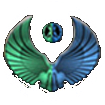 cards and exactly 1 ship. Your fleet must include the Scimitar, with Shinzon assigned to it.
Map Setup: Players determine initiative and setup order as normal. The Romulan High Command Player sets up their fleet(s) within 4" of the N edge of the play area. The Imperator Shinzon Player sets up their fleet(s) within 4" of the S edge of the play area.
SPECIAL RULES
Sector Condition: The Bassen Rift: The following Sector Condition rules apply:
Tokens have no effect, including for the purpose of triggering any ability. Cloaked ships modify their attack by +1, their defense by -2, and may re-roll 1 result each time they attack or defend.
Tokens may not be used to re-roll attack dice. If used to active a Secondary Weapon, before the attack roll is made, roll 1 attack die. Modify the number of dice rolled for the attack as follows: = -3 dice, = -2 dice,
= -1 die,
= No Result.
OBJECTIVES
Both Players: You win if you destroy all of your opponent's ships.
Note: To adjust the game's difficulty, increase the number of SP available to the Romulan High Command Player to 90 SP. It is further recommended that the Imperator Shinzon Player increases their fleet to 70 SP in this case.
The Human From Remus
Number of Players: 2
Special Components: Planet Token, 8 Time Tokens
MISSION OVERVIEW
It is the height of the Dominion War. The Romulan Star Empire has been drawn into the war on the side of the Federation-Klingon Alliance due to a Dominion-sponsored assassination, and is reeling before the Jem'Hadar onslaught. On one besieged world, the Romulans send the Remans led by Shinzon to defend the system, but neither is aware this was a secret Tal Shiar research base with an experimental Thalaron Generator...
SETUP
Romulan Player: 75 SP using only cards. Your fleet consists of exactly 2 ships, and must include the I.R.W. Twilight’s Wrath with Shinzon assigned as its captain. Dominion Player: 75 SP using no cards. You must include at least 3 ships in your fleet, and all ships in your fleet must have a hull value of 3 or less. All cards in your fleet must be of the same Printed Faction.
Map Setup: Place the Planet Token 6" from the N edge of the play area, centered between the E and W edges, with the 8 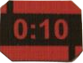 Tokens on it. Players determine initiative and setup order as normal. The Romulan Player sets up their fleet within a 4"x8" box centered on the N edge of the play area, and the Dominion Player sets up their fleet within 4" of the N edge of the play area.
SPECIAL RULES
Local Defenders: When attacking within Range 1 of the Planet Token, all ships in the Romulan Player's fleet add +1 die for Primary and Secondary Weapon attacks. The Secrets Of The Tal Shiar Will Be Mine!: At the start of each End Phase, remove 1 Token from the Planet Token. We Must Hurry Before Reinforcements Arrive!: Remove an additional Token from the Planet Token for each Dominion Player ship within Range 1 of the Planet at the start of the End Phase.
OBJECTIVES
Romulan Player: You win in the End Phase if you have a least 1 ship in the play area and all enemy ships are destroyed before the last Token is removed. Dominion Player: You win in the End Phase if all enemy ships have been destroyed -OR- if you have at least 1 ship in the play area, and all Tokens have been removed from the Planet Token. Note: To adjust the game's difficulty use 5, 10, or 12 Tokens. Or, increase the Dominion Player's fleet to 100 SP with a minimum of 4 ships.
Blood Oath
Number of Players: 2, 3, or 4
Special Components: 1 Planet Token, 6 Mission Tokens
MISSION OVERVIEW
The Albino, an Orion Syndicate pirate, has been located operating near Secarus IV. Having had personal dealings with this scum, and endured deep personal losses, you immediately set out to exact your revenge. On arriving, you find that other Klingon ships have also arrived. Your House serves the coldest, best revenge in the Empire - so YOU must be the one to kill the Albino to restore your honor, before the other Houses get to him first.
SETUP
Albino Player: 50 SP, must include The Albino as your Captain. All Klingon Players: 25 SP each. Each Klingon Player must take Koloth, Kor, or Kang as their Captain, and the Klingon Players may not duplicate unique cards amongst themselves (ie, if Player 2 uses Captain Koloth, Players 3 and 4 are prohibited from using that Captain.)
Map Setup: Place the Planet Token in the center of the play area. Place 6 Mission Tokens on the Planet Token. Each Player begins in a 4" x 8" area placed at one of the corners of the Play Area.
SPECIAL RULES
Four Thousand Throats May Be Cut In One Night By A Running Man: Remove 1 Mission Token from the Planet Token during each End Phase. Pity The Warrior Whose Foes Are All Slain: Only 1 Klingon Player may win this scenario. Any other Klingon Player loses the game. If Winning Is Not Important, Why Keep Score?: Suggested adjustments to difficulty include changing the number of Mission Tokens that begin the game on the Planet Token, or starting The Albino's Ship within Range 1 of the Planet Token.
OBJECTIVES
Albino Player Wins: When the last Mission Token has been removed from the Planet Token, if the Albino Player's Ship is still in play. Klingon Player Wins: The first Klingon Player to destroy the Albino Player's Ship immediately wins the game.
The Way Of The Warrior
Number of Players: 2
Special Components: 1 Space Station Objective Token, 8 Mission Tokens, 15 Shield Tokens
MISSION OVERVIEW
Captain Benjamin Sisko and the crew of Deep Space Nine are protecting Gul Dukat and the ruling council of Cardassia from the Klingons. Your mission is to capture Deep Space Nine before Federation Reinforcements can arrive. Unfortunately, it seems that Deep Space Nine has been secretly upgraded with improved phasers and shields as well as a stockpile of 5000 torpedoes. Heavy losses are expected, but today is a good day to die.
SETUP
Player One: 100 SP, all ships must be 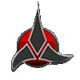 ships with only cards equipped to them. Player Two: 100 SP, all ships must be ships with only card equipped to them.
Map Setup: Place the Space Station Objective Token between Range 1 and Range 2 away from the N edge of the play area, centered between the E and W edges of the play area. Place 8 Mission Tokens and 20 Shield Tokens on the Space Station Objective Token. One player sets up in a 4" x 8" area in the SE corner of the play area, and the other player sets up in a 4" x 8" area in the SW corner of the play area.
SPECIAL RULES
The Space Station Objective Token represents Deep Space Nine and has the following stats: PWV: 5, AV: 0, HV: ∞, SV: 20
All Ships Gain The Following Actions:
Action:If this ship is within Range 1 of Deep Space Nine and all its Shields have been destroyed: Place any number of Captains, Admirals, and/or 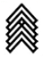 Upgrades equipped to this ship beside Deep Space Nine.
Action:If this ship is within Range 1 of Deep Space Nine and all its Shields have been destroyed: Equip any number of Captains, Admirals, and/or Upgrades beside Deep Space Nine that were equipped to this ship to this ship.
End Phase:
1. Add up the total printed SP of all players' cards beside Deep Space Nine. For each SP above 15, the player with initiative rolls one attack die. If at least 4 are rolled, the delegation has been captured.
2. Deep Space Nine rolls a separate attack vs. each ship at Range 1 - 2. For added difficulty, increase these attacks to Range 1 - 3. For reduced difficulty, decrease these attacks to Range 1.
3. Remove one Mission Token from Deep Space Nine.
OBJECTIVES
Both Players Win: If the delegation is captured and there are no cards beside Deep Space Nine before the last Mission Token is removed from Deep Space Nine
Insurrection!
Number of Players: 2
Special Components: 1 Planet Token, 1 Minefield Token, 6 Objective Tokens, 9 Mission Tokens
MISSION OVERVIEW
A Federation Admiral has gone too far in trying to secure the aid of new allies in the fight against the Dominion and has violated the ideals of the Federation. When confronted about this, the Admiral attempted to place your crew under arrest. Then your would-be "allies" attacked you directly. It falls to you to defend the honor and ideals of the Federation.
SETUP
Federation Player: 50 SP including 1 Federation ship. Opposing Player: 60 SP including at least 2 ships.
Map Setup: Place the Planet Token in the center of the map with 3 Mission Tokens on it. Place the Minefield Token centered between the N and S edges of the play area, centered between the Planet Token and the W side of the play area. Place 6 Mission Tokens on the Minefield Token to represent the Collector. The Opposing Player then places the 6 Objective Tokens face down anywhere in the play area, not overlapping any other token in the play area. Players determine initiative and set up order as normal. The Federation Player sets up their ship in a 4" x 16" area centered on the S edge of the play area. The Opposing Player sets up their ships within 4" of the Planet Token, with each ship entirely closer to the N edge of the play area.
SPECIAL RULES
Briar Patch: When a ship performs a maneuver with a speed greater than 2, that ship takes 1 damage for every point of speed of that maneuver over 2. This damage occurs immediately, before taking any actions. That ship's player may place an 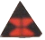 Token beside it to reduce this damage by 1. If applied to the ship's Hull, all damage is converted to .
Metaphasic Radiation: All ships may remove 1 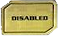 Token or 2 Tokens instead of 1 from any 1 Upgrade, Captain, Admiral, or Elite Talent Upgrade during each End Phase.
Metreon Gas Pockets: If a ship ends its maneuver touching an Objective Token or its maneuver template overlaps an Objective Token, immediately destroy 1 of its Shield Tokens and place an Token beside it before taking any actions.
Activating The Collector: Each End Phase, move 1 Mission Token from the Planet Token to the Minefield Token.
Destroying The Collector: The Minefield Token may be attacked. It does not roll any Defense Dice when attacked. Move 1 Mission Token forom the Minefield Token to the Planet Token for each or result. If no more Mission Tokens remain on the Minefield Token, it is destroyed (remove the Minefield Token from the Play Area).
OBJECTIVES
Federation Player: You win immediately if the Mine Field Token is destroyed. Enemy Player: You win immediately if the Federation Ship is destroy or there are no more Mission Tokens remaining on the planet.
Note: To adjust the game's difficulty, adjust the number of Mission Tokens in use, and/or the number of Mission Tokens starting on the Collector vs the Planet Token.
Operation: Rescue
Number of Players: 2
Special Components: 1 Planet Token, 1 Minefield Token
MISSION OVERVIEW
While on a personal "recon mission" to a planet on the far side of the Bajoran Wormhole, a Federation Captain and his party have run across hostile natives of the Gamma Quadrant. The Federation is mounting a rescue mission to bring the expedition home.
SETUP
Federation Player: 125 SP, including 1 Galaxy Class ship and 3 other ships that each have a Hull Value of 3 or less. Place a Token on the Ship Card of one of the non-Galaxy Class ships; this ship is the Disabled Federation Ship. The Disabled Federation ship cannot be equipped with a
/
Captain, cannot be a Shuttle, and cannot have more than 3 cards equipped to it. Opposing Player: 75 SP, including at least 3 ships that eahc have a Hull Value of 3 or less. Each Opposing ship may equip a Suicide Attack
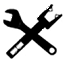
Upgrade for 0 SP and without requiring an Upgrade slot.
Map Setup: Place the Planet Token centered 8" from the S and W edges of the play area. Place the Minefield Token touching the N and E edges of the play area (this represents the Bajoran Wormhole). Place the Disabled Federation Ship so that its base is entirely within 4" of the Planet Token. Players determine initiative and set up order for their remaining ships as normal. The Federation player sets up their remaining ships with the rear edge of their bases touching the Minefield Token. The Opposing Player sets up so that their ship bases are entirely within 8" of the Planet Token, but are neither within 4" of the Planet Token, nor within 8" of the Disabled Federation Ship.
SPECIAL RULES
Rescue The Captain! Hurry!: The Disabled Federation Ship cannot move, be placed, take actions, attack, nor be attacked. During the End Phase, if any other Federation ship is within Range 1 of the Disabled Federation Ship, remove the
Token from its Ship Card. It is no longer disabled and may then act normally.
Rescue The Bait! Ha!: During the End Phase, the Opposing Player rolls 1 Attack Die. If they roll a
or
,
they choose who has the Initiative Token next turn.
You Must Escape To Spread The Word - No Trespassing!: The Opposing Player cannot attack the Disabled Federation Ship, regardless of whether or not a
Token is present on its Ship Card.
Make Good Your Escape: If the front edge of a ship's base or a maneuver template touches the Minefield Token during the Activation Phase, that ship escapes to the Alpha Quadrant (remove it from the game).
OBJECTIVES
Federation Player: You win if the Disabled Federation Ship has been rescued and at least 75 SP worth of your fleet escapes to the Alpha Quadrant (including the Disabled Federation Ship). Enemy Player: You win if you destroy all the Federation Player's ships except for the Disabled Ship.
Assault On Andoria
Number of Players: 2
Special Components: Planet Token, 10 Mission Tokens
MISSION OVERVIEW
New intelligence given to the Vulcan High Command shows that the Andorians have recovered a Xindi superweapon, and intend to use it against Vulcan. The Hight Command has sent a large Vulcan fleet to make a preemptive strike against Andoria to prevent this outrage from happening. But the Andorians have sent for reinforcements. If the Vulcan forces has not forced an Andorian surrender before the reinforcements arrive, it is only logical to assume the destruction of the strike force - and of Vulcan as well.
SETUP
Vulcan Player: 100 SP using only cards. Must include at least 1 D'Kyr-Class ship and 1 Suurok-Class ship. Andorian Player: 70 SP. Must not use any cards. All ships in your fleet must have a hull value of 4 or less.
Map Setup: Place the Planet Token in the center of the map with the 10 mission tokens on it. Players determine initiative and setup order as normal. The Vulcan Player sets up their fleet within 4" of the N edge of the play area, and the Andorian Player sets up their fleet within 4" of the S edge of the play area.
SPECIAL RULES
Home Field Advantage: When defending within Range 1 of the Planet Token, all ships in the Andorian Player's fleet modify their Agility value by +1.
Time Is Of The Essence: At the end of each game round, remove 1 Mission Token from the Planet Token.
Neither player may use a mine upgrade or an upgrade which removes or places their ship from/in the play area.
OBJECTIVES
Vulcan Player: You win in the End Phase if you have at least 1 ship in the play area and all enemy ships are destroyed. Andorian Player: You win in the End Phase if you have at least 1 ship in the play area, and either: All Mission Tokens have been removed from the Planet Token OR All enemy ships have been destroyed.
Note: To adjust the game's difficulty, use 8 or 12 Mission Tokens.
Hold The Line
Number of Players: 2 to 4
Special Components: None
MISSION OVERVIEW
The Dominion fleet seems unstoppable as they attack more and more systems daily. The Federation Alliance has set up a defensive cordon to prevent any more Dominion ships from slipping into Allied territory. But Starfleet has to many commitments for the number of ships available, so the cordon is spread thin. It falls to the battle-tested Nebula-class ships, leading what few hulls are available, to hold the line, and buy time for the Federation Alliance to gear up production for a full-scale war.
SETUP
Player/Team: 130 SP. Your fleet must include the U.S.S. T'Kumbra, with Solok assigned as its Captain. Player/Team: 130 SP, minimum of 3 ships.
Map Setup: The Federation Player/Team sets up their fleet(s) within 8" of the S edge of the play area.
The Dominion Player/Team sets up their fleet(s) within 4" of the N edge of the play area.
SPECIAL RULES
4-Player Setup: FEDERATION ALLIANCE TEAM (2 PLAYERS): 130 SP per player. At least on player must include the U.S.S. T'Kumbra, with Solok assigned as its Captain.
DOMINION TEAM (2 PLAYERS): 130 SP per player, minimum of 3 ships per player.
Players determine initiative and setup order as normal. The Federation Alliance Player/Team sets up their fleet(s) within 8" of the S edge of the play area. The Dominion Player/Team sets up their fleet(s) within 4" of the N edge of the play area.
Neither player may use a mind upgrade or an upgrade which removes or places their ship from/in the play area.
OBJECTIVES
Federation Alliance Player/Team: You win in the End Phase if you have at least 1 ship in the play area and all remaining Dominion ships are destroyed. Dominion Player/Team: You win immediately if at least half the ships in your fleet(s) rounded up have left the play area through the S edge of the play area.
Note: To adjust the game's difficulty, vary the number of required escaping Dominion ships to 2 or 4. To adjust the 4-player game's difficulty, adjust the number of players per team to 3 vs 1 or 1 vs 3. The solo player in a team game should use the full points and build restrictions of their chosen fleet.
The Secret Of The Orias Sector
Number of Players: 2
Special Components: 3 Mission Tokens
MISSION OVERVIEW
The Obsidian Order has been guarding the Orias Sector for an unknown, but undoubtedly shady, purpose. It's believed that they are secretly building a fleet without the knowledge of the Central Command. Being such an efficient and ruthless intelligence agency, anyone who has tried to enter the system has been "detained" with extreme prejudice.
SETUP
Obsidian Order Player: 60 SP, including at least 1 Cardassian Keldon Class ship. Federation Player: 40 SP, including exactly 1 Federation ship.
Map Setup: The Obsidian Order Player sets up anywhere within 12" of the N edge of the play area. The Federation Player sets up anywhere within 4" of the S edge of the play area.
SPECIAL RULES
Superb Intelligence Gathering: Once per game round, if a ship in the Obsidian Order Player's fleet is targeted by an opposing effect, the Obsidian Order Player may place an
Token beside the target ship to cancel that effect.
Acquire Scans Of The Orias Sector: When a ship in the Federation Player's fleet in the Obsidian Order Player's starting area performs a
Action, the Federation player may roll 3 attack dice. If at least 1
is rolled, place a Mission Token on that ship's Ship Card.
OBJECTIVES
Obsidian Order Player: Destroy the Federation Player's ship. Federation Player: Have 3 Mission Tokens on your ship's Ship Card per the Acquire Scans Of The Orias Sector special rule and leave the play area via the S edge or destroy all ships in the Obsidian Order Player's fleet.
The Simpler Times
Number of Players: 2
Special Components: None
MISSION OVERVIEW
Gul Dukat has stolen a Klingon Bird-of-Prey and is now taking the fight to them. Having learned the ins and outs of his newly-acquired ship, Gul Dukat is now attacking any Klingon ship he comes across.
SETUP
Gul Dukat Player: 60 SP, including exactly one Klingon Bird-of-Prey or B'Rel Class ship with Gul Dukat as its Captain. Klingon Player: 50 SP, must include at least 2 ships, all ships and the cards equipped to them must be
.
Map Setup: The Gul Dukat Player sets up within 4" of the N edge of the play area. The Klingon Player sets up within 4" of the S edge of the play area.
SPECIAL RULES
All Ships, Pursue The Cardassian!: When a Klingon ship is destroyed, at the beginning of the next Planning Phase, the Klingon Player may redeploy that ship in either player's starting area with all cards that were equipped to it at the start of the game equipped to it again, excluding cards that were discarded or removed from play.
Fly It Like You Stole It!: At the beginning of the Combat Phase, the Gul Dukat Player's ship may perform an Action on its Action Bar as a Free Action or perform a Maneuver on its Maneuver Dial with a speed of 1 or 2.
OBJECTIVES
Gul Dukat Player: Destroy at least 2 Klingon ships and exit the play area via the S edge. Klingon Player: Destroy the Gul Dukat Player's ship.
Uneasy Alliance (Part One)
Number of Players: 2
Special Components: 1 Planet Token, 6 Objective Tokens, and 12 Mission Tokens
MISSION OVERVIEW
The Federation and the Borg have both detected some anomalous readings coming from a planet on the outer edge of Federation controlled space. Your mission is to get through the battlefield to investigate the planet and prevent the opposing fleet from completing their investigation.
SETUP
Federation Player: 100 SP, each player must have exactly 1 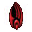 ship and exactly 1 ship in their fleet. Borg Player: 100 SP, each player must have exactly 1 ship and exactly 1 ship in their fleet.
Map Setup: Place the Planet Token centered from E to W at Range 2 from the N edge of the play area. Place 12 Mission Tokens on the Planet Token. Objective Tokens may not be placed within Range 2 of a starting area or within Range 1 of any edge of the play area, another Objective Token, or the Planet Token. Starting with the Initiative Player, each player places 3 Objective Tokens in alternating order. Both players'
ships are set up in a 4" x 8" area in the SW corner of the play area. Both players' ships are set up within Range 1 of the Planet Token. Ships that begin in the same starting area may not attack each other as long as its controller has more than one ship remaining in their fleet.
SPECIAL RULES
Regenerative Re-Assimilation: Any
ship with the
action on its action bar may, while within Range 1 of an Objective Token, take an Action to roll 4 defense dice and repair 1 Hull for every
.
Any ship that does so may still attack the turn that it performs this action.
Any
ship may, while within Range 1 of an Objective Token, take an Action to roll 4 defense dice and repair 1 destroyed Shield Token for every
.
All Ships Gain The Following:
Action: If this is a
ship that is within Range 1 - 2 of the Planet Token, roll 5 defense dice. If there are at least 2
, remove 1 Mission Token from the Planet Token and place it on this ship's Ship Card.
When Defending: During the Roll Defense Dice Step you may choose not to roll any defense dice and transfer all
and
to a friendly ship within Range 1 - 2 with the following conditions:
1. If transferring damage to a ship, all damage is dealt to the ships Hull even if the ship has active Shields.
2. If transferring damage to a ship, all damage is dealt to the ship's Shields. All remaining damage is dealt to the defending ship.
3. Each time you transfer damage to or from a friendly ship, one of those ships may remove 1 Mission Token from the Planet Token and place it on its Ship Card if it is within Range 1 - 2 of the Planet Token. When Defending: During the Roll Defense Dice Step, you may give the attacking ship 1 Mission Token from this ship's Ship Card to cancel the attack.
OBJECTIVES
* The game ends when all Mission Tokens have been removed from the planet or if any player has 9 or more Mission Tokens on their ships' Ship Cards during the End Phase.
* The player who has the most Mission Tokens on their ships' Ship Cards at the end of the game wins.
* You win if all of your opponents ships are destroyed.
Uneasy Alliance (Part Two)
Number of Players: 2
Special Components: 1 Planet Token, 6 Objective Tokens, and 12 Mission Tokens
MISSION OVERVIEW
Both the Borg & Federation have been lured to a sector just inside of Federation-controlled space. Your task is to scan the wrecked Borg & Federation ships to discover the culprit's identity, while avoiding the traps that party has left behind.
SETUP
Federation Player: 100 SP, each player must have exactly 1 ship and exactly 1 ship in their fleet. Borg Player: 100 SP, each player must have exactly 1 ship and exactly 1 ship in their fleet.
Map Setup: Staring with the Initiative Player, each player places 3 Objective Tokens in alternating order per the normal Obstacle Rules. Then, place 2 Mission Tokens on each Objective Token. Both players'
ships are set up within a 4" x 8" area in the SW corner of the play area. Both players'
ships are set up in a 4" x 8" area in the SE corner of the play area. Ships can only attack by taking 1 Mission Token from their Ship Card and placing it on the target ship's Ship Card.
SPECIAL RULES
Regenerative Re-Assimilation:
A
ship within Range 1 of an Objective Token may take an Action to roll 4 defense dice. Repair 1 Hull for every
.
A
ship within Range 1 of an Objective Token may take an Action to roll 4 defense dice. Repair 1 Shield for every
.
Coerced Cooperation:
A
ship may take an Action to target an opposing
ship within Range 1 - 2 to roll 5 defense dice. If there are at least 2
, steal 1 Mission Token from the target ship.
A
ship within Range 1 of an Objective Token may take an Action to roll 5 defense dice. If there are at least 2
, place 1 Mission Token from that Objective Token on this ship's Ship Card.
When Defending: During the Roll Defense Dice Step you may choose not to roll any defnse dice and trasnfer all
and
to a friendly ship within Range 1 - 2 with the following conditions:
1. If transferring damage to a ship, all damage is dealt to the ships Hull even if the ship has active Shields.
2. If transferring damage to a ship, all damage is dealt to the ships Shields. All remaining damage is dealt to the defending ship.
3. Each time you transfer damage to or from a friendly ship, one of those ships may remove 1 Mission Token from the Planet Token and place it on its Ship Card if it is within Range 1 - 2 of the Planet Token.
During each Combat Phase, after all ships have attacked, all ships within Range 1 of each Objective Token are attacked with 5 attack dice. Each ship may only be attacked by 1 Objective Token per turn in this way.
OBJECTIVES
* The game ends when all Mission Tokens have been removed from the Objective Tokens.
* You win the game if you control 7 of more Mission Tokens during the End Phase
* The Player who owns the most Mission Tokens at the end of the game wins.
* You win if all of your opponents' ships are destroyed.
Assault On Caleb IV
Number of Players: 2
Special Components: 5 Objective Tokens (1 Space Station, 2 Derelict Ship, and 2 Debris), 4 Mission Tokens
MISSION OVERVIEW
In the Caleb System the Federation has set up an outpost. The Klingon Empire has dispatched ships to destroy this outpost. Commanded by the legendary Kor, the Klingons have a plan to destroy the outpost. Can the Federation defend their outpost or will Kor lead the Klingons to victory?
SETUP
Federation Player: 50 SP, including exactly 1 Constitution Class ship. Klingon Player: 80 SP, including exactly 2 D7 Class ships and 1 "Kor" Captain Card
Map Setup: The Federation player places all the Objective Tokens in the play area face down. No Objective Token may be within Range 1 of another Objective Token nor within Range 1 of any edge of the play area. Then, the Klingon Player sets up within 4" of any edge of the play area and the Federation player sets up on the edge of the play area opposite of the one the Klingon Player set up on. Then, flip all Objective Tokens face up and place 2 Mission Tokens on each Debris Objective Token.
SPECIAL RULES
Each Objective Token has special rules.
Space Station: This Objective Token represents the main outpost in the system. This Objective Token is a ship for the purposes of all rules and has a Primary Weapon Value of 0, an Agility Value of 0, a Hull Value of 6 and a Shield Value of 5. Once per game round, an attacking Federation ship within Range 1 of this Objective Token may add 2 attack dice to its attack.
Derelict Ship: These Objective Token represent the outpost's sensor arrays. This Objective Token is a ship for the purposes of all rules and has a Primary Weapon Value of 0, an Agility of 3, a Hull Value of 3, and a Shield Value of 0. At the start of the Combat Phase, place 1
Token beside each friendly Federation ship within Range 1 of this Objective Token if it does not already have one.
Debris: This objective represents previously damaged portions of the outpost that are being repaired. This Objective Token is a ship for the purposes of all rules and has a Primary Weapon Value of 0, an Agility Value of 1, a Hull Value of 2, and a Shield Value of 1. At the beginning of the End Phase, the Federation Player may remove 1 Mission Token from this Objective Token to repair 1 Shield on one of their ships within Range 1.
OBJECTIVES
Federation Player: Destroy all ships in the Klingon Player's fleet.
Klingon Player: Destroy all Objective Tokens.
The Practical Joker
Number of Players: 2
Special Components: None
MISSION OVERVIEW
While patrolling the Neutral Zone the U.S.S. Enterprise entered an energy field while fleeing from Romulan ships. After passing through the energy field, the computer was damaged by the subatomic particles that made up the energy field. This damage has caused the computer to suffer the electronic equivalent of a nervous breakdown. Now, due to this damage, everything on the ship is malfunctioning and the crew are being impeded while trying to perform their duties.
SETUP
Federation Player: 60 SP, including only the U.S.S. Enterprise Romulan Player: 60 SP, including exactly two Romulan D7 Class ships.
Map Setup: The Federation Player sets up within 4" of the N edge of the play area. The Romulan Player sets up within 4" of the S edge of the play area.
SPECIAL RULES
Messing With The Systems: When a ship would perform an Action on its Action Bar, roll 1 attack die and consult the below chart.
* - Perform a
,
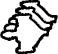 , or
Action on that ship's Action Bar instead.
* - Perform an
or
Action on that ship's Action Bar instead.
* - Perfrom a
or
Action on that ship's Action Bar instead.
* - This ship loses its Action instead.
Messing With The Crew: When the ability of a Captain, Admiral, or
Upgrade is used, place 2
Tokens on that card in addition to its normal costs and conditions.
The Final Joke: All ships gain the following ability:
WHEN DEFENDING: Once per game:
Cancel this attack.
OBJECTIVES
Both Players: Destroy the opposing fleet
A Lightning Storm In Space
Number of Players: 2
Special Components: 1 Planet Token, 10 Mission Tokens
MISSION OVERVIEW
A temporal distortion has been discovered in nearby space. We have dispatched your fleet, Admiral, to investigate the distortion and the handful of ships that have emerged. Another fleet from a neighboring power is alson on its way. If there's an outbreak of hostilities, it will be up to you to eliminate all threats.
SETUP
Both Players: 130 SP. 90 SP must be Ships, Captains, Admirals, Upgrades, etc. that are
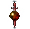. The remaining 40 SP must be Ships, Captains, Admirals, Upgrades, etc. that are not
.
Map Setup: Place the Planet Token in the center of the play area. Place 10 Missions Tokens on the Planet Token. Each player places their non-
ship within Range 1 of the Planet Token. One player sets up within 4" of the S edge. The other player sets up within 4" of the N edge.
SPECIAL RULES
Temporal Distortion: The Planet Token completely obstructs all attacks. Any ship whose Base or Maneuver Template overlaps the Planet Token is immediately destroyed.
Time Is Of The Essence: Remove 1 Mission Token from the Planet Token at the end of each game round.
OBJECTIVES
A Player Wins: If you destroy the opposing non-
Ship using your
Ships before the last Mission Token is removed from the Planet Token.
Both Players Lose: If neither non-
Ship is destroyed when the last Mission Token is removed from the Planet Token, or non non-
Ship destroys the other non-
ship.
The Ancient Weapon
Number of Players: 2
Special Components: 2 Planet Tokens, 3 Mission Tokens, 3 Objective Tokens
MISSION OVERVIEW
The Teenaxi and the Fibonans have discovered the remains of an ancient weapon in local space. Fearing its use by their hated foes, both sides now race to collect all of its pieces. Neither side has started shooting yet, but the odds of mutually assured destruction are rising.
Map Setup: Place one Planet Token centered 8" from the N and E edges of the play area. Place the other Planet Token centered 8" from the S and W edges of the play area. Then, place the three Objective Tokens per the standard rules and place a Mission Token on each Objective Token. One Player sets up within 4" of the N edge. The other player sets up within 4" of the S edge.
SPECIAL RULES
It Belongs In An Arsenal!: If a ship within Range 1 of an Obstacle Token or ship that has no Active Shields, the ship may use the following Action:
Action: Remove 1 Mission Token from the target Obstacle Token or ship and place it on this ship's Ship Card.
OBJECTIVES
A Player Wins: If you collect all 3 Mission Tokens, and all of your ships with a Mission Token flee the play area through your starting area.
Both Players Lose: If no one achieves the "A PLAYER WINS" Objective.
Maquis Tactics
Number of Players: 2
Special Components: Maquis Tactics
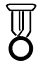,
6 Objective Tokens
MISSION OVERVIEW
It is imperative for the more gifted of the Maquis' commanders to help impart the preferred Hit and Run techniques to newer Captains. To that end, a series of war games pitting Maquis commanders against each other. After all, if Maquis Captains can strike faster, more agile foes like themselves, then the slower and more ponderous Dominion should become easy targets.
SETUP
Player 1: 80 SP. No player may use a ship with more than 3 Hull. Player 2: 80 SP. No player may use a ship with more than 3 Hull.
Map Setup: Players place the Objective Tokens in the play area per the normal setup rules. Players then set up ships as normal.
SPECIAL RULES
Training Day: At the start of the game, set aside the "Maquis Tactics"
Updgrade Card.
All ships in play may use the ability on the "Maquis Tactics"
Upgrade Card.
It is not considered to be equipped to any ship(s), and it does not need to be paid for to use its text. It also does not take up any Upgrade slot, and it is immune to effects of the "Injured Captain" Damage Card.
Learning To Use Shadows As Cover: Each Objective Token completely obstructs attacks.
OBJECTIVES
Both Players: You win if you destroy all of the opposing player's ships
Tensions Rise
Number of Players: 4
Special Components: 4 Planet Tokens, 10 Mission Tokens
MISSION OVERVIEW
A highly coveted resource has led to an increase in tensions among four neighboring species of the quadrant. Each of the rivals have begun to scout out a two-planet system in a strategically vital location, and it is only a matter of time before so many heavily-armed ships, with the four competing agendas, ignite a war.
SETUP
Both Players: 50 SP.
Map Setup: Each player places a Planet Token in the play area anywhere not within Range 1 - 2 of any edge of the play area or Range 1 of another Planet Token. Place the Mission Tokens next to the play area to represent the number of game rounds remaining. One player sets up in a 4" x 4" area in each corner of the play area.
SPECIAL RULES
10 Minutes To Midnight: During each End Phase, remove 1 Mission Token from the pile next to the play area.
Reconnaissance In Force: When a ship is destroyed, the player who destroyed it gains 1 Victory Point (VP). During the Planning Phase, each player may return any of their destroyed ships to the play area with all cards that were discarded from the equipped to them, in their starting area or within Range 1 of a Planet Token. All
and
Tokens on cards equipped to each ship returned in this way are removed.
OBJECTIVES
A Player Wins: The player with the most Victory Points when the last Mission Token is removed from the pile, wins
Profitable Acquisitions (Part One)
Number of Players: 2
Special Components: 1 Planet Token, 12 Mission Tokens
MISSION OVERVIEW
Several Ferengi Starships have been spotted approaching a Federation fleet in this sector. With those ships sorely needed to fight an anticipated Borg incursion, a patrol fleet has been sent from Sector 001 to ensure that the Ferengi do not make off with the Federation's last line of defense.
SETUP
Federation Player: 130 SP, at least three ships. Ferengi Player: 90 SP, at least two ships and all your ships must be
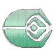 ships.
Map Setup: Place the Planet Token in the center of the play area. The Ferengi Player then selects 1 ship from the Federation Player's fleet to be the Hijacked Ship and places it within Range 1 of the Planet Token. Place 1 Mission Token on the Hijacked Ship's Ship Card to show that it has been hijacked. Place the remaining Mission Tokens in a pool (off the map) for future use. The Ferengi Player sets up in a 4" x 8" area in the SW corner of the play area. The Federation player sets up in a 4" x 8" area in the NE corner of the play area.
SPECIAL RULES
Hostile Takeover: While there is a Mission Token on the Hijacked Ship's Ship Card, it is controlled by the Ferengi Player and is considered to be a part of their fleet.
"Legitimate Business":
ships may be given the following Action while within Range 1 of the Hijacked Ship: ACTION: Add 1 Mission Token to the Hijacked Ship's Ship Card.
Law And Order: Ships controlled by the Federation Player may be given the following Action while within Range 1 of the Hijacked Ship: ACTION: Remove 1 Mission Token from the Hijacked Ship's Ship Card.
OBJECTIVES
Ferengi Player: You win if the Hijacked Ship leaves the play area via the N edge with at least 1 Mission Token on its Ship Card -OR- if you destroy every Federation Player ship and there is a least 1 Mission Token on the Hijacked Ship's Ship Card.
Federation Player: You win if you destroy every Ferengi Player ship and there are 0 Mission Tokens on the Hijacked Ship card.
All Players: All players lose if the Hijacked Ship is destroyed.
Profitable Acquisitions (Part Two)
Number of Players: 2
Special Components: 6 Obstacle Tokens
MISSION OVERVIEW
IF THE FEDERATION PLAY WON "PROFITABLE ACQUISITIONS (PART ONE)" (CASE A): The projected Borg attack has failed to materialize, and additional reinforcements have been routed to this sector. Your task is to help the Ferengi understand that stealing ships from the Federation is always "unprofitable".
IF THE FERENGI PLAYER WON "PROFITABLE ACQUISITIONS (PART TWO)" (CASE B): The "merchandise" has been moved. The Gold-Pressed Latinum has been collected. All that remains now is to return home, and count the profits.
IF BOTH THE FERENGI AND FEDERATION PLAYERS LOST "PROFITABLE ACQUISITIONS (PART ONE)" (CASE C): The goods have been lost and now the previous owners are coming to discuss the circumstances of how we acquired them. Sometimes, the only profitable course of action is to leave the bargaining table.
SETUP
CASE A: Federation Player: 130 SP, at least three ships. Ferengi Player: 90 SP, at least two ships and all your ships must be
ships.
CASE B: Federation Player: 90 SP, at least two ships. Ferengi Player: 90 SP, at least two ships and all your ships must be
ships.
You start with 10 bonus GPLT, to be distributed between your
Captains as you wish.
CASE C: Federation Player: 90 SP, at least two ships. Ferengi Player: 90 SP, at least two ships and all your ships must be
ships.
Map Setup: The Ferengi Player sets up in a 4" x 8" area centered on the S edge of the play area. The Federation Player sets up in a 4" x 8" area centered on the N edge of the play area. Place the 6 Obstacle Tokens in the play area per standard rules.
SPECIAL RULES
All Sales Final:
Captains equipped to ships controlled by the Ferengi Player gain the following ability: WHEN DEFENDING: Spend 5 GPLT.
Cancel the attack.
Taxes And Other Fees Not Included: When a Ferengi Player's ship would be destroyed, discard all GPLT on that Ship's Captain and remove Damage Cards from that Ship's Ship Card until there are a number of Damage Cards remaining equal to that Ship's Hull Value minus 1. Then, flip all remaining Damage Cards face down. That ship is now Disabled.
Limited Warranty: Disabled Ships remain Disabled while their Captain has 0 GPLT. They are no longer Disabled when their Captain has 1 or more GPLT.
Void Where Prohibited: Disabled Ships may not be assigned a Maneuver Dial but may perform Actions. Disabled Ships cannot perform Attacks, nor can they be Attacked.
OBJECTIVES
Ferengi Player: You win if at least 1 of your ships leaves the play area via the N edge.
Federation Player: You win if all Ferengi Players ships are Disabled.
Destroy The Capital Ship
Number of Players: 2
Special Components: None
MISSION OVERVIEW
A training exercise is underway to determine the ability of a fleet to handle unending swarms controlled by a command vessel. Admiral, it is up to you to eliminate the command ship.
SETUP
Dominion Player: 100 Squadron Points including 1 Jem'Hadar Battleship or Jem'Hadar Battle Cruiser. All other ships in the Dominion Player's Fleet must have a Hull Value of 3 or less. Enemy Player: 100 Squadron Points.
Map Setup: The Dominion Player sets up anywhere within 16" of the S edge of the play area. The Enemy Player sets up anywhere within 4" of the N edge.
SPECIAL RULES
An Unending Swarm: During each Planning Phase, the Dominion Player may redeploy all of their destroyed ships with 3 Hull or less. Each ship deployed in this manner may equip all non-unique cards that were equipped to them at the start of the game.
OBJECTIVES
Dominion Player: You win if you destroy the Enemy fleet.
Enemy Player: You win if you destroy the Capital Ship (Battleship or Battle Cruiser).
Destroy The Intruders
Number of Players: 2
Special Components: 1 Planet Token, 1 Mission Token, 3 Objective Tokens
MISSION OVERVIEW
During the Dominion War, an enemy fleet attempts to end the conflict early with a single decisive strike at the Founders' home world. Victory is nearly in the enemy fleet's grasp, but the Dominion fleet is about to show them that in war, "The Plan" is always the first casualty.
Map Setup: Place the Planet Token (with the Mission Token on it) centered E to W and 4" from the N edge of the play area. Players then alternate placing the Objective Tokens in the play area per the normal setup rules, starting with the player that has Initiative. The Dominion Player sets up anywhere within 4" of the N edge of the play area and must place at least 1 ship in their starting area, with any number of their other ships concealed until the start of the second Planning Phase (see SPECIAL RULES section). The Enemy Player sets up normally anywhere within 4" of the S edge of the play area.
SPECIAL RULES
Concealed Deployement: At the start of the second Planning Phase, all concealed Dominion ships must be placed within Range 1 of any Objective Token.
Intelligence Gained: When an Enemy Player's ship is within Range 1 of the Planet Token, it may perform the following Action:
ACTION: Remove the Mission Token from the Planet Token and place it on this ship's card. This ship may not leave the play area unless it is destroyed or exits the play area through the S edge. If this ship is destroyed, return the Mission Token to the Planet Token.
OBJECTIVES
Dominion Player: You win if you destroy all of the Enemy ship.
Enemy Player: You win if one of your ships with a Mission Token leaves the board through the S edge of the play area per the INTELLIGENCE GAINED special rule.
Attack On The Founders' Homeworld
Number of Players: 2 or 3
Special Components: 1 Planet Token, 12 Mission Tokens
MISSION OVERVIEW
During the Dominion War, the Romulan Empire sees a unique opportunity to end the conflict early with a single decisive strike at the Founders' home world. Victory is nearly in the Alliance's grasp, but the Romulans may have forgotten that in war, "The Plan" is alway the first casualty.
SETUP
Romulan Player:
130 SP Against 1 Enemy Player.
260 SP Againts 2 Enemy Players. Enemy Player: 130 SP.
Map Setup: Place the Planet Token centered on the N edge of the play area. Place 1 Mission Token on the Planet Token per ship in the Romulan Player's Fleet to represent its combat effectiveness. The Romulan Player sets up their ships in a 4" x 8" area centered on the S edge of the play area. The Enemy Player(s) will not set up their ships until the Planning Phase of the second game round (see SPECIAL RULES section).
SPECIAL RULES
Enemy Fleet Deployment: The Enemy Player(s) set up their ships during the Planning Phase of the second game round. The Enemy Player(s) set up their ships within two 4" x 8" areas: one in the NW corner and one in the NE corner. The Enemy Players must place at least 1 ships in each of the 2 areas. You may place a Battle Stations, Scan, or Evade Token beside each Enemy Player ship deployed this way.
To End The War: During the Combat Phase, the Romulan Player may target the Planet Token with their ships' Primary Weapon attack. For each such attack that rolls at least 2
and/or
,
you may remove 1 Mission Token from the Planet Token.
OBJECTIVES
Romulan Player: You win if you remove all Mission Tokens from the Planet Token and have at least 1 of your ships leave the board through the S edge of the play area.
Enemy Player(s): You win if you destroy all of the Romulan Player's ships.
Rights Of The Neutral Zone
Number of Players: 2
Special Components: 1 Planet Token, 12 Mission Tokens, 1 Unused Maneuver Dial with White, Green, and Red Maneuvers
MISSION OVERVIEW
During a period of strained relations with one of its neighbors, the Romulan Empire has been preparing for war. Any incidents along the Neutral Zone between the two powers could lead to a cataclysm. Naturally, now is the time that a contested planet on the boundary line was invited delegations from each side. Tensions are high, and only a small incident will lead to disaster. Behind the scenes, some Romulan hardliners believe that their preparations will give the Empire the upper hand for the "inevitable" conflict.
SETUP
Romulan Player: Both players should agree upon an appropriate number of Squadron Points. Enemy Player: Both players should agree upon an appropriate number of Squadron Points.
Map Setup: Place the Planet Token in the center of the play area. Place 6 Mission Tokens in a line extending from the Planet Token to the NW corner of the play area and 6 Mission Tokens in a line extending fromt the Planet Token to the SE corner of the play area. The Romulan Player sets up in a 4" x 8" area in the NE corner of the play area. The Enemy Player sets up in a 4" x 8" area in the SW corner of the play area.
SPECIAL RULES
A Tense Peace: An attack cannot be made at Range 2 - 3 if it would cross the Neutral Zone Boundary (the line of Mission Tokens). When attacking, if the defending ship is on the same side of the Neutral Zone Boundary as its starting area, then that attack is made with -2 attack dice.
Press The Diplomatic Advantage: During each end phase, a Player scores +10 FP if they have more ships within Range 1 of the Planet Token than their opponent, not counting any ships that overlap or are in base contact with the Planet Token.
Hardliners Secret Objectives: At the end of Setup, the Romulan Player selects an unused maneuver dial that has White, Green, and Red Maneuvers. Set the dial to a Maneuver that has a color matching your Secret Objective and place it facedown:
- Green Maneuver (+5 FP): Destroy one or more opposing ships on your side of the Neutral Zone Boundary.
- White Maneuver (+10 FP): Have one or more of your ships destroyed on your side of the Neutral Zone Boundary.
- Red Maneuver (+15 FP): Destroy 2 or more opposing ships on the Enemy Player's side of the Neutral Zone Boundary.
At the end of the game, reveal the selected Hardliners Secret Objective and score the corresponding FP, if applicable.
OBJECTIVES
Romulan Player: You win if you end the game with more FP scored than the Enemy player.
Enemy Player: You win if you end the game with more FP scored than the Romulan player.
A New Source Of Dilithium
Number of Players: 3
Special Components: 1 Planet Token, 12 Mission Tokens
MISSION OVERVIEW
Rumors of a new planet harboring dilithium crystals reach the ears of the Federation, as well as the Klingon and Romulan Empires. So rich is the new source that it threatens to provoke open war from the Romulan Empire, and even threatens the Khitomer Accords between the Federation and the Klingon Empire.
Each great power sends its closest ship to the planet to discover if the rumors are true, hoping that open war can be averted, but first each side wants to retrieve dilithium samples for analysis. The first ship to reach the planet, secure the samples, and return to its home will be able to lay claim to the discovery.
SETUP
Federation Player: 40 squadron points, including at least one Federation Ship and one Upgrade. Klingon Player: 40 squadron points, including at least one Klingon Ship and one Upgrade. Romulan Player: 40 squadron points, including at least one Romulan Ship and one Upgrade.
Map Setup: The ships are set up as in a standard 3-Player Game (see "3-Player Setup Diagram" on Page 7 of the rulebook). Place the Planet Token in the exact center of the play area and place the 12 Mission Tokens on the table outside of the play area.
SPECIAL RULES
Ships moving through, overlapping, or firing through the Planet Token must obey the rules for the Planet Token outlined on page 26 of the rulebook.
Each ship within Range 1 of the Planet Token gains the following two Actions:
ACTION: If your ship is not Cloaked, disable all of your remaining Shields and then disable your Captain and one Crew Upgrade of your choice (place Disabled Upgrade Tokens on these cards.) These two cards are considered to have beamed down onto the planet as your "Away Team" you cannot remove these Disabled Upgrade Tokens without using the Action listed below.
ACTION: If your ships is not Cloaked, disable all of your remaining Shields to remove the Disabled Upgrade Tokens from your Captain and Crew Upgrade. These two cards are now considered on board the ship and are no longer the "Away Team".
While beamed onto the surface of the planet, an Away Team cannot be targeted by any other cards or effects. While the Captain is part of the Away Team, their ship is considered to have a Skill of 1.
During the End Phase, each ship with an Away Team places 1 Mission Token on top of its Captain Card. Once the Away Team beams back aboard the ship, transfer any Mission Tokens from the Captain Card to their Ship Card.
OBJECTIVES
Any player that possesses at least 3 Mission Tokens on their Ship Card (not their Captain Card) may enter warp by moving through their starting area and off the play area. This player immediately wins the game.
Any ship that leaves the play area without having 3 Mission Tokens on its Ship Card fails the Mission and loses the game. Also, any ship that leaves the play area without going through its starting area loses the game.
Alternatively, a player can complete the Mission by eliminating all opposing sides.
Number of Players: 3
Special Components: 1 Planet Token, 2 Objective Tokens, 12 Mission Tokens
MISSION OVERVIEW
The Federation, Klingons, and Romulans are trying to complete a computer program that is contained within secret genetic codes scattered throughout the galaxy. Each Faction races against the other in order to secure the code's knowledge and power, which is no less than the mystery of life itself.
SETUP
Federation Player: 40 squadron points, including at least one Federation Ship and one Upgrade. Klingon Player: 40 squadron points, including at least one Klingon Ship and one Upgrade. Romulan Player: 40 squadron points, including at least one Romulan Ship and one Upgrade.
Map Setup: The ships are set up in one corner of the board. Each ship begins within a 4" x 4" square as its starting area (use Range 1 on the Range Ruler as a way of outlining 4"). The Federation and Klingon starting areas are at the exact center of each side (East and South) and the Romulan ship is in the corner (Southeast). Place 1 Mission Token beside the Romulan ship.
Place 1 Objective Token in each of the corners closest to the Federation and Klingon ships (Southwest and Northeast) and stack 3 Mission Tokens on top of each Objective Token. The Objective Tokens must be placed exactly 8" from both nearby edges.
Place the Planet Token in the corner opposite the Romulan ship (Northwest). Leave exactly 4" between the Planet Token and both nearby edges.
Place all remaining Mission Tokens on the table outside the play area.
SPECIAL RULES
Each Objective Token represents an abstract point in space and does not act as an Obstacle.
Ships moving through, overlapping, or firing through the Planet Token must obey the "Planet Token" rules outlined on page 26 of the rulebook.
Complete The Computer Program
Each ship within Range 1 of an Objective Token gains the following Action:
ACTION: If you are not Cloaked, disable all of your remaining Shields and roll 1 attack die +1 attack die fro each Mission Token beside your ship (see below). If you roll at least 1
result, you succeed at decrypting one part of the code. If you succeed, remove all Mission Tokens from beside your ship and place 1 Mission Token (from that Objective stack) on top of your Ship Card. If you fail, place a Mission Token from the supply (not from the Objective Token) beside your ship. You may perform this Action once per round, but you cannot attempt to secure more than 1 Mission Token for your Ship Card from the same Objective Token.
Once a Ship Card has acquired 2 Mission Tokens (one from each Objective Token), the ship must travel to the planet to beam down.
Each ship within Range 1 of the Planet Token gains the following Action:
ACTION: If your ship is not Cloaked, disable all of your remaining Shields and then disable your Captain and one Crew Upgrade of your choice (place Disabled Upgrade Tokens on these cards). These two cards are considered to have beamed down onto the planet as your "Away Team".
OBJECTIVES
The first ship to palce two Mission Tokens on its Ship Card (one from each Objective Token) and then beam its Captain and one Crew Upgrade onto the planet completes the Mission and wins the game. A ship that is destroyed during the same round that its Captain and Crew beam down automatically loses the game.
Alternatively, a player may complete the Mission by eliminating all opposing ships.
Number of Players: 2
Special Components: Planet Token, 4 Mission Tokens
MISSION OVERVIEW
After a failed attempt to destroy the Xindi super weapon on Azati Prime, a Federation ship is attacked by 2 Xindi warships. The Federation captain that was captured in the failed raid on Azati Prime attempts to negotiate with the Xindi Council before his ship is destroyed.
SETUP
Xindi Player: 70 SP, including at least one Xindi-Reptilian warship. No ship may have a Hull value greater than 4. Federation Player: 40 SP, including one (and only one) Federation ship with a Hull value of 4 or less.
Map Setup: Place the Planet Toekn directly in the center of the play area. The Xindi Player sets up anywhere in the play area. The Xindi ships cannot be within Range 3 of each other or the Planet Token. The Federation Player sets up anywhere within Range 1 of the Planet Token. Place the 4 Mission Tokens in a stack beside the play area.
SPECIAL RULES
Azati Prime: The Planet Token represents Azati Prime. Treat this as a normal Planet Token.
Negotiate With The Xindi Council: The Mission Tokens represent the time required by the Federation captain to negotiate with the Xindi Council. At the end of each round, during the End Phase, remove from the game 1 Mission Token from the stack beside the play area. When the last Mission Token is removed from the game, the negotiations are concluded, the Xindi ships are recalled and the game ends.
OBJECTIVES
Xindi Player: You win if you destroy the Federation ship before your ships are recalled by the Xindi Council (i.e. when there are no more Mission Tokens left in the stack beside the play area).
Federation Player: You win if your ship is not destroyed before the Xindi ships are recalled. Alternatively, you win if you destroy one of the Xindi ships.
Countdown
Number of Players: 2
Special Components: 1 Objective Token and 3 Mission Tokens.
MISSION OVERVIEW
The Xindi-Reptilians and Xindi-Insectoids have unlocked the launch codes for the Xindi weapon and are planning to take it through a subspace vortex and attack Earth with it. An allied fleet including Xindi-Aquatic ships and a Federation ship has arrived to stop this from happening. The Sphere Builders will assist the Xindi-Reptilian and Xindi-Insectoid ships by creating spatial anomalies that will damage or destroy the allied Xindi/Federation fleet.
SETUP
Xindi Player: 120 SP. No ship may have a Hull value greater than 4. Allied Player: 160 SP, including at least one Xindi-Aquatic cruiser and one Federation ship. No ship may have a Hull value greater than 6.
Map Setup: Place the Objective Token centered E to W along the N edge of the play area so that it touches the N edge of the play area. Players then set up as in a Standard 2-Player game. Place the Mission Tokens in a stack beside the play area.
SPECIAL RULES
Xindi Weapon: The Objective Token represents the Xindi Weapon. Treat this as a normal ship that is controlled by the Xindi Player. No Upgrade cards may be assigned to it and it has the following stats: Primary Weapon: 6 | Agility: 0 | Hull: 8 | Shields: 0
The Xindi weapon has a Captain Skill of 1 and my perfrom the
,
,
, or
Actions.
It may only execute a 1 straight or bank green maneuver, a 2 straight or bank white maneuver, or a 3 straight or bank red maneuver each round. The Xindi Player chooses which maneuver it will execute when it is the weapon's turn to move. NOTE: While the Xindi weapon has an Auxiliary Power Token beside it, it may only execute a 1
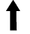 green maneuver and then removes the Auxiliary Power Token.
It can attack with a 360° firing arc and when defending, during the Roll Defense Dice step, the Xindi player may roll 1 defense die for each
or
result rolled by the attacking ship. If the Xindi player does this, he/she places an Auxiliary Power Token beside the Xindi weapon.
NOTE: You may substitute the Xindi Weapon expansion ship for the Objective Token, but you must still follow the rules outlined above.
Spatial Anomalies: The Mission Tokens represent spatial anomalies created by the Sphere Builders to help the Xindi player. Whenever the Xindi player loses a ship, he/she removes one of the Mission Tokens from the stack and places it anywhere in the play area, but not within Range 1 of any ship. Any ship that ends its move within Range 1 of whose maneuver template passes within Range 1 of a spatial anomaly, suffers 1 damage and places an Auxiliary Power Token beside it.
OBJECTIVES
Xindi Player: You win if the Xindi weapon enters the subspace vortex (i.e. exits the play area through the Allied player's starting area).
Allied Player: You win if you destroy the Xindi weapon.
Detection Grid
Number of Players: 2
Special Components: Planet Token, 1 Objective Token, 4 Mission Tokens.
MISSION OVERVIEW
A Federation ship uses a captured Xindi shuttle to get past the detection grid around Azati Prime in order to destroy the Xindi Weapon located on the planet. The Federation ship was scanned from a monitoring station on the orbiting moon and to prevent it from sending out a transmission, the station was destroyed. But when contact was lost with the lunar outpost, a squadron of Xindi ships was sent to destroy the Federation ship.
SETUP
Xindi Player: 100 SP, including at least one Xindi-Insectoid starship. No ship may have a Hull value greater than 4. Federation Player: 40 SP, including one (and only one) Federation ship.
Map Setup: Place the Planet Token directly in the center of the play area. Place the Objective Token on the S side of the Planet Token, centered E to W so that there is exactly 4" between it and the Planet Token. Place the Mission Tokens in a stack beside the play area. Players then set up as in a Standard 2-Player game.
SPECIAL RULES
Azati Prime and Moon: The Planet Token represents Azati Prime and the Objective Token represents the moon that is orbiting the planet. Both are treated as normal Planet Tokens (see pg 23 of the Full Rules of Play).
Squadron Recall: Unbeknownst to the Federation ship, the Xindi shuttle that was sent to destroy the Xindi weapon was itself captured by a Xindi patrol. The captured Federation Captain attempts to negotiate with his captors, but in the meantime, the Xindi squadron is sent out to destroy the Federation ship.
The Mission Tokens represent the passage of time before the Xindi accepts the negotiations and the Xindi ships are recalled. At the end of each End Phase, remove 1 Mission Token from the top of the stack. When there are no more Mission Tokens in the stack, the negotiations are accepted, the Xindi ships are recalled and the game ends.
OBJECTIVES
Xindi Player: You win if you destroy the Federation ship before your ships are recalled.
Federation Player: You win if the Xindi accept your negotiations (i.e. your ship is not destroyed for 4 rounds). Alternatively, you win if you destory all of the Xindi ships.
For a more challenging mission, use 5 or 6 Mission Tokens.
Maiden Voyage
Number of Players: 1
Special Components: 2 Objective Tokens and 8 Mission Tokens
MISSION OVERVIEW
While on its maiden voyage, and without a full crew, the U.S.S. Enterprise NCC-1701-B reluctantly responds to a distress signal from two Federation transport ships. The distressed ships are trapped in a gravimetric distortion from which they cannot escape and there is little time to save the two ships' crews before they are destroyed by this enerygy distortion ribbon.
SETUP
Federation Player: 40 SP, including one (and only one) ship which must be the U.S.S. Enterprise-B. You cannot assign more than 2 Upgrades to the ship and these Upgrades must be either or
Upgrades. You may field an
Upgrade as well if your Captain Card has an
icon.
Map Setup: Place 1 Objective Token so that there is exactly 8" between it and the W edge of the play area and exactly 12" between it and the S edge of the play area. Place a 2nd Objective Token so that there is exactly 8" between it and the E edge of the play area and exactly 12" between it and the S edge of the play area. The Federation player then sets up in a 36" x 4" area along the N edge of the play area. Place the 4 Mission Tokens on top of each Objective Token.
SPECIAL RULES
Transport Ships: The Objective Tokens represent the 2 distressed transport ships. These ships cannot attack, move or perform Actions. They have the following stats:
Primary Weapon: 0 | Agility: 0 | Hull: 3 | Shields: 0
Rescuing The Crew: The Mission Tokens represent the crew of the transport ships. You may attempt to rescue the crew by beaming them aboard your ship using one of the following Actions:
ACTION: Disable up to 4 of your remaining Shields and target a ship within Range 2 of your ship. If you have less than 2 Active Shields, remove 1 Mission Token from the target ship and place it on your Ship Card.
ACTION: Disable up to 4 of your remaining Shields and target a ship within Range 1 of your ship. If you have less than 2 Active Shields, remove 2 Mission Tokens from the target ship and place them on your Ship Card.
Energy Ribbon: The energy ribbon which has the transport ships trapped is harmful to any ship within it. At the end of each End Phase, roll 2 attack dice for each of the transport ships and 2 attack dice for your ship if it is within Range 1 of either of the transport ships (or 1 attack die if it is within Range 2 of either of the transport ships). Each ship suffers damage as normal for a
or
result. Ships cannot defend against this damge. If your ship is damaged by this, you mus either disable 1 of your Upgrade Cards or place an Auxiliary Power Token beside your ship.
OBJECTIVES
Federation Player: You win if you rescue the crew from the transport ships.
Complete Success: Have all 8 Mission Tokens on your Ship Card before the last transport ship is destroyed.
Marginal Success: Have at least 4 Mission Tokens on your Ship Card before the last transport ship is destroyed.
Galaxy Wing
Number of Players: 2
Special Components: Planet Token and 8 Mission Tokens
MISSION OVERVIEW
The Federation Galaxy-class starships have played a major role in many of the battles in the Dominion War. Now there are a large number of them in the force headed to invade Cardassia Prime and capture the Dominion capital.
SETUP
Dominion Player: 200 SP
Federation-Alliance Player: 200 SP, including the U.S.S. Venture, at least one other Galaxy-class ship, and at least 2 ships with a Hull value of 4 or less. No ship in this fleet may have a Hull value of more than 5.
Map Setup: This missin is played on a 36" x 60" play area. Place the Planet Token centered E to W so that there is exaclty 8" between it and the N edge of the play area. The players then set up as in a standard 2-player game.
SPECIAL RULES
Galaxy Wing Squadron: Each of the Galaxy-class ships in the Federation Alliance player's fleet may be equipped with the "Galaxy Wing Squadron"
Upgrade regardless of whether that ship's captain has an
icon on his/her card. In addition, when using the "Galaxy Wing Squadron"
Upgrade, disable the card instead of discarding it.
Invading Cardassia Prime: When a ship in the Federation-Alliance player's fleet is within Range 1 - 2 of the Planet Token, it may use the following Action:
ACTION: Discard up to 2 of your
Upgrades, and place a Mission Token on the Planet Token for each
Upgrade you discarded with this Action.
Capturing The Dominion Capital: At the end of the End Phase, each round after the first round, the Federation-Alliance player rolls 1 attack die for each Mission Token on the Planet Token. If at least 3
results are rolled, the Dominion capital has been captured.
The Dominion capital is automatically captured if there are over 8 Mission Tokens on the Planet Token at the start of any End Phase.
OBJECTIVES
Dominion Player: You win if you destroy all of the Federation-Alliance player's ships.
Federation-Alliance Player: You win if you capture the Dominion capital (i.e. either at least 3
results are rolled at the end of any End Phase or if there are 8 Mission Tokens on the Planet Token at the start of any End Phase). Alternatively, you win if you destroy all of the Dominion player's ships.
Star Trek: First Contact
Number of Players: 1 - 5
Special Components: Cube 384, Sphere 936, Cube 384 Shield Tracker, Cube 384 Hull Tracker, Borg Attack Card Deck, Battle Objective Card Deck
MISSION OVERVIEW
"We are the Borg. Lower your shields and surrender your ships. We will add your biological and technological distinctiveness to our own. Your culture will adapt to service us. Resistance is futile."
SETUP
* Each player builds a 120 SP Fleet using the Star Trek: First Contact special rules and the standard Squad Building Rules (on Pg. 21 of the Full rules of Play).
* Place Cube 384 directly in the center of the play area.
* Players set up around the perimeter of the play area within Range 1 of any edge.
* Shuffle the Battle Objective Deck and Borg Attack Deck and place them face down next to the play area.
* Cube 384 starts the game with 30 shields and 30 hull for each player. Mark the total number of shields on the Shield Tracker and the total number of hull on the Hull Tracker.
SPECIAL RULES
ATTACKING:
* Cube 384 makes a number of attacks each turn equal to the number of players.
* Cube 384 attacks using the effect of the Borg Attack Card in play.
* Cube 384 attacks the ships closest to it.
* Cube 384 cannot target the same ship with more than one attack each turn.
* Cube 384's attacks can be cancelled, but any effect that cancels its attack only cancels the attack for the ship that activated the cancelling effect.
* Any ship that cancels an attack of Cube 384 is dealt 2 normal damage.
SHIELDS AND HULL:* Cube 384 cannot have its shields affected or bypassed by any game effect.
* Cube 384 is not dealt critical damage normally. Instead, when it would be dealt critical damage, it is dealt 2 normal damage.
* Cube 384 is not dalt damge cards. Instead its shields and hull are tracked on its Shield and Hull Trackers.
* Cube 384 repairs 1 damage per player to either its shields or hull at the beginning of each turn.
OTHER SPECIAL RULES:
* Cube 384 cannot be moved or placed by any game effect.
* Cube 384 has a Captain Skill of 5.
* Cube 384 cannot be equipped with any Captains, Admirals, Upgrades, or Resources.
* Cube 384 cannot have Auxiliary Power Tokens.
* All ships except for Cube 384 and Sphere 936 are considered to be a part of a single fleet.
* The words ship and ships on this sheet, the Borg Attack Cards, and the Battle Objective cards, refers to all ships and squadrons except for Cube 384 and Sphere 936.
Note - Any effect listed on a Battle Objective Card or Borg Attack Card supersedes all special rules.
TURN SEQUENCE
At the begining of each turn, before the planning phase, resolve the below steps in order
* Step 1 Overturn the top card of the Battle Objective Deck. This is the Battle Objective Card that will be in play until the end of the turn
* Step 2 Shuffle all Borg Attack Cards together. Then, overturn the top card of the Borg Attack Deck. This is the Borg Attack Card that Cube 384 will use to attack during the turn.
* Step 3 Activate a Strategic Advantage effect if desired.
* Step 4 Cube 384 repairs 1 damage per player to either its shields or hull.
* Step 5 Resolve the rest of the turn as normal.
BATTLE OBJECTIVE CARDS
Each turn a different Battle Objective Card will be in play. While a Battle Objective Card is in play, the effect listed on the card is active. The players must complete the objective listed on the card by the end of the turn. If they do, they claim the card. If they don't, resolve the repercussions listed on the card and remove the card from the game. If there are no more Battle Objective Cards left in the deck, shuffle together all Battle Objective Cards that have been removed from the game to create a new Battle Objecitve Deck.
BORG ATTACK CARDS
At the beginning of each turn shuffle all Borg Attack Cards together (excluding any that have been removed from the game). Then, overturn the top card of the Borg Attack Deck. The overturned card shows the attack Cube 384 will use to attack during the turn.
STRATEGIC ADVANTAGE EFFECTS
Once per turn, at the beginning of the turn, after the Battle Objective Card and Borg Attack Card have been revealed for the turn, the players can activate one of the below effects by removing the appropriate amount of claimed Battle Objective Cards from the game.
* 1 Card: Cube 384 cannot repair damage to its shields or hull this turn.
* 2 Cards: Cube 384 takes 10 normal damage.
* 3 Cards: Cube 384 cannot attack this turn.
SPHERE 936
When all of Cube 384's shields are destroyed, Sphere 936 is deployed. The players place Sphere 936 touching the base of Cube 384 so that it is perpendicular to an edge of the play area and is facing away from Cube 384. Sphere 936 is treated as a normal ship with the following additional rules; Sphere 936 has a Captain Skill of 5, can only be attacked once per turn, moves using the straight 1 maneuver, cannot take actions, and attacks the ship closest to it. Additionally, when Sphere 936 is deployed, it immediately makes an attack.
If Sphere 936 leave the play area through any edge, it has gone through a temporal vortex and changed the course of history. The players lose the game.
If the players destroy Sphere 936 before it leaves the play area, the crew of the player's ships gain a moral boost which increases the primary weapon value of all ships by +1 for the rest of the game. However, the Borg are now more determined than ever to assimilate your fleet after seeing Sphere 936 get destroyed. Instead of Cube 384 repairing 1 damage per player to either its shields or hull at the beginning of each turn, Cube 384 repairs 2 damage per player to either its shields or hull at the beginning of each turn.
WINNING THE GAME
To win the game, players must destroy Cube 384 and Sphere 936 before their fleet is destroyed.
Steal The Cloaking Device
Number of Players: 2
Special Components: 6 Mission Tokens
MISSION OVERVIEW
A Federation ship corsses the Romulan Neutral Zone on a covert mission to steal the Romulan's cloaking device. After successfully taking the cloaking device, and retrieving its crew member from the Romulan ship, the Federation ship must return to Federation space with the stolen cloaking device.
SETUP
Romulan Player: 90 SP, including exactly 3 Romulan ships which must include at least one Romulan D7 class ship. None of the Romulan ships can have a Hull Value greater than 3. In addition, none of the Romulan ships may use the
or
Actions even if they are on those ships' Action Bars.
Federation Player: 30 SP, including one (and only one) Federation ship which must have a Hull Value of 4 or less and must leave 1 Upgrade slot unfilled.
Map Setup: This mission uses a 36" x 60" play area. The Federation ship sets up in an 8" x 36" area along the S edge of the play area. The Romulan ships then set up in the same area, but not within 1 - 3 of the Federation ship.
SPECIAL RULES
Stolen Cloaking Device: The Federation ship has stolen the cloaking device from the Romulan ship. They must install the device and escape.
At the end of the End Phase of each round, place 1 Mission Token on the Federation Ship Card. This represents that your ship is attempting to install the stolen cloaking device.
During the Activation Phase, the Federation ship may use the following Action:
ACTION: Roll 1 attack die for each Mission Token on your ship's Ship Card. If you roll at least 1
result, you have successfully installed the stolen cloaking device to your ship and may now use the
and
Actions as if they were listed on the ship's Action Bar. If you roll only
results, treat this Action as a free Action.
No ship may have any Upgrade deployed to it that allows it to be removed from the play area.
OBJECTIVES
Romulan Player: You win if you destroy the Federation ship.
Federation Player: You win if you exit the play area through the N edge of the play area with the cloaking device successfully installed.
Detonation Codes
Number of Players: 2
Special Components: 1 Minefield Token and 4 Objective Tokens
MISSION OVERVIEW
The Klingons have been secretly mining the Bajoran system. A Federation ship has retrieved the minefield's detonation codes and attempts to thwart the Klingon's plans by destroying the minefield and the Klingon ships that have been setting the cloaked mines.
SETUP
Klingon Player: 90 SP, including exactly 2 Klingon ships. One of these ships must be a Vor'cha Class ship and neither ship may have the "Detonation Codes" Upgrade assigned to it.
Federation Player: 45 SP, including one (and only one) Federation ship which must have the "Detonation Codes"
Upgrade assigned to it. This Upgrade may be assigned to the Federation ship even if the ship's Captain Card does not have
icon.
Map Setup: The Klingon player places the Minefiled Token directly in the center of the play area and the 4 Objective Tokens anywhere in the play area, but not within Rnage 1 - 3 of any other Token or within Range 1 - 2 of the S edge of the play area. Players then set up as in a Standard 2-Player game.
SPECIAL RULES
Cloaked Minefield: The Minefield Token and the 4 Objective Tokens represent the Klingon's cloaked minefield. If any ship passes within Range 1 of one of these Tokens, roll 3 attack dice (-1 if the target ship immediately performs a
Action OR -2 if the target ship immediately performs a
Action and ends its move beyond Range 1 of the Token). Any
or
damages the target ship as normal. The affected ship does not roll any defense dice.
Stolen Detonation Codes: The Federation ship has stolen the detonation codes to the Klingon mines. The Federation ship must have the "Detonation Codes" Upgrade assigned to it. If the Federation ship's Captain does not have an
icon, the cost of the Upgrade is +3 SP.
When using the "Detonation Codes"
Upgrade, the Federation player disables the Upgrade instead of discarding it any may use it multiple times during the game (but only one per round).
OBJECTIVES
Klingon Player: You win if you destroy the Federation ship.
Federation Player: You win if you either:
1) Damage at least one of the Klingon ships with the "Detonation Codes" Upgrade and destroy one of the Klingon ships (the damaged ship and the destroyed ship can be the same ship), OR
2) Destroy both Klingon ships, OR
3) Destroy all of the Minefield Tokens (including the Objective Tokens) using the "Detonation Codes" Upgrade.
Escape The Minefield
Number of Players: 2
Special Components: 6 Mission Tokens
MISSION OVERVIEW
A Federation ship has found itself in a minefield of cloaked mines and is being attacked by 2 Romulan ships. The Federation ship must navigate through the minefield in order to reach open space and jump to warp speed to escape.
SETUP
Romulan Player: 50 SP, including exactly 2 Romulan ships. At least 1 of the Romulan player's ships must be a Romulan Bird-of-Prey and no ship may have a Hull Value greater than 3.
Federation Player: 35 SP, including one (and only one) Federation ship.
Neither player's ships may deploy Upgrades that allow a ship to be removed from the play area.
Map Setup: The Romulan player places 6 Mission Tokens anywhere in a 28" x 36" area along the S edge of the play area. No Mission Token may be placed within Range 3 of any other Mission Token. The Federation player sets up in an 8" x 36" area along the N edge of the play area. The Romulan player then sets up in a 4" x 36" area along the N edge of the play area, but not within Range 3 of the Federation ship.
SPECIAL RULES
Minefield: The Mission Tokens represent cloaked mines. If the Federation ship passes within Range 1 of a Mission Token, it has hit that cloaked mine. Roll 3 attack dice (-1 if that ship immediately performs a
Action). Any
or
results damage the ship as normal. The affected ship does not roll any defense dice against the cloaked mine.
If a Romulan ship passes within Range 1 of a Mission Token, it may spend its Action to avoid the cloaked mine. If it does so, it may not perform any free Actions that round.
If it does not avoid the cloaked mine, roll 3 attack dice (-1 if that ship immediately performs a
Action). Any
or
results damage the ship as normal. The affected ship does not roll any defense dice against the cloaked mine.
OBJECTIVES
Romulan Player: You win if you destroy the Federation ship (this includes if the Federation ship is destroyed by a cloaked mine).
Federation Player: You win if you exit the play area through the S edge of the play area. Alternatively, you win if you destroy both of the Romulan ships (this includes if the Romulan ships are destroyed by a cloaked mine).
Investigate The Unkown
Number of Players: 1
Special Components: 1 Objective Token and 3 Mission Tokens
MISSION OVERVIEW
An entity in the form of an enormous cloud, capable of generating the energy of thousands of starships, has entered into Klingon space. Three Klingon vessels are sent to investigate an unkown entity.
SETUP
Klingon Player: 100 SP, including exactly 3 Klingon ships. At least one of these ships must be a K't'inga Class ship. You must deploy at least 1 Photon Torpedoes Upgrade to each of your ships. You cannot deploy any Upgrades to any of your ships that allow a ship to be removed from the play area or any Upgrades that allow a ship to negate or cancel an entire attack.
Map Setup: Place the Objective Token centered E to W so that it touches the S edge of the play area. The Klingon player then sets up in a 4" x 36" area along the N edge of the play area. Place the 3 Mission Tokens in a stack beside the play area.
SPECIAL RULES
The Entity: The entity is enourmous and the S edge of the play area represents the edge of the cloud. The Objective Token represents a point in the cloud that can be target locked and fired at. The entity does not move and cannot be damaged or affected in any way.
Once it is fired on, at the end of each Combat Phase thereafter, the entity will attack the 2 ships that are closest to the Objective Token. The strength of the attack will vary depending on the distance the ships are away from the Objective Token as follows (to determine Ranges greater than 3, use multiple Range Rulers):
Range 1 - 2 = 12 attack dice,
Range 3 - 4 = 11 attack dice,
Range 5 - 6 = 10 attack dice,
Range 7 - 8 = 9 attack dice,
Range 9 or higher = 8 attack dice.
Investigate The Unkown Entity: To investigate the entity, you must fire at it with Photon Torpedoes. After a ship fires its torpedoes at the entity, place 1 Mission Token on the attack ship's Ship Card.
OBJECTIVES
Klingon Player: You win if you successfully investigate the unkown entity and return at least one of your ships to Klingon space (i.e. exit the play area through your starting area with at least 1 of your ships and have a Mission Token on that ship's Ship Card).
Complete Success: Exit the play area through your starting area with all 3 of your ships and have a Mission Token on each ship's Ship Card.
Partial Success: Exit the play area through your starting area with at least 2 of your ships and have a Mission Token on each of those ship's Ship Cards.
Marginal Success: Exit the play area through your starting area with at least 1 of your ships nad have a Mission Token on that ship's Ship Card.
Destroy The Weapon Platform
Number of Players: 2
Special Components: 1 Objective Token and 8 Mission Tokens
MISSION OVERVIEW
Most of the Dominion forces have withdrawn from the Chin'toka system, but the system was not left as undefended as the Federation Alliance forces would have believed. The Cardassians have deployed many orbital weapon platforms around each of the planets in the system. Can the Federation Alliance advance ships destroy these weapon platforms? Or will the Cardassian defenses turn back the advancing fleet?
SETUP
Dominion Player: 120 SP, including at least 3 Dominion ships.
Federation Alliance Player: 150 SP, including at least 3 Federation, Romulan, or Klingon ships. One of these ships must be a Saber Class ship.
Map Setup: The Dominion player places the Objective Token anywhere in the play area, but not within Range 2 of any edge of the play area. Players then set up as in a Standard 2-Player game.
SPECIAL RULES
Orbital Weapons Platform: The Objective Token represents the orbital weapon platform. Treat this as one of the Dominion player's ships. It has the following stats:
It cannot move, but may perform either a
,
, or
Action. It has a 360° firing arc and may fire up to Range 1 - 2. During the End Phase of each round, all of the orbital weapon platform's damaged Shields are reparied.
The Fleet Arrives: The Mission Token represents the passing of time. At the end of each End Phase, remove 1 Mission Token from the stack. When the last Mission Token is removed, the remainder of the Federation fleet has arrived and the game ends.
OBJECTIVES
Federation Player: You win if you destroy all of the Dominion ships before the rest of your fleet arrives (i.e. the last Mission Token is removed from the game).
Dominion Player: You win if you destroy all of the Federation ships.
Complete Victory: Destroy all of the Federation ships before the game ends and the orbital weapon platform is not destroyed.
Marginal Victory: Destroy all of the Federation ships before the game ends and the orbital wepaon platform is destroyed.
Battle Of Andoria
Number of Players: 2
Special Components: Planet Token and 10 Mission Tokens
MISSION OVERVIEW
Convinced that the Andorians had captured a prototype Xindi weapon and were planning on using it to attack Vulcan, a large force of Vulcan ships launch a preemptive strike against the Andorians. Outnumbered 2 to 1, the Andorians have no choice but to stand their ground while awaiting reinforcements. Will they arrive in time?
SETUP
Enemy Player: 300 SP, All of the Enemy player's ships must have a Hull Value of 4 or less and each ship must have a cost of 35 SP or less.
Andorian Player: 150 SP, including at least one Andorian Battle Cruiser. All of the Andorian player's ships must have a Hull Value of 4 or less.
Map Setup: Place the Planet Token directly in the center of the play area. Players then set up as in a Standard 2-Player game. Place the 10 Mission Tokens in a stack beside the play area.
SPECIAL RULES
Reinforcements: The stack of Mission Tokens represents the time it will take for the Andorian reinforcements to arrive. During the End Phase of each round, remove 1 Mission Token from the stack.
When there are no Mission Tokens left in the stack, the Andorian reinforcements have arrived.
Defending Andoria: If any of the Enemy player's ships are within Range 1 of the Planet Token, all attacks made against those ships are at +1 attack die.
Any of the Andorian player's ships that are defending against an attack(s) made by an Enemy player's ship that is within Range 1 of the Planet Token roll +1 defense die.
OBJECTIVES
Andorian Player: You win if you have at least one of your ships in the play area when the reinforcements arrive (i.e. the last Mission Token is removed from the stack).
Enemy Player: You win if you destroy all of the Andorian player's ships before the reinforcements arrive.
For a more challenging battle, use 8 or 12 Mission Tokens.
Battle Of El-Gatark
Number of Players: 2
Special Components: Planet Token and 10 Mission Tokens
MISSION OVERVIEW
At the beginning of the Dominion War, the U.S.S. Valiant find itself behind enemy lines and encounters a Cardassian ship near the El-Gatark region. In the battle, both ships are damaged and lose main power. Adrift in space, it is a race against the clock by both ships to attempt to restore power. Whichever ship manages to do this first will gain a decisive advantage.
SETUP
Dominion Player: 40 SP, including one (and only one) Dominion ship.
Federation Player: 40 SP, including one (and only one) Defiant-class ship which must be the U.S.S. Valiant.
Map Setup: Place the Planet Token directly in the center of the play area. Players then set up as in a Standard 2-Player game. Place the 5 Mission Tokens in 2 stacks beside each Ship Card, with a stack of 2 on the left side of each card and a stack of 3 on the right side of each card.
SPECIAL RULES
Main Power And Weapons: At the start of the game, both ships are considered to be without main power and weapons. The stack of Mission Tokens to the left of each Ship Card represents the time it will take to restore main power. While there are any Mission Tokens in this stack, that ship cannot perform any maneuver with a speed greater than 1. This includes any additional maneuvers gained from Actions or text abilites.
The stack of Mission Tokens to the right of each Ship Card represents the time it will take to restore the ship's weapons. While there are any Mission Tokens in this stack, the ship can only perform attacks with their Primary Weapon as if they had a Primary Weapon value of "1", and cannot perform any attacks with secondary weapons.
During the Activation Phase, as ship may use one of the following Actions:
ACTION: Remove 1 Mission Token from a stack on either side of your Ship Card. OR ACTION: Inflict 4 damage to your ship's Hull or Shields and remove 2 Mission Tokens from a stack on either side of your Ship Card.
Once the main power is restored (i.e. there are no more Mission Tokens left in the stack to the left of the Ship Card), that ship may move as normal.
once the ship's weapons are restored (i.e. there are no more Mission Tokens left in the stack to the rightof the Ship Card), that ship may attack as normal.
OBJECTIVES
Federation Player: You win if you destroy the Dominion player's ship.
Dominion Player: You win if you destroy the Federation player's ship.
Covert Mission
Number of Players: 2
Special Components: Planet Token, 4 Objective Tokens, and 4 Mission Tokens
MISSION OVERVIEW
A Romulan scount vessel has entered into Federation space and is near the planet Galorndon Core. The ship is on a covert mission and a Romulan Warbird, which is still in the Neutral Zone, remains in contact with the scout vessel. A nearby Federation Galaxy-class ship has intercepted a message between the two Romulan ships and has been dispatched to the planet. Will the Romulan scout vessel complete its mission and return to Romulan space with the gathered information?
SETUP
Romulan Player: 70 SP, including one Romulan scout vessel and one other Romulan ship.
Federation Player: 50 SP, including one (and only one) Federation ship.
Map Setup: Place the Planet Token directly in the center of the play area. Place the 4 Objective Tokens so that one Token is to the N, S, E and W of the Planet Token and there is 4" between each Token and the Planet Token. The N and S Tokens are entered E to W and the E and W Tokens are centered N to S. The Romulan player sets up one ship in a 4" x 4" area along the N edge of the player area in the NW corner and the 2nd ship in a 4" x 4" area along the N edge of the play area in the NE corner. The Federation player sets up in a 4" x 4" area, centered E to W along teh S edge of the play area. Place 1 Mission Token on top of each Objective Token.
SPECIAL RULES
Galorndon Core: The Planet Token represents the planet Galorndon Core. The planet's atmosphere has created severe electromagnetic storms. Any ship that ends its move within Range 1 of the Planet Token must roll 2 attack dice. That ship suffers 1 damage for each
or
result. In addition, a ship within Range 1 of the planet cannot perform the
Action, even as a free Action.
Covert Mission: The 4 Objective Tokens represent points in space where the Romulan scout vessel must gather the information vital to its mission. The Mission Tokens represent the information that is to be gathered. If the Romulan scout vessel's Ship Base or Maneuver Template overlaps an Objective Token, that ship may perform the following Action:
ACTION: If you Ship's Base or Maneuver Template overlapped an Objective Token this round, remove the Mission Token from on top of that Objective Token and place it on your Ship Card. You cannot perform any free Actions or attack this round. NOTE: Only 1 Mission Token can be gathers from each Objective Token.
Act Of War: If the Federation ship attacks either Romulan ship before the scout vessel has gathered any information, the Federation player has declared an Act of War. If a Romulan ship attacks the Federation ship before the Federation ship attacks either Romulan ship, the Romulan player has declared an Act of War. If a play declares an Act of War, that player immediately loses.
OBJECTIVES
Romulan Player: You win if your scout vessel gathers enough information (i.e. has 2 or 3 Mission Tokens on its Ship Card) and exits the play area through the N edge of the play area. Alternatively, you win if you destroy the Federation ship after it has attacked one of your ships.
COMPLETE SUCCESS: The scout vessel gathers 3 Mission Tokens and exits the play area.
MARGINAL SUCCESS: The scout vessel gathers 2 Mission Tokens and exits the play area.
Federation Player: You win if you destroy the Romulan scout vessel after it has collected one or more Mission Tokens.
COMPLETE SUCCESS: Destroy the scout vessel after it gathers 1 Mission Tokens.
MARGINAL SUCCESS: Destroy the scout vessel after it gathers 2 - 3 Mission Tokens.
Ion Storm
Number of Players: 1
Special Components: 6 Objective Tokens, 12 Mission Tokens
MISSION OVERVIEW
After crossing the Denorios Belt, a region of space between Bajor and Cardassian, a Bajoran Solar Sailor attempts to navigate through powerful ion storms to reach Cardassian space.
SETUP
Bajoran Player: 40 SP, including one (and only one) Bajoran Solar Sailor.
Map Setup: Place all of the Objective Tokens and Mission Tokens randomply around the play area with the following restrictions: No Token may be placed within Range 1 of any other Token or within Range 1 of any edge of the play area. Then the Bajoran player sets up in a 4" x 36" area along the N edge of the play area.
SPECIAL RULES
Ion Storm: The Objective Tokens and the Mission Tokens represent violent areas of the ion storm. If your ship's base or maneuver template overlaps one of these tokens apply the following results (overlapping multiple Tokens in a single move has cumlative effects):
Overlapping an Objective Token: Roll a 4-dice attack against your ship. You may defend as normal. If you ship is not hit, but a
result is rolled, discard 1 of your Upgrades (your choice).
Overlapping a Mission Token: Roll a 2-dice attack against your ship. You may defend as normal. If your ship is not hit, but a
result is rolled, disable 1 of your Upgrades (your choice).
Tokens can be destoryed by inflicting 1 damage to a Mission Token and 2 damage to an Objective Token.
At the start of each round, roll 1 attack die for each Token:
If the result is blank, the Token is moved due W using a 1
Maneuver Template.
If the result is a
, the Token is moved due E using a 1
Maneuver Template.
If the result is a
, the Token is moved due N using a 1
Maneuver Template.
If the result is a
, the Token is moved due S using a 1
Maneuver Template.
OBJECTIVES
Bajoran Player: You win if you reach Cardassian space (exit the play area through the S edge of the play area).
COMPLETE SUCCESS: Reach Cardassian space with no damge to your Hull.
MARGINAL SUCCESS: Reach Cardassian space with at least 1 damage to your Hull.
Planetoid Alpha 441
=======
Number of Players: 1
Special Components: 6 Objective Tokens, 12 Mission Tokens
MISSION OVERVIEW
After crossing the Denorios Belt, a region of space between Bajor and Cardassian, a Bajoran Solar Sailor attempts to navigate through powerful ion storms to reach Cardassian space.
SETUP
Bajoran Player: 40 SP, including one (and only one) Bajoran Solar Sailor.
Map Setup: Place all of the Objective Tokens and Mission Tokens randomply around the play area with the following restrictions: No Token may be placed within Range 1 of any other Token or within Range 1 of any edge of the play area. Then the Bajoran player sets up in a 4" x 36" area along the N edge of the play area.
SPECIAL RULES
Ion Storm: The Objective Tokens and the Mission Tokens represent violent areas of the ion storm. If your ship's base or maneuver template overlaps one of these tokens apply the following results (overlapping multiple Tokens in a single move has cumlative effects):
Overlapping an Objective Token: Roll a 4-dice attack against your ship. You may defend as normal. If you ship is not hit, but a
result is rolled, discard 1 of your Upgrades (your choice).
Overlapping a Mission Token: Roll a 2-dice attack against your ship. You may defend as normal. If your ship is not hit, but a
result is rolled, disable 1 of your Upgrades (your choice).
Tokens can be destoryed by inflicting 1 damage to a Mission Token and 2 damage to an Objective Token.
At the start of each round, roll 1 attack die for each Token:
If the result is blank, the Token is moved due W using a 1
Maneuver Template.
If the result is a
, the Token is moved due E using a 1
Maneuver Template.
If the result is a
, the Token is moved due N using a 1
Maneuver Template.
If the result is a
, the Token is moved due S using a 1
Maneuver Template.
OBJECTIVES
Bajoran Player: You win if you reach Cardassian space (exit the play area through the S edge of the play area).
COMPLETE SUCCESS: Reach Cardassian space with no damge to your Hull.
MARGINAL SUCCESS: Reach Cardassian space with at least 1 damage to your Hull.
A Time To Stand
Number of Players: 2
Special Components: Planet Token, 3 Mission Tokens.
MISSION OVERVIEW
The Dominion is relentlessly sending ships into the Alpha Quadrant and are defeating the Federation Alliance forces in battle after battle. Using a captured Jem'Hadar attack ship, Captain Benjamin Sisko leads a stealth mission deep into the heart of Dominion territory to destroy the Dominion's main storage facility for ketracel-white. Without the ketracel-white, the Dominion forces will not be able to function.
SETUP
Dominion Player: 80 SP, including at least 2 Dominion ships. No ship may have a Hull value greater than 3.
Federation Player: 50 SP, including one (and only one) Jem'Hadar Attack Ship with Benjamin Sisko assigned as its Captain.
Map Setup: Place the Planet Token directly in the center of the play area. Place the 3 Mission Tokens on top of the Federation player's Ship Card. Players then set up as in a Standard 2-Player game.
SPECIAL RULES
Ketracel-White Storage Facility: The Planet Token reprsents the Dominion's Ketracel-White storage facility. If the Federation ship is within Range 1 of the Planet Token, it may attempt to deliver a bomb to the facility by taking the following Action:
ACTION: Remove 1 of the Mission Tokens from on top of your Ship Card and place it on the Planet Token then roll 1 attack die for each Mission Token on the planet. If you roll at least 1
result, the facility's security net is activated.
Once the 3rd Mission Token is placed on the planet, during the Combat Phase of the following round, the bomb will explode. Any ship within Range 1-2 of the planet will suffer 3 damage.
Security Net: The facility has a security net surrounding it that begins the game off. If it is activated, the no ship is within Range 1-2 of the facility will be able to move away from the facility and no ship that is further than Range 21 from the facility cannot move within Range 1-2 of the facility. Any ship that executes a maneuver that causes it's base or maneuver template to cross that barrier (either way) immediately rolls 6 attack dice and suffers damage from any
or
results. NOTE: THe Dominion ships cannot attack the Federation player until the security net has been activated.
OBJECTIVES
Federation Player: You win if you destroy the facility (place the 3rd Mission Token on the planet).
COMPLETE VICTORY: Destroy the facility and exit the play area through your starting area.
MARGINAL VICTORY: Destroy the facility and exit the play area.
Dominion Player: You win if you destroy the Federation ship before it can exit the play area.
COMPLETE VICTORY: Destroy the Federation ship before it can destroy the faility.
MARGINAL VICTORY: Destroy the Federation ship after it destroys the facility.
Advanced Assault
Number of Players: 2
Special Components: Planet Token, 4 Mission Tokens.
MISSION OVERVIEW
In order to allow their ships to deploy enough forces to retake a planet in the Neutral Zone held by the Dominion, the Romulans have sent an advanced squadron of Scorpion-class attack fighters to break through the Jem'Hadar ships.
SETUP
Dominion Player: 180 SP, including at least 3 Jem'Hadar attack ships.
Federation Player: 120 SP, including one (and only one) Scorpion-class attack squadron and at least one other Romulan ship.
Map Setup: Place the Planet Token centered from E to W with exactly 4" between the token and the N edge of the play area. The Dominion player places his ships in an 18" x 36" area along the N edge of the play area and the Romulan player places his ships in a 4" x 36" area along the S edge of the play area. Place the 4 Mission Tokens in a stack beside the play area.
SPECIAL RULES
Deploying Troops To The Planet: IF a Romulan ship is within Range 1 of the Planet Token, it may deploy troops to the planet by using the following Action:
ACTION: If your ship is Cloaked, immediately remove your
Token from beside your ship. If your ship is not cloaked, disable all of your remaining Shields. Remove 1 Mission Token from the stack and place it on the Planet Token.
The Romulan attack squadron may also deploy troops to the planet, if it is within Range 1 of the Planet Token, by using the above Action, but it must first remove one of its Attack Squadron Tokens (AST) from the top of the stack and flip it over and then remove the AST that is beside the ship from play and replace it with the token that was just removed from the stack. If it is the last AST, the attack squadron is considered destroyed.
No ship may perform the above Action if it overlaps the Planet Token at the end of its move.
OBJECTIVES
Romulan Player: You win if you deploy enough forces to the planet to ragain control.
COMPLETE VICTORY: Place 4 Mission Tokens on the planet.
MARGINAL VICTORY: Place 2-3 Mission Tokens on the planet.
Dominion Player: You win if you destroy all of the Romulan player's ships before the Romulan player can deploy troops to the planet.
COMPLETE VICTORY: No Mission Tokens are placed on the planet before all of the Romulan ships are destroyed.
MARGINAL VICTORY: 1 Mission Token is placed on the planet before all of the Romulan ships are destroyed.
Runara IV
Number of Players: 2
Special Components: Planet Token, 1 Objective Token, and 3 Mission Tokens.
MISSION OVERVIEW
The Kazon-Nistrim have captured a Federation starship and brough it to the planet Runara IV, to help them destroy a Kazon-Halik colony located on the planet. Stowaways on the captured vessel from the Federation crew are attempting to retake the ship from the Kazon-Nistrim.
SETUP
Kazon-Nistrim Player: 70 SP, including one (and only one) Federation ship with a Hull value of 4 and one (and only one) Kazon Raider.
Kazon-Halik Player: 40 SP, including one (and only one) Halik Raider.
Map Setup: Place the Planet Token directly in the center of the play area. Place the Objective Token, centered from E to W, so that the Objective Token overlaps the S edge of the Planet Token with exactly 1/2 of the Objective Token on top of it. The Halik Player places the Halik-Raider in an area that is S of the Planet Token and within Range 1 of the Objective Token. The Nistrim player then sets up his ships in a 4" x 36" area along the N edge of the play area. Place the 3 Mission Tokens in a stack beside the play area.
SPECIAL RULES
Runara IV Colony: The Objective Token represents the Kazon-Halik colony on Runara IV. It is treated as an Obstacle. It can be attacked, but it cannot attack, defend or perform Actions, has no shields and has a Hull value of 12. If it is damaged, place all of its damage cards beside the play area. The colony can only suffer the "Minor Explosion", "Console Fire" or "Direct Hit" critical damage cards. Flip any other critical damage cards over immediately and treat them as normal damage. All normal rules apply to the Planet Token (see pg 23 of the Rules of Play).
Kazon-Halik Reinforcements: During the End Phase of a round in which the Kazon-Halik player's ship is destroyed, he/she places a Kazon Raider back in the play area in his/her starting area. This ship cannot be placed so that it touches another ship's base. It cannot be equipped with any Captain, Admiral or Upgrade Cards and has a Captain SKill Number of 1. The Kazon-Halik player uses this ship as normal. If this ship destroyed, the Kazon-Halik player follows the same process and places another Kazon Raider as above. There is no limit to the number of reinforcement ships.
Federation Ship: At the start of each End Phase, the Kazon-Nistrim player rolls 1 attack die. If the result is a
or
, remove 1 Mission Token from the stack and place it on top of the Federation ship's Ship Card. If the 3rd Mission Token is placed on the Federation ship's Ship Card, the Federation stowaways have retaken control of the ship. If this happens, discard all of the cards assigned to the Federation ship. It now has a Captain Skill of 1 and is in the control of the Kazon-Halik player for the rest of the game.
OBJECTIVES
Kazon-Halik Player: You win if you destroy all of the ship's controlled by the Kazon-Nistrim player before the colony on Runara IV is destoryed.
Kazon-Nistrim Player: You win if you destroy the colony on Runara IV.
Battle Simulation
Number of Players: 2
Special Components: Planet Token, 5 Mission Tokens.
MISSION OVERVIEW
A battle simulation is being conducted in the Braslota system between the U.S.S. Enterprise-D commanded by Jean-Luc Picard, and the U.S.S. Hathaway commanded by William T. Riker. While the two Federation Captains are matching wits in a simulation in which their weapon systems have been disengaged, they are set upon by a Ferengi Marauder.
SETUP
Ferengi Player: 40 SP, including one (and only one) Ferengi Marauder.
Federation Player: 80 SP, including only the U.S.S. Enterprise-D which must have Jean-Luc Picard assigned as its Captain and the U.S.S. Hathaway which must have William T. Riker assigned as its Captain.
Map Setup: Place the Planet Token directly in the center of the play area. The Federation ships are placed within Range 1 of the Planet Token and must be facing the N edge of the play area. Then the Ferengi ship is placed in a 4" x 36" area along the N edge of the play area. Place the 5 Mission Tokens in a stack beside the play area.
SPECIAL RULES
Battle Simulation: The weapons systems on the two Federation ships have been disengaged to prevent the ships from damaging each other during the battle simulation. For the first 5 rounds of the battle between the Ferengi ship and the Federation ships, neither of the Federation ships can perform any type of attacks against the Ferengi ship.
During the End Phase of each round, remove 1 Mission Token from the stack beside the play area from the game. When the last Mission Token is removed, the Federation ships may begin to attack the Ferengi ship.
Neither of the Federation ships can be equipped with any Upgrades that allow a ship to either cancel an attack, cancel attack dice or reduce the amount of damage from an attack against their ship.
OBJECTIVES
Ferengi Player: You win if you destroy the Federation ships.
COMPLETE VICTORY: Both Federation ships are destroyed.
MARGINAL VICTORY: One of the Federation ships is destroyed.
Federation Players: You win if you destroy the Ferengi ship.
Extreme Risk
Number of Players: 2
Special Components: 1 Objective Token and 1 Mission Token.
MISSION OVERVIEW
A Federation ship in the Delta Quadrant has lost one of its multi-spatial probes in a gas giant. In an attempt to retrieve this probe, the crew of the ship has built a new shuttlecraft that was designed to withstand the hazardous environments of the Delta Quadrant. It is a reace against time, though as an enemy ship is also attempting to retrieve the probe.
SETUP
Federation Player: 80 SP, including one Delta Flyer-class ship and one other Federation ship with a Hull value of 4 or greater.
Enemy Player: 80 SP,including ship with a Hull value of 3 or less and 1 ship with a Hull value of 4 or greater.
Map Setup: Place the Objective Token directly in the center of the play area. Then place the Mission Token on top of the Objective Token, directly in the center of the play area. The Objective Token represents the center of the gas giant and the Mission Token represents the multi-spatial probe. Players then set up as in a Standard 2-Player game.
SPECIAL RULES
Gas Giant: The Objective Token represents the center of the gas giant. All attacks performed against ships within the gas giant may only be made at Range 1-2.
A ship that begins the Planning Phase within Range 3 of the Objective Token may only choose maneuvers with a speed of 3 or less. A ship that ends its movement within Range 3 of the Objective Token must roll 1 attack die and suffers normal damage from all
and
results.
A ship that begins the Planning Phase within Range 2 of the Objective Token may only choose maneuvers with a speed of 2 or less. A ship that ends its movement within Range 2 of the Objective token must roll 2 attack dice and suffers normal damage from all
and
results.
A ship that begins the Planning Phase within Range 1 of the Objective Token may only choose maneuvers with a speed of 1. A ship that ends its movement within Range 1 of the Objective Token must roll 3 attack dice and suffers normal damage from all
and
results.
Any ship whose base or Maneuver Template overlaps the Objective Token during its movement rolls 1 additional attack die when sustaining damage from the gas giant.
A ship with a Hull value of 4 or greater rolls 2 additional attack dice when sustaining damage from the gas giant.
Retrieving The Multi-Spatial Probe: The multi-spatial probe is trapped at the center of the gas giant. Any ship within Range 1 of the Objective Token may perform the following Action:
ACTION: Remove the Mission Token from the Objective Token and place it on your Ship Card.
OBJECTIVES
Federation Player: You win if you retrieve the multi-spatial probe and exit the play area through your starting area with the retrieving ship. If the retrieving ship is your Delta Flyer-class ship, you win if that ship docks with your larger ship. Alternatively, you win if you destroy all of the Enemy player's ships.
Enemy Player: You win if you retrieve the multi-spatial probe and exit the play area through your starting area with the retrieving ship. Alternatively, you win if you destroy all of the Federation player's ships.
Soldiers Of The Empire
Number of Players: 2
Special Components: 1 Objective Token and 3 Mission Tokens.
MISSION OVERVIEW
White patrolling the Cardassian border, the I.K.S. B'Moth was attacked and disabled by the Jem'Hadar and has drifted across the Cardassian border. General Martok has assumed command of the I.K.S. Rotarran and has been given the mission of finding the missing B'Moth and rescuing any survivors.
SETUP
Klingon Player: 40 SP, including one (and only one) B'Rel Class ship which must be the I.K.S. Rotarran and must have Martok assigned as its Captain.
Dominion Player: 40 SP including one (and only one) Dominion ship.
Map Setup: Place the Objective Token directly in the center of the play area. This represents the disabled I.K.S. B'Moth. Place 3 Mission Tokens on top of the Objective Token. Place the Mission Tokens in a stack beside the play area. Player then set up as in a Standard 2-Player game.
SPECIAL RULES
I.K.S. B'Moth: The Objective Token represents the disabled I.K.S. B'Moth. It cannot move, perform Actions, or attack and it cannot be affected by the Dominion ship. Treat it as a ship if it is overlapped by another ship.
Rescuing The Crew Of The B'Moth: If the I.K.S. Rotarran is within Range 1-2 of the Objective Token, it may perform the following Action:
ACTION: If your ship is not cloaked, disable all of your remaining shields, remove 1 Mission Token from the stack beside the play area and place it on top of your Ship Card.
Each Mission Token represents 1/3 of the crew of the I.K.S. B'Moth. They are considered recovered when the Mission Token is placed on top of the I.K.S. Rotarran's Ship Card. They are considered rescued if they are on top of the I.K.S. Rotarran's Ship Card when it exits the play area through its starting area.
OBJECTIVES
Klingon Player: You win if you resuce the crew of the B'Moth (i.e. have 3 Mission Tokens on top of your Ship Card and exit the play area through your starting area). Alternatively, you win if you destroy the Dominion ship after you recover all of the crew of the B'Moth. You lose if you exit the play area without all of the Mission Tokens on your Ship Card or if you destroy the Dominion ship before recovering all of the B'Moth's crew.
COMPLETE VICTORY: All of the crew is rescued and the Dominion ship is destroyed.
MARGINAL VICTORY: All of the crew is rescued and the Dominion ship is not destroyed.
Dominion Player: You win if you destroy the I.K.S. Rotarran.
COMPLETE VICTORY: None of part of the B'Moth's crew (1 or 2 Mission Tokens) is recovered when you destroy the Rotarran.
MARGINAL VICTORY: All of the crew (3 Mission Tokens) is recovered when you destroy the Rotarran.
Eye Of The Needle
Number of Players: 2
Special Components: 1 Objective Token and 3 Mission Tokens.
MISSION OVERVIEW
A transmission is received from a ship claiming to be in the Delta Quadrant. After analyzing the transmission it is considered possible that the point of origin is indeed coming from the Delta Quadrant via a wormhole that measures only 30 cm in diameter. Too small for a ship to pass through, other means must be tried to establish a link through the wormhole.
SETUP
Romulan Player: 70 SP, including at least one Romulan Science Vessel and 3
Upgrades.
Enemy Player: 60 SP
Map Setup: Place the Objective Token directly in the center of the play area. This token represents the small wormhole and is not treated as an Obstacle; it is just a point in space. Player then sets up in a Standard 2-Player game.
SPECIAL RULES
Establishing A Link: If a Romulan Science Vessel is within Range 1 of the Wormhole it may perform one of the following Actions:
ACTION: If your ship is not Cloaked, disable all of your remaining Shields, choose one of the
Upgrades on your Science Vessel and place a Missiont Token on it. During the End Phase, discard 1 Upgrade with a Mission Token placed on it and place its Mission Token on your Ship Card.
OR
ACTION: If your ship is not Cloaked, disable all of your remaining Shields, discard your Captain and place a Mission Token on your Ship Card. Your ship is now considered to have a Captain Skill of 0. The Romulan player may only perform this Action if there are no
Upgrades remaining on his/her ships.
If any Romulan player's ships is within Range 1-2 of a Romulan Science Vessel it may perform the following Action:
ACTION: IF your ship is not cloaked, disable all of your remaining Shields and choose one of the
Upgrades on your ship. Transfer that Upgrade to the Romulan Science Vessel, provided that the Science Vessel has room for the upgrade.
OBJECTIVES
Romulan Player: You win if you establish a link through the Wormhole (i.e. have 3 Mission Tokens on your Romulan Science Vessels' Ship Cards.) Alternatively, you win by destroying all of the enemy players ships.
Enemy Player: You win if you destroy all of the Romulan Science Vessels.
The Wounded
Number of Players: 2
Special Components: 4 Objective Tokens and 6 Mission Tokens.
MISSION OVERVIEW
A peace treaty between the Federation and the Cardassian Union has recently been established. Believing that the Cardassians have broken this treaty and are arming themselves, Captain Benjamin Maxwell attacked and destroyed a Cardassian outpost in the Cuellar system. Maxwell's unauthorized campaign of vengeance continued as he destroyed 2 Cardassian vessels. The Federation has sent the U.S.S. Enterprise-D to intercept the U.S.S Phoenix and return with them to Starbase 211 before any more damage is done.
SETUP
Federation Player: 50 SP, including one (and only one) ship which must be the U.S.S. Phoenix with Benjamin Maxwell as its Captain.
Cardassian Player: 70 SP, including exactly 2 Cardassian ships.
Map Setup: Place 1 Objective Token in each corner of the play area so that there is exactly 4" between each Token and the 2 edges that the Token is nearest (Token 1:N and W edges, Token 2:N and E edges, Token 3: S and E edges, and Token 4: S and W edges). Place the 6 Mission Tokens in a stack beside the play area. Players then set up as in a Standard 2-Player game.
SPECIAL RULES
Cardassian Outposts: The Objective Tokens represent Cardassian outposts. These outposts are treated as ships, but cannot attack, move or perform Actions and have the following stats
Primary Weapon: 0 | Agility: 0 | Hull: 3 | Shields: 1
Cardassian Ships: The Cardassian ships have been caught off guard by the attacks and, as such, all of the Cardassian ships' Captains and Upgrades begin the game disabled. At the start of the game, place a Disabled Upgrade Token on each of the Cardassian player's Captain and Upgrade Cards.
U.S.S. Enterprise-D: The 6 Mission Tokens represent the passing of time. At the end of each End Phase, remove 1 of these Tokens from the game. When there are no Tokens left, the U.S.S. Enterprise-D arrives to end the hostilities and escort the U.S.S. Phoenix back to Starbase 211.
OBJECTIVES
Federation Player: You win if you destroy 3 or more of the Cardassian outposts before the U.S.S. Enterprise-D arrives (i.e. all of the Mission Tokens are gone). Alternatively, you win if you destroy all of the Cardassian ships.
COMPLETE VICTORY: 4 outposts are destroyed.
MARGINAL VICTORY: 3 outposts are destroyed.
Cardassian Player: You win if you destroy the Federation ship before 3 or more of the Cardassian outposts are destroyed.
COMPLETE VICTORY: 1 outpost or less is destroyed.
MARGINAL VICTORY: 2 outposts are destroyed.
Final Stand
Number of Players: 2
Special Components: 6 Objective Tokens and 6-12 Mission Tokens
MISSION OVERVIEW
A Species 8472 bioship has been severely damaged by an enemy ship. The bioship retreats into an asteroid field, but the enemy ship follows it, confident that it can finish off its prey. Realizing that it might not be able to defeat the enemy vessel with its damaged ship, the bioship's pilot tried a desperate move and exits his ship onto one of the asteroids to face the enemy captain and make a final stand.
SETUP
Species 8472 Player: 60 SP, including one (and only one) Species 8472 Bioship with the Bioship Beta Pilot assigned as its captain.
Enemy Player: 60 SP, including one (and only one) non-Borg ship.
Map Setup: Starting with the Species 8472 player, both players alternate placing 1 Objective Token anywhere in the play area. Once all of the Objective Tokens have been placed, playes continue to alternate and place the 6 Mission Tokens anywhere in the play area (for a more challenging game use 8, 10, or 12 Mission Tokens). No Token may be placed within 4" of another Token or any edge of the play area. Players then set up as in a Standard 2-Player game.
SPECIAL RULES
Damaged Ship: The Species 8472 Bioship begings the game with no Shields remaining and 1 Damage to its Hull. In addition, all of its Upgrades begin the game disabled. At the start of the game, place a Disabled Upgrade Token on each of its Upgrades.
Asteroid Field: The Objective Token and the Mission Tokens represent asteroids of 2 different sizes. Treat these as Obstacles (see pg 22 of the Rules of Play). In addition, if a ship is within Range 1 of one of the larger asteroids (i.e. the Objectve Tokens) that ship may send an Away Team to that asteroid by using the following Action:
ACTION: Disable all of your remaining Shields and place a Disabled Upgrade Token on your Captain Card and/or any number of your
Upgrades. These cards are now considered a part of your Away Team. NOTE: This Action cannot be used until the 5th round of play.
Battle On The Asteroid: Once the Species 8472 ship has an Away Team, that ship cannot move, perform Actions or be attacked for the remainder of the game. Once both players have an Away Team on the same asteroid, the space battle ends and the battle on the asteroid begins. Players attack each other simultaneously. The Away Team with the higher Skill rolls 1 extra die (attack or defense). The enemy player rolls 1 attack die and 1 defense die for his/her Captain Card and for each
Upgrade in his Away Team. The Species 8472 player rolls 2 attack dice and 2 defense dice for his Away Team. Any
or
results in damage to the opposing Away Team. Each card in the Away Team requires 1 damage to destroy it. NOTE: The Species 8472 player's Away Team may use the "Biogenic Field" and/or the "Biological Technology" Upgrades if those Upgrades were assigned to his ship and were not disabled when the Away Team was send to the asteroid. Any Mission Tokens that were on the "Biological Technology" Upgrade at that time remain in effect. In addition, the Bioship Beta Pilot may use his re-roll ability during this battle.
OBJECTIVES
Species 8472 Player: You win if you destroy the Enemy player's ship. Alternatively, you win if you destroy the Enemy ship's Away Team.
Enemy Player: You win if you destroy the Species 8472 player's ship. Alternatively, you win if you destroy the Species 8472 ship's Away Team.
Smugglers
Number of Players: 2
Special Components: 1 Planet Token and 2 Mission Tokens
MISSION OVERVIEW
While journeying to Earth to deliver his nephew Nog to Starfleet Academy, Quark has decided to make his trip more profitable by smuggling a shipment of kemocite at the same time, which is in direct violation of Federation law. Unbeknownst to Quark, the Ferengi shuttle that was given to him by his cousin as repayment of a debt was sabotaged and the trip has become much more difficult than he planned for.
SETUP
Feregni Player: 60 SP, including the Ferengi shuttle, Quark's Treasure, which must have Quark assigned as its Captain and Rom and Nog assigned as Upgrades, and 1 other ship with a Hull value of 4 or greater.
Federation Player: 45 SP, including one (and only one) Federation ship.
Map Setup: Place the Planet Token in the play area with exactly 4" between it and the S and E edges of the play area. The Federation player sets up in a 36" by 4" area along the S edge of the play area. The Ferengi player then sets up Quark's Treasure in a 4" x 4" area in the NW corner of the play area and then sets up the other ship anywhere within Range 1 of the Planet Token, but not within Range 1 of any edge of the play area.
SPECIAL RULES
Starfleet Academy: If the Quark's Treasure is within Range 1-2 of the Planet Token it may deliver Nog to Starfleet Academy by using the following Action:
ACTION: Disable all of your remaining Shields and remove the Nog Upgrade from the game. Place 1 Mission Token on your Ship Card.
NOTE: The Nog Upgrade cannot be affected by the Federation ship unless it is still on the Quark's Treasure after the Kemocite is transferred (see below).
Transferring the Kemocite: If the Quark's Treasure is docked on the Ferengi Player's other ship, it may use its Action or the docking ship's Action to transfer the Kemocite to the docking ship. Other cards may be exchanged as per the normal exchange rules during this Action as well. Place 1 Mission Token on the Quark's Treasure Ship Card if this occurs.
Violating Federation Law: The Federation ship cannot attack the Ferengi player's ships until after they have violated Federation law (i.e. the kemocite has been transferred)
Sabotage: Each Activation Phase, before the Quark's Treasure moves, roll 1 attack die. If you roll a
or
result, add 2 to the speed of the Quark's Treasure's maneuver. If this happens, treat it as a red maneuver. You may disable the Rom
Upgrade to cancel this effect. If you roll a blank result, there is not sabotage and you do not have to make this roll again for the remainder of the game.
OBJECTIVES
Ferengi Player: You win if the Quark's Treasure has 2 Mission Tokens on its Ship Card and exits the play area through your starting area (or if the Quark's Treasure is docked on your other ship and that ship exits the play area through your starting area).
Federation Player: You win if you destroy either of the Ferengi player's ships after the kemocite has been transferred from the Quark's Treasure and before the Quark's Treasure exits the play area through its starting area.
Federation Task Force
Number of Players: 2
Special Components: 8 Mission Tokens
MISSION OVERVIEW
Two of the Federation's fleets have left thier positions in the Kotanka system and the Vulcan border and convered at Star base 375. The plan of this task force is to retake DS9 before the Dominion can remove the minefiled from in front of the wormhole. The Dominion forces have tracked the Federation fleet movements, though, and have prepared a blockade which the Federation attack fleet will be hard pressed to break through.
SETUP
Federation Player: 120 SP, including at least one Akira-class starship.
Dominion Player: 240 SP
Map Setup: THis mission uses a 60" x 36" play area. The Dominion Player sets up in a 36" x 36" area along the N edge of the play area. The Federation Player sets up in a 36" x 4" area along the S edge of the play area. Place the 8 Mission Tokens in a stack beside the play area.
SPECIAL RULES
Removing The Minefield: At the start of the game, the 8 Mission Tokens are placed in a stack beside the play area. At the end of each End Phase, remove one of these tokens from the game. When the last of these tokens is removed from the stack, the minefield is removed and the game ends. NOTE: for a more challenging game, use 4-7 Mission Tokens instead of 8.
Dominion Blockade: If a Dominion ship is within Range 1 of a friendly ship, during the Roll Defense Dice step, that ship rolls +1 defense die.
Federation Ships: If a Federation ship is not within Range 1-3 of a friendly ship, during the Roll Attack Dice step, that ship gains +1 attack die.
Fleet Building: Neither fleet may equip any card to his/her fleet that allows a ship to be removed from the play area and placed back in the play area at a later time.
OBJECTIVES
Federation Player: You win if at least one of your ships extis the play area through the N edge while there are still any Mission Tokens in the stack. You must aslo have at least one of your other ships still in the play area, when that ship exits the play area.
Dominion Player: You win if you destroy all of your opponent's ships OR if there are no Mission Tokens left in the stack and the Federation Player has not had a ship exit the play area through the N edge.
Long-Range Mission
Number of Players: 2
Special Components: 1 Objective Token and 3 Mission Tokens
MISSION OVERVIEW
In 2290, during the Federation-Klingon war, the I.K.S. T'Ong left the Klingon empire on a long-range mission to attack a distant Federation outpost and placed their crew in a cryogenic stasis. 75 years later, after the war has long been over, the crew of the T'Ong awakens and heads for the outpost. The Federation has sent a nearby ship to intercept them before they can carry out their mission.
SETUP
Klingon Player: 40 SP, including one (and only one) K't'inga-class ship. The Cryogenic Stasis Upgrade Card must be deployed to this ship.
Federation Player: 60 SP, including one (and only one) Federation ship.
Map Setup: Place the Objective Token centered E to W so that there is exactly 4" between it and the S edge of the play area. The Klingon Player sets up in a 36" x 4" area along the N edge of the play area and the Federation Player sets up in a 36" x 12" area along the S edge of the play area.
SPECIAL RULES
Federation Outpost: The Objective Token represents the Federation Outpost. The Outpost cannot move, perform Actions of attack and has the following stats: HULL: 4 | SHIELDS: 2
Emissary: If the Federation ship is in a position to attack the Klingon ship with its Primary Weapon or one of it's Secondary Weapons (i.e. within Range and the Klingon ship is in one of its usable firing arcs), that ship may attempt to convince the Klingon ship to stand down. If it does so, the Federation ship foregoes its attack and places 1 Mission Token on its Ship Card.
During the End Phase, if there are 3 Mission Tokens on the Federation Ship Card, the emissary has successfully convinced the Klingon ship to stand down and the game ends. If there are 1 or 2 Mission Tokens on the Federation Ship Card, the Federation ship rolls 1 attack die for each Mission Token on its Ship Card. If at least 1 CRTI result is rolled, the emissary has successfully convinced the Klingon ship to stand down and the game ends. Otherwise, the game continues.
If the Federation ship attacks the Klingon ship, remove all Mission Tokens from the Federation Ship Card.
OBJECTIVES
Klingon Player: You win if you destroy the Federation Outpost. Alternatively, you win if you destroy the Federation ship.
Federation Player: You win if your emissary covinces the Klingon ship to stand down. Alternatively you win if you destroy the Klingon ship after the Outpost has suffered any damage.
Battle In The Bassen Rift
Number of Players: 2
Special Components: None
MISSION OVERVIEW
With the help of a fellow Romulan ship, a Romulan Valdore-class ship has joined forces with a Federation ship to engage a powerful enemy ship in the area of space between Romulus and the Romulan Neutral Zone known as the Bassen Rift. Armed with a highly advanced cloaking device and a deadly Thalaron weapon, the enemy vessel is bent on the genocide of humanity.
SETUP
Enemy Player: 100 Squadron Points, including one (and only one) ship. When deploying Upgrades to your ship, treat each Upgrade icon on your Upgrade Bar as if it were 2 of that Upgrade icon instead of 1.
Romulan Player: 120 Squadron Points, including 2 Romulan Ships (at least one of which must be a Valdore-class ship) and 1 Federation ship.
Map Setup: Players set up as in a Standard 2-Player game.
SPECIAL RULES
Enemy Ship: The Enemy Player's ship has the following special abilities:
1) Add the icon to your Action Bar if it's not already there.
2) When cloaked, you may use a 1, 2 or 3 ↑ Maneuver Template when performing the Action and you may choose to place an Auxiliary Power Token beside your ship to keep your Token from flipping to its red side.
3) Once per game when attacking an enemy ship, you may perform a 10 dice attack against that ship. Instead of inflicting normal damage for that attack, for each uncancelled ✦ or result, discard the Captain Card or 1 Upgrade (opponent's choice) on the target ship. If the Captain and all of the Ugrades on the target ship are destroyed, any additional uncancelled results damage the ship as normal (max 5 damage).
4) When attacking with your Primary Weapon, during the Modify Attack Dice step, you may re-roll one of your blank results.
5) Each round, you may perform 1 of the Actions on your Action Bar as a free Action.
OBJECTIVES
Romulan Player: You win if you destroy the Enemy Player's ship.
Enemy Player: You win if you destroy all of your opponent's ships.
Revenge
Number of Players: 2
Special Components: 2 Objective Tokens and 4 Mission Tokens (or for a more challenging game, use 2 or 6 Mission Tokens).
MISSION OVERVIEW
A Federation ship followed the coordinates, from what they believed to be an encrypted transmission from Starfleet and have encountered the U.S.S. Dauntless. The encoded message was decrypted by an alien passenger on board their ship, Arturis, who turned out to be the last of his race, designated Species 116 by the Borg, and lured the Federation ship into his trap. He blames the Federation for the assimilation of his race and has vowed his revenge. He created the ship and disguised it using particle synthesis to appear as the Dauntless, hoping to lure the entire crew of the Federation ship on board and take them straight into Borg space to be assimilated. The Federation crew has uncovered his plan, so Arturis settled for kidnapping a few of the members of the Federation crew. Can they stop him before he reaches Borg space?
SETUP
Federation Player: 45 Squadron Points, including one (and only one) Federation ship with a Hull value of 4 or less. You must deploy at least 2 Upgrades to your ship, and you cannot deploy any Upgrades with a cost greater than 5 SP.
Independent Player: 45 Squadron Points, including one (and only one) ship which must be the U.S.S. Dauntless and must have Arturis as its Captain.
Map Setup: This mission uses a 36" x 60" play area. Place 1 Objective Token centered E to W so that it touches the S edge of the play area. Place the 2nd Objective Token centered E to W so that it touches the N edge of the play area. The Federation player sets up in a 36" x 4" area along the N edge of the play area. The Independent player then sets up anywhere within Range 1-2 of the Federation ship. Place the Mission Tokens beside the play area.
SPECIAL RULES
Kidnapped Crew: At the beginning of the game, during Set Up, the Federation player must flip face down either his Captain Card and 1 of his Upgrades OR 2 of his Upgrades. The face down cards must have a combined total of at least 7 SP. These cards are considered to be onboard the U.S.S. Dauntless and cannot be used until they are rescued (i.e. flipped face up).
Rescuing Your Crew: If the Federation ship is within Range 1-2 of the U.S.S. Dauntless, and the Dauntless has no Active Shields, instead of using its normal Action, the Federation ship may perform the following Action:
ACTION: If your ship is not cloaked, disable all of your remaining Shields and flip one of your face down cards (see above) face up. This card is now considered onboard your ship and is usable by your ship.
Quantum Slipstream Drive: As both ships are considered to be using a quantum slipstream drive, the "Quantum Slipstream Drive" Upgrade cannot be used for this mission.
Entering Borg Space: In this mission, the ships will be exiting the play area through the S edge and re-entering the play area through the N edge up to 3 times. As such, you will need some extra space beyond the S edge of the play area. When a ship exits the play area through the S edge, finish the move and mark its position relative to the Objective Token. Then place that ship back in the play area using the same relative position to the N Objective Token.
Example: A ship exits the play area and there is 4" between it and the S Objective Token and 12" between it and the Wedge of the play area. That ship is removed from the table and immediately placed back in the play area so that there is 4" between it and the N Objective Token and 12" between it and the W edge of the play area. The facing of the ship remains the same. That ship then removes 1 Mission Token from the stack and places it on its Ship Card. If a ship exits the play area when there are no Mission Tokens left in the stack, that ship has entered Borg Space and the game ends immediately.
Non-Lethal Attacks: When attacking, during the Roll Attack Dice step, the attacking ship may choose to roll up to 3 less attack dice, and/or during the Deal Damage step, the attacking ship may choose to reduce the amount of damage it inflicts on the other ship by any amount.
NOTE: If at least 1 damage is reduced in this way during the Deal Damage step, place an Auxiliary Power Token beside the attacking ship.
OBJECTIVES
Federation Player: You win if you rescue all of your kidnapped crewmembers before the Dauntless enters Borg Space and then exit the play area OR if you destroy the U.S.S. Dauntless after you have rescued all of your kidnapped crew.
Independent Player: You win if you enter Borg Space with at least 1 kidnapped crewmember (i.e. the Federation Player still has at least 1 face down card) OR if you destroy the Federation ship after all of the kidnapped crew has been rescued.
War Games
Number of Players: 2
Special Components: 1 Planet Token and 12 Mission Tokens
MISSION OVERVIEW
During a battle simulation being held in the Braslota system, two Federation starships find themselves suddenly under attack by a Ferengi D'Kora-class Marauder. The Federation ships do not have any weapons systems at the ready, as they were rendered inoperable for the simulation, and so they are not prepared to make a stand with the Ferengi ship. Can the Federation ships prevent their destruction in time to ready their weapons and do battle with the Ferengi? Or will the Marauder claim the two vulnerable ships as its prizes?
SETUP
Federation Player: 60 Squadron Points, including two (and only two) Federation ships.
Ferengi Player: 50 Squadron Points, including one (and only one) Ferengi D'Kora-class ship.
Map Setup: Place the Planet Token directly in the center of the play area. The Federation Player sets up both of his ships within Range 1 of the Planet Token, but not within Range 1 of each other. In addition, the Federation ships cannot face the N edge of the play area (i.e. the front edge of their ship bases must be, at the very least, perpendicular to the N edge). The Ferengi ship then sets up in a 36" x 4" area along the S edge of the play area. Place the 12 Mission Tokens in a stack beside the Federation Ship Cards.
SPECIAL RULES
Battle Simulation: The two Federation ships are performing a battle simulation and have rendered their weapons inoperable. The Mission Tokens represent the amount of time that the Federation weapons are unusable. While there are any Mission Tokens in the stack, the Federation ships cannot perform any attack, including attacks that occur outside of the Combat Phase. At the end of each round, after the End Phase, remove from the game 1 Mission Token from the stack. When there are no more Mission Tokens in the stack, the Federation weapons are ready to use, and the Federation ships may then attack.
Readying Weapons: During the Activation Phase, the Federation ships may perform the following Action:
ACTION: Remove one Mission Token from the stack beside the Federation Ship Cards. If your ship performed a White Maneuver this round, place an Auxiliary Power Token beside your ship.
OBJECTIVES
Ferengi Player: You win if you destroy both of the Federation ships OR if you destroy one of the Federation ships and then exit the play area through your starting area after the Federation ships' weapons become operable (i.e. the last Mission Token is removed from the stack).
Federation Player: You win if you destroy the Ferengi ship.
Anti Time Eruption
Number of Players: 2
Special Components: 1 Planet Token and 12 Mission Tokens
MISSION OVERVIEW
A Federation Captain finds himself travelling between three different timelines and has discovered a spatial anomaly in the Devron system that turns out to be an anti-time eruption. He learns that this anti-time eruption will the cause entire human race to be destroyed unless he can figure out a way to collapse the anomaly. He has concluded that if his three ships from the three different timelines converge in the center of the anomaly and initiate static warp shells, an artificial subspace barrier will be created and the anomaly will collapse. The Devron system is controlled by the Klingon Empire in this timeline and they have refused access to their space and sent warships to destroy the trespassing ship. Can the static warp shell be intiated in time?
SETUP
Mirror Universe Player: 70 Squadron Points, including exactly two ships (Mirror Universe or Federation). One of these ships must be an Olympic-class ship.
Klingon Player: 70 Squadron Points, including exactly two Klingon ships.
Map Setup: Place the Objective Token directly in the center of the play area. The Players then set up as in a Standard 2-Player game with the following exception: the Mirror Universe player only sets up his Olympic- class ship at the start of the game. His 2nd ship is placed on top of its Ship Card. Place 6 Mission Tokens in a stack beside the play area and place 3 Mission Tokens on top of each of the Mirror Universe Player's Ship Cards.
SPECIAL RULES
Anomaly: The Objective Token represents the center of the spatial anomaly and is treated as just a point in space. Any ship that is within Range 1-2 of the Objective Token cannot be target locked and cannot perform the Action.
Limited Time: At the end of each End Phase, remove from the game 1 Mission Token from the stack beside the play area. When there are no Mission Tokens left in this stack, the game is over.
Delayed Ship: After the first round is completed, at the start of the Planning Phase, the Mirror Universe Player sets up his 2nd ship in his starting area and may now use that ship.
Static Warp Shell: If a Mirror Universe/Federation ship has any Mission Tokens on its Ship Card and is within Range 1 of the Objective Token, instead of performing its normal Action, it may perform the following Action:
ACTION: Remove 1 Mission Token from your Ship Card and place it on top of the Objective Token. During the End Phase, if at least one of the Mirror Universe Player's ships has no Mission Tokens on its Ship Card, that ship has initiated a static warp shell and collapsed the anomaly.
OBJECTIVES
Mirror Universe Player: You win if you create a static warp shell and collapse the anomaly while there is still at least 1 Mission Token left beside the play area.
Klingon Player: You win if you destroy both of the Mirror Universe Player's ships.
Hijacked
Number of Players: 2
Special Components: 4 Mission Tokens
MISSION OVERVIEW
A prototype Federation starship has been hijacked by a group of Romulans and has rendezvoused with a small fleet of Romulan ships. A group of Federation ships have encountered them in an attempt to regain control of their stolen ship. Unbeknownst to the Romulans, an Emergency Medical Hologram has transported onto the stolen ship and, working with that ship's EMH, is attempting to subdue the hijackers and retake the ship.
SETUP
Romulan Player: 120 Squadron Points, including one (and only one) Prometheus class ship. At least 40 SP of the 120 SP must be assigned to the Prometheus class ship and Rekar must be assigned as its Captain. The Romulan player cannot deploy The Doctor or the EMH Mark II Upgrade to any ship in his fleet.
Federation Player: 90 Squadron Points, which cannot include a Prometheus class ship. In addition, the Federation fleet cannot have The Doctor or the EMH Mark II assigned to any of its ships.
Map Setup: Place the 4 Mission Tokens in a stack beside the play area. Players then set up as in a Standard 2-Player game.
SPECIAL RULES
Hijacked Ship: At the start of the game, the Prometheus class ship is in control of the Romulan player. The Romulan player may move, perform Actions and attack with the ship as normal.
Regaining Control Of The Hijacked Ship: At the end of each End Phase, take 1 of the Mission Tokens from the stack beside the play area and remove it the game. At the start of the Planning Phase, if there are no Mission Tokens left in the stack (i.e. they have all been removed from the game), the Federation player assumes control of the Prometheus class ship. The Federation player then moves, performs Actions and attacks with the ship.
When control of the Prometheus class ship switches to the Federation player, discard any Romulan cards (Captains, Admirals, or Upgrades) that are assigned to ship. The Federation player then assigns "The Doctor" as its new Captain and deploys the "EMH Mark II" Upgrade to the ship. All ships in the fleet that controls the Prometheus class ship are considered friendly ships and all ships in the other fleet are considered enemy ships.
OBJECTIVES
Romulan Player: You win if you destroy all of the Federation player's ships.
Federation Player: You win if you destroy all of the Romulan player's ships.
NOTE: The Prometheus class ship counts as a part of the controlling player's fleet and must be destroyed to win the game.
Siege
Number of Players: 2
Special Components: 1 Planet Token, 1 Objective Token, and 12 Mission Tokens (these represent the Federation personnel on DS9).
MISSION OVERVIEW
The Bajoran extremist faction known as the Alliance for Global Unity, secretly backed by the Cardassians, has sent a fleet of ships to take over control of Deep Space 9 from the Federation. All of the non- military personnel have evacuated the space station before their arrival, but all of the Federation personnel has remained on the station to delay the takeover for as long as possible.
SETUP
Federation Player: 30 SP, including one (and only one) Federation ship with a Hull value of 3 or less.
Bajoran Player: 90 SP, including at least one Bajoran scout ship. All ships in the Bajoran player's fleet must have a Hull value of 3 or less and have a Bajoran Captain assigned to them. In addition, only Upgrades may be assigned to the Bajoran player's ships.
Map Setup: Place the Planet Token directly in the center of the play area. Place the Objective Token centered from E to W with exactly 4" between it and the N edge of the play area. This represents the space station, Deep Space 9. Place the 1 of the Mission Tokens on top of the Objective Token and place the remaining Mission Tokens in a stack beside the 2 play area. Players then set up as in a Standard 2-Player game.
SPECIAL RULES
Federation Personnel: At the end of every End Phase, take 1 of the Mission Tokens from the stack beside the play area and place it on top of the Objective Token. The represents the Federation personnel on the space station preparing for the siege.
Docking At The Space Station: During any Activation Phase after the first game round, the Bajoran ships may perform the following Action if they are within Range 1 of the space station: ACTION: Disable your Captain and all of your Upgrades. These cards are now considered to be a part of your Away Team. Once a card is part of an Away Team, it cannot return to its ship and it cannot be targeted by the enemy ship. NOTE: A ship that performs this Action cannot move, perform Actions or attack, and remains where it is for the rest of the game. It is now considered to be "docked" at the space station.
Taking Control Of The Space Station: Once all of the Bajoran player's remaining ships have docked at the space station, the battle in space ends and both players now attempt to capture all of their opponents forces and take control of the station.
Capturing The Enemy Forces: The Bajoran player rolls a number of attack and defense dice equal to the 3 number of cards in his Away Team. The Federation player rolls a number of attack and defense dice equal to the number of Mission Tokens on the Objective Token. Both players compare the results of these rolls simultaneously. For each uncancelled
,
or
result rolled by the Bajoran player, take 1 Mission Token from on top of the Objective Token and remove it from the game. For each un-cancelled
, or
result rolled by the Federation player, remove 1 card from the Away Team from the game. Repeat this process until there are either no Mission Tokens and/or no cards left in the Away Team. Once either of these things happen, the mission is over.
OBJECTIVES
Bajoran Player: You win if you capture all of the Federation personnel on the space station
(i.e. all of the Mission Tokens have been removed from the game).
Federation Player: You win if you capture all of the Bajoran Away Team
(i.e. there are no cards left in the Bajoran player's Away Team).
If the last of the Mission Tokens and the last of the Away Team cards are removed at the same time, the player who started the takeover rolls with the fewest (tokens or cards) wins.
Long Live The Empire!
Number of Players: 2
Special Components: 1 Planet Token and 4 Mission Tokens.
MISSION OVERVIEW
Returning after a raid on the Dominion Outpost at Trelka V, the Klingon raiding ships find themselves being pursued by a larger number of Dominion ships bent on retaliation. It is doubtful that the Klingon raiding ships can outrun them. In order to regain lost honor, one Klingon Bird-of-Prey will attempt to stop them, no matter the cost, to allow the others the time needed to reach the rendezvous point.
SETUP
Dominion Player: 100 SP. No ship may have a Hull value greater than 3 or an SP cost greater than 25 SP.
Klingon Player: 50 SP, including one (and only one) B'rel class ship with Kor assigned as its captain.
Map Setup: Place the Planet Token directly in the center of the play area. Players then set up as in a Standard 2-Player game.
SPECIAL RULES
- Any time a Dominion ship is damaged by the Klingon ship, place a Mission Token on the damaged ship's Ship Card. If a ship with Mission Tokens on its Ship Card is destroyed, transfer the Mission Tokens to another Dominion Ship Card.
- The Klingon ship may never receive an Auxiliary Power Token. If an ability requires one to be placed beside the Klingon ship, disregard that requirement.
- When defending, the Klingon ship rolls an additional +2 defense dice.
OBJECTIVES
Klingon Player: You win immediately when you place a 4th Mission Token on the Dominion Ship Cards. Alternatively, the Klingon player may win by destroying all of the Dominion ships.
Dominion Player: Destroy the Klingon ship before having the 4th Mission Token placed on your ship cards.
Temporal Incursion
Number of Players: 2
Special Components: 1 Planet Token and 12 Mission Tokens.
MISSION OVERVIEW
Krenim military temporal scientist, Annorax, has created a weapon ship capable of causing temporal incursions that could eliminate entire species. In his first attack with the weapon ship, he was able to erase the Rilnar people from existence. The causality paradox created by this incursion caused fifty million of his own Krenim people to be killed by disease, including Annorax's wife. For hundreds of years Annorax has attempted to undo this mistake, and he believes that each incursion will bring this closer. A Federation ship is trying to stop his latest attempt.
SETUP
Federation Player: 80 SP, including at least one Federation ship.
Krenim Player: 80 SP, including at least one Krenim Weapon Ship with Annorax assigned as its Captain and the "Temporal Incursion" Upgrade deployed to it.
Map Setup: Place the Planet Token directly in the center of the play area. Players then set up as in a Standard 2-Player game. Place the 12 Mission Tokens on top of the "Temporal Incursion" Upgrade card.
SPECIAL RULES
Temporal Incursion: While there are still any Mission Tokens left on top of the "Temporal Incursion" Upgrade, it remains deployed to the Krenim Weapon Ship, and cannot be discarded.
Each round, instead of making a normal attack, the Krenim player may choose to attack the Planet Token with his Krenim Weapon Ship. In order to do this, the "Temporal Incursion" Upgrade must still be deployed to his ship, AND the Planet Token must be within Range 1 of the Krenim Weapon Ship and in its forward firing arc. NOTE: When attacking the planet, the "Temporal Incursion" Upgrade is only disabled (not discarded) and does not require a target lock.
If there is at least one
result made with this attack, remove 1 Mission Token from on top of the "Temporal Incursion" Upgrade and place it on the Planet Token. In addition, if there is at least one
result made with this attack, remove 2 Mission Tokens from on top of the "Temporal Incursion" Upgrade and place them on the Planet Token. At any time, if there are at least 7 Mission Tokens on the Planet Token, the planet is "erased" from history.
Remove 1 of the Mission Tokens on top of the "Temporal Incursion" Upgrade from the game:
1) Each time the attack on the "Temporal Incursion" Upgrade is used against a Federation ship,
2) Each time a Federation card would cause the "Temporal Incursion" Upgrade to be discarded.
OR
3) Each time the planet is attacked and no
,
or results are rolled.
OBJECTIVES
Krenim Player: You win if you "erase" the planet from history (i.e. have at least 7 Mission Tokens on the Planet Token). Alternatively, you win if you destroy all of your opponent's ships AND you still have the "Temporal Incursion" Upgrade deployed to your Krenim Weapon Ship.
Federation Player: You win if you destroy the Krenim Weapon Ship before the planet is erased or destroy the Krenim Weapon Ship during the same Combat Phase that the planet is erased.
Rebel Attack
Number of Players: 2
Special Components: 1 Objective Token
MISSION OVERVIEW
While on a course to rendezvous with another ship in its assault fleet, a Terran NX class ship is attacked by a small band of rebel ships. The NX class ship's captain was killed in the ambush and Admiral Black has taken command. Though it is outgunned and outnumbered, Black and his crew are still holding their own while attempting to escape the rebel ships' pursuit. Can the NX class ship reach the assault fleet in time?
SETUP
Terran Player: 80 SP, including one Terran NX Class ship with Admiral Black assigned to it and one other ship as a reinforcement ship.
Enemy Player: 100 SP. The Enemy player's fleet cannot have more than 26 SP assigned to each ship (including the ship).
Map Setup: The play area is 36" x 60" for this Mission. Place the Objective Token centered E to W so that there is exactly 12" between it and the N edge of the play area. The Enemy player sets up all of his ships in a of his ships in a 4" x 12" area in the SW corner of the play area along the W edge of the play area and/or in a 4" x 12" area in the SE corner of the play area along the E edge of the play area. The Terran player then sets up his NX class ship in a 4" x 4" area centered along the S edge of the play area and his reinforcement ship in a 36" x 4" area along the N edge of the play area.
SPECIAL RULES
Evasive Maneuvers: In this mission, the Enemy ships are in pursuit of the NX class ship. At the end of each Activation Phase, if the NX class ship has not yet rendezvoused with the reinforcement ship, place a number of Tokens beside the NX class ship equal to 1, plus 1 for each Enemy ship that has the NX class ship in its forward firing arc (or 360° firing arc). In addition, if the NX class ship has at least one of the Enemy ships in its forward firing arc, place 1 Token beside the Terran ship.
Rendezvous: To make the rendezvous, the Terran ship must end its move within Range 1-3 of the Objective Token. Once the rendezvous is made, the Terran player may use the reinforcement ship as normal (starting in the Combat Phase of the round in which the rendezvous occurs). Until the rendezvous is made, the reinforcement ship remains out of play (i.e. it cannot affect anything in the play area), unless it is attacked or affected by an 3 Enemy ship.
OBJECTIVES
Terran Player: Marginal Victory: You win if your NX class ship exits the play area through the N edge.
Tactical Victory: You win if your NX class ship exits the play area through the N edge, AND your reinforcement ship exits the play area.
Decisive Victory: You win if your NX class ship exits the play area through the N edge, AND your reinforcement ship exits the play area, AND at least one of the Enemy ships is destroyed.
Enemy Player: Marginal Victory: You win if you destroy the NX class ship.
Tactical Victory: You win if you destroy the NX class ship OR the reinforcement ship.
Decisive Victory: You win if you destroy the NX class ship OR if you destroy the reinforcement ship before any of your ships are destroyed.
The Pegasus
Number of Players: 1
Special Components: 6 Objective Tokens and 12 Mission Tokens
MISSION OVERVIEW
In the Devolin System, the crew of the U.S.S. Pegasus, under the orders of Captain Erik Pressman, is conducting illegal experiments with a new prototype phasing cloaking device. Systems malfunctions cause them to drift into the midst of an asteroid field. Because of the sensitive nature of the work being done, the crew is reluctant to continue with the Captain's orders and attempt to escape the asteroid field. Can they make their escape without being destroyed?
SETUP
Federation Player: 50 SP including only the U.S.S. Pegasus with Erik Pressman assigned as its captain and the "Phasing Cloaking Device" Upgrade deployed to it.
Map Setup: Place all of the Objective Tokens and the Mission Tokens in the play area, but not within Range 1 of any edge of the play area or each other. Then place the U.S.S. Pegasus in a 4" x 4" area in the NW corner of the play area.
SPECIAL RULES
Asteroids: The Objective Tokens and the Mission Tokens represent large and small asteroids. These are not treated as normal Obstacles. At the end of each Activation Phase, check each asteroid to see where it moves. To do so, roll 1 attack die for each Asteroid:
On a result, move the asteroid toward the N edge of the play area using a 1 ↑ Maneuver Template.
On a result, move the asteroid toward the S edge of the play area using a 11 Maneuver Template.
On a result, move the asteroid toward the E edge of the play area using a 1 ↑ Maneuver Template.
On a blank result, move the asteroid toward the W edge of the play area using a 1 ↑ Maneuver Template.
If a small asteroid overlaps the ship's base after this move, move it back along the maneuver template until it no longer overlaps the ship. The ship then suffers 1 damage. Roll 1 attack die. On a result, disable 1 of your cards at random (Captain, Admiral or Upgrade).
If a large asteroid overlaps the ship's base after this move, move it back along the maneuver template until it no longer overlaps the ship. The ship then suffers 2 damage. Roll 1 attack die. On a or a result, discard 1 of your cards at random (Captain, Admiral or Upgrade).
If your ship's base or Maneuver Template overlaps one of these asteroids, treat it as normal Obstacle, and in addition, disable 1 of your cards at random. If your ship overlaps two or more of these asteroids, treat it as normal Obstacle, and in addition, discard 1 of your cards at random.
You may attack the asteroids. Treat them as enemy ships for this purpose. Small ones are destroyed with 2 damage. Large ones are destroyed with 4 damage.
Phasing Cloaking Device: If your ship suffers damage from an asteroid while cloaked with the Phasing Cloaking Device Upgrade, roll 1 attack die. On a result, suffer 1 additional damage.
OBJECTIVES
Marginal Success: You win if you exit the play area within Range 1 of the SE corner of the play area with Captain Pressman OR the Phasing Cloaking Upgrade still assigned to your ship.
Complete Success: You win if you exit the play area within Range 1 of the SE corner of the play area with Captain Pressman AND the Phasing Cloaking Upgrade still assigned to your ship.
Gorlan Uprising
Number of Players: 2
Special Components: 1 Planet Token, 1 Objective Token, and 12 Mission Tokens.
MISSION OVERVIEW
After taking command of the I.S.S. Enterprise by assassinating its previous captain, Christopher Pike, James T. Kirk's first mission as captain is go to a Terran colony in the Gorlan system and quell an uprising by the Gorlan rebels. His orders are to supress the uprising by any means possible including destroying the rebel's homeworld.
SETUP
Mirror Universe Player: 100 SP, which must include the I.S.S. Enterprise with Captain James T. Kirk assigned to it as its captain. All ships in the Mirror Universe player’s fleet must have a Hull Value of 4 or less.
Enemy Player: 70 SP including a maximum of 3 ships. All ships in the enemy player’s fleet must have a Hull Value of 3 or less.
Map Setup: Place the Planet Token centered E to W with exactly 8" between it and the S edge of the play area. Place the Objective Token centered E to W on the N side of the planet with exactly 4" between it and the Planet Token. The Enemy player places the 12 Mission Tokens anywhere on the Planet Token. 2 Players then set up as in a Standard 2-Player game.
SPECIAL RULES
Outpost: The Objective Token represents an outpost manned by Gorlan rebels to defend their homeworld. This outpost is controlled by the Enemy player. It cannot move or perform Actions, but it may attack during the Combat Phase at Range 1-2. Treat it as a ship with a Captain Skill of 4. The outpost has the following abilities:
Primary Weapon: 3 | Agility: 0 | Hull: 6 | Shields: 6
Rebel Homeworld: The Planet Token is the Gorlan rebel’s homeworld. The Mission Tokens represent target points on the planet. Target points may be attacked and are destroyed if they suffer 1 damage. When a Mission Token is destroyed, remove it from the game. If all 12 of these Mission Tokens are destroyed, the planet is destroyed.
Planetary Defenses: Whenever a target point suffers damage, if the outpost still has Active Shields, the first point of damage is applied to the outpost’s Shields.
OBJECTIVES
Mirror Universe Player: You win if you destroy the rebel homeworld (i.e. remove all 12 of the Mission Tokens from the game).
Enemy Player: You win if you destroy all of the Mirror Universe player’s ships.
Ambush At Cestus III
Number of Players: 2
Special Components: 1 Planet Token and 3 Mission Tokens.
MISSION OVERVIEW
Responding to a message from the Federation colony on the planet Cestus III, a Federation starship beams a landing party down to the planet. The away team finds the colony destroyed and quickly learns that the message was a fake intended to lure them into an ambush. Before they can react, the away team is attacked by a Gorn raiding party, but using the weapons found on the planet, the landing party manages to thwart the ambush, and attempts to return to their ship to finish the battle in space.
SETUP
Federation Player: 45 SP, including one (and only one) Federation ship equipped with exactly 2 Upgrades.
Gorn Player: 45 SP, including one (and only one) Gorn Raider.
Map Setup: Place the Planet Token centered E to W with exactly 4" between it and the S edge of the play area. The Federation player sets up in a 4" x 4" area to the N side of the Planet Token and centered E to W so that the S edge of the starting area touches the N side of the Planet Token. The Gorn player then sets up in a 12" x 4" area centered along the S edge of the play area.
SPECIAL RULES
Away Team: At the start of the game, the Federation player places a Mission Token on his Captain card and both of his Upgrade cards and places them away from his Ship Card. These cards are considered the Federation player's Away Team which is being attacked on the planet's surface. While on the Away Team, these cards cannot be used for their text abilities and cannot affect or be affected by either ship in any way.
If the Federation ship is within Range 1-2 of the Planet Token, it may use the following Action:
ACTION: Declare any number of your Away Team cards that will attempt to return to your ship. The Gorn player rolls a number of attack dice equal to 1 plus the number of cards declared with this Action. The Federation player then rolls a number of defense dice equal to 4 minus the number of cards declared with this Action. Subtract the number of uncancelled or results from the declared number of cards. The result is the number of Mission Tokens removed from Away Team cards (min 0).
For example: The Federation player declares that 2 of his Away Team members will attempt to return to the ship. The Gorn player rolls 3 attack dice (1+2 for the declared cards) and rolls 2+ results. The Federation player then rolls 2 defense dice (4-2 for the declared cards) and rolls 1 result. There is 1 uncancelled ✦ result, so 1 Mission Token is removed.
At the end of the Activation Phase, all of the Away Team cards that no longer have a Mission Token on them are returned to the Federation player's ship.
OBJECTIVES
Gorn Player: You win if you destroy the Federation ship while the Federation player still has one or more cards in his Away Team OR if you exit the play area (through the N edge of the play area) after all of the Federation player's Away Team has returned to his ship
Federation Player: You win if you destroy the Gorn ship after all of your Away Team has returned to your ship.
McCallister C-5 Nebula
Number of Players: 2
Special Components: 2 Mission Tokens.
MISSION OVERVIEW
The Federation has intercepted a number of coded messages from Celtris III, a planet in Cardassian space. They believe that a fleet is being amassed to invade the planet Minos Korva near the Cardassian border. A single Federation ship was sent to initiate peace talks with the Cardassians and though the talks were not successful, the Federation ship discovered that the Cardassian fleet is laying in wait in the McCallister C-5 Nebula to ambush the Federation ships. The nebula is a protostellar nebula, so even though the high levels of particle flux in the nebula prevent them from being scanned, ships cannot stay in there for long as it damages their hulls.
SETUP
Cardassian Player: 100 SP, including at least one Cardassian Galor class ship.
Federation Player: 100 SP, including at least one Antimatter Mines Upgrade.
Map Setup: Place 1 Mission Token so that it touches the outside of the W edge of the play area and there is exactly 12" between it and the S edge of the play area. Then place 1 Mission Token so that it touches the outside of the E edge of the play area and there is exactly 12" between it and the S edge of the play area. The imaginary line between the center of these tokens represents the S edge of the nebula. The Federation player sets up in a 4" x 36" area along the S edge of the play area and then the Cardassian player sets up in a 24" x 36" area along the N edge of the play area.
SPECIAL RULES
Nebula: The Cardassian fleet begins the game in the nebula. A ship in the McCallister C-5 Nebula:
1) Rolls +1 defense die when attacked at Range 3, despite the presence of an opposing ship's Token.
2) Cannot be Target Locked.
3) Gains +3 defense dice when defending.
4) May perform a
Action as a free Action with a 1
Maneuver Template after it moves during the Activation Phase, even if it does not have that Action on its Action Bar.
5) Must roll 2 attack dice when attempting to use any text ability that is triggered by a («Token. The attempt fails and the ability does not work if at least 1
result is rolled. If the ability is an Action, it is still considered to have been performed.
6) Suffers 1 damage to its Hull at the end of every End Phase. If its Hull is already damaged at the start of the End Phase, that ship rolls 1 attack die for each damage card assigned to it. If at least 1
is rolled, the ship suffers a critical damage instead of a normal damage for that round.
ANTIMATTER MINES: Attacks made with the Antimatter Mine Upgrade are at +1 attack die. In addition, any ship in the nebula that ends its move within Range 1 of an Antimatter Minefield Token triggers the minefield.
OBJECTIVES
Federation Player: You win if you destroy all of the Cardassian player’s ships.
Cardassian Player: You win if you destroy all of the Federation player’s ships.
The Array
Number of Players: 2
Special Components: 1 Planet Token and 1 Objective Token
MISSION OVERVIEW
The Caretaker's array is a space station created by the Nacene and was operated by the Caretaker to supply energy and protection to the Ocampa, an underground dwelling race that lives on the desert planet Ocampa. Shortly after the death of the Caretaker, the Kazon-Ogla sect that inhabits the surface of the planet is attempting to take over the array. A Federation ship that was brought to the quadrant by the array's powerful displacement wave plans to destroy the Caretaker's array so that it does not fall into the hands of the Kazon. The Kazon-Ogla have sent ships to prevent this from happening.
SETUP
Federation Player: 80 SP, including at least one Federation ship with a Hull of 4 or greater and at least one other ship with a Hull of 3 or less.
Kazon Player: 100 SP, including at least one Predator class ship.
Map Setup: Place the Objective Token directly in the center of the play area. Place the Planet Token centered from E to W (on the side of the play area closest to the N edge of the play area) so that there is exactly 4" between it and the Objective Token. The Federation Player sets up in a 4" x 36" area along the N edge of the play area. Then the Kazon player sets up in an 8" x 36" area along the S edge of the play area.
SPECIAL RULES
THE ARRAY: The Objective Token represents the Caretaker's array. The array does not move or perform Actions. During the End Phase of every round, the array repairs 1 damage to its Hull. If it has no damage to its Hull, it repairs 1 Shield Token. It has the following stats:
*The array does not attack as normal. Instead, each round it sends out a displacement wave.
**The array rolls a number of defense dice equal to the range of the attack (i.e. 1 defense die when being attacked at Range 1, 2 defense dice at Range 2, and 3 defense dice at Range 3).
DISPLACEMENT WAVE: At the end of each Activation Phase after all ships have moved, the array sends out a displacement wave to 1 of the 4 sectors in the play area. The 4 sectors are the N sector, the E sector, the S sector and the W sector. Each sector extends from the center of the array to the 2 corners of the play area at either end of that the edge of the sector. For example, the N sector is the 3 triangular area between the center of the array and the NE and NW corners of the play area.
Starting with the N sector on the first round, each round the affected sector changes to the next sector in clockwise rotation (N, then E, then S, then W, etc.). Each ship within the affected sector is attacked with 6 attack dice and may defend as normal. The array does not inflict normal damage. Instead, if a ship has any uncanceled
or
results, that ship is immediately removed from the play area and placed back into the play area somewhere in the next sector in counter-clockwise rotation. The opposing player chooses where in the sector to place the ship and the ship's owner chooses its facing. Ships moved in this manner cannot be placed within 4" of Token or any edge of the play area. If the number of uncanceled
or
results equals or exceeds the total amount of Active Shields and Hull Points that the affected ship has left, that ship is removed from the game.
OBJECTIVES
Kazon Player: You win if none of the Federation player's ships are left in the play area (either destroyed or removed) and the array is not destroyed.
Federation Player: You win if you destroy the array and exit the play area with at least one of your ships. Alternatively, you win if you destroy all of the Kazon player's ships.
Contagion
Number of Players: 2
Special Components: 1 Planet Token and 12 Mission Tokens.
MISSION OVERVIEW
Responding to a distress call outside the Romulan Neutral Zone, a Federation ship rendezvous with the USS Yamato. The Yamato located the planet Iconia and was attacked by a probe that was launched from the surface of the planet which caused system malfunctions in the Yamato, ultimately destroying it. The Federation ship becomes infected with the same malfunctions after downloading the Yamato's logs and attempts to go to the planet Iconia to fix the problem. In the meantime, a Romulan Warbird, which also downloaded the Yamato's logs, confronts the Federation ship.
SETUP
Federation Player: 50 SP, including one (and only one) Federation ship.
Romulan Player: 50 SP, including one (and only one) Romulan D'deridex class ship.
Map Setup: Place the Planet Token centered E to W so that there is exactly 4" between it and the S edge of the play area. Place 1 Mission Token on top of each player's Ship Card, and then place the remaining 10 Mission Tokens beside the play area. The Mission Tokens represent the probes sent from the surface of the planet Iconia as well as the number of system malfunctions caused by the Iconian operating systems downloaded to a ship. Players then set up in a 4" x 36" area along the N edge of the play area.
SPECIAL RULES
ICONIAN PROBES: Each round, place 2 Mission Tokens in the play area, exactly 4′′ from the edge of the Planet Token, one in the direction of each ship, i.e. along the imaginary lines between the center of the Planet Token and the centers of the ships' bases (use the Range Ruler to find these lines). These Mission Tokens are considered probes. Probes perform a 2
maneuver at the end of each Activation Phase towards the nearest ship. If a probe or its maneuver template overlaps a ship's base, place that Mission Token on top of that ship's Ship Card. If a ship is within Range 1 of the Planet Token, place 1 Mission Token directly on top of that Ship Card, instead of in the play area. Tokens that are on top of a Ship Card represent additional system malfunctions on that ship. Probes can be destroyed by inflicting 1 damage to them. Probes roll 2 defense dice against attacks.
SYSTEM MALFUNCTIONS: Every round during the Planning Phase, for each Mission Token on top of a Ship Card, that ship suffers 1 normal damage and that player must remove from the game 1 Upgrade Card at random and 1 Shield Token (active or disabled) from his ship. If a ship has no Upgrades or Shields left, it suffers 1 additional damage per Mission Token. If there is at least 1 Mission Token on a 3 Ship Card during the End Phase of every round, add 1 Mission Token to that Ship Card. If a Mission Token is destroyed, it is removed from the game. If a Mission Token is removed from a Ship Card it is put back in the supply. If a Mission Token is supposed to be placed (either in the play area or on a Ship Card) and there are no Mission Tokens left in the supply, no Mission Token is placed.
REMOVING THE DATA: During the Activation Phase, a ship that is within Range 1-2 of the Planet Token may disable all of its remaining Shields and use one of the following Actions:
ACTION: Remove 1 Mission Token from on top of your Ship Card. OR
ACTION: Roll 3 attack dice. For each
result, remove 1 Mission Token from on top of your Ship Card. For each
result, add 1 Mission Token to the top of your Ship Card.
A ship cannot attack during the round that it uses one of these Actions.
OBJECTIVES
Both Players: This is a cooperative mission. Both players win if there are no Mission Tokens left on either ship and both ships exit the play area through their starting area.
The Tholian Web
Number of Players: 2
Special Components: 1 Objective Token and 4 Mission Tokens.
MISSION OVERVIEW
A Federation ship had been searching for the U.S.S Defiant, which went missing. They found it with all of its crew dead and the ship itself beginning to blink in and out of phase. The Defiant suddenly phases into a parallel universe with the Federation ship's captain on board and now the Federation ship must wait near that exact point in space for the next period of interphase to retrieve their captain. If they expend too much energy, the dimensional rift between the 2 universes will be destroyed and their captain will be lost. During this time, a Tholian vessel comes across the Federation ship and orders it to leave Tholian space or be destroyed. Will the Federation ship be able to retrieve its captain?
SETUP
Federation Player: 40 SP, including one (and only one) Federation ship with at least 1 Upgrade.
Independent Player: 50 SP, including at least one Tholian Vessel equipped with an Energy Web Upgrade. In addition, all of the Independent player's ships must have a Hull value of 2 or less.
Map Setup: Place the Objective Token directly in the center of the play area. The Independent player sets up anywhere in the play area within Range 1 of any edge of the play area. Then the Federation player sets up anywhere within Range 1 of the Objective Token. Place the 4 Mission Tokens on top of the Objective Token. At the start of the game, the Federation Captain Card is turned face down. This represents that the captain is aboard the U.S.S. Defiant which has phased into a parallel universe. The Federation ship is considered to have a Skill of "1" while its Captain Card is face down. The Captain Card cannot be used until it is retrieved during an interphase.
SPECIAL RULES
INTERPHASE: The Objective Token represents the location of the next interphase (i.e. the point in space where the U.S.S. Defiant will reappear with the Federation Captain). During the End Phase of each round, remove 1 Mission Token from the Objective Token and place it on top of the Federation Ship Card. When there are no Mission Tokens on top of the Objective Token, the next interphase occurs.
RETRIEVING THE CAPTAIN: The Federation ship must be within Range 1 of the Objective Token when an interphase occurs (i.e. during the End Phase of the round in which the last Mission Token is removed from the Objective Token) in order to retrieve its Captain. If there is at least 1 Mission Token on the Federation Ship Card when the interphase occurs, flip the Federation Captain Card face up. The captain is considered to be back aboard the Federation ship. If there are no Mission Tokens on the Federation Ship Card during the interphase, the dimensional rift has been damaged and the captain is not retrieved. If this happens, place the 4 Mission Tokens back on the Objective Token and continue until another interphase occurs.
DAMAGING THE DIMENSIONAL RIFT: Any time the Federation ship is within Range 1 of the Objective Token, remove 1 Mission Token from on top of the Federation ship card (if possible) if one of the following occurs: 1) The Federation ship fires its weapons, OR 2) The Federation ship performs a maneuver with a speed greater than 2, OR 3) An Independent ship is also within Range 1 of the Objective Token and fires its weapons at the Federation ship.
MADNESS: During the Planning Phase of each round, the Federation player rolls 1 attack die. On a
result, the Federation player removes 1
Upgrade (his choice) from the game. If the Federation player has no
Upgrade(s) left on his ship, his ship takes 1 damage during the Planning Phase instead.
OBJECTIVES
Federation Players: You win if you exit the play area with your Captain aboard your ship. Alternatively, you win if you destroy the last of your opponent's ships after your Captain is back aboard your ship.
Independent Players: You win if you have at least 1 Energy Web Token in the play area and destroy the Federation ship.
Destabilize The Sector
Number of Players: 2
Special Components: 1 Planet Token.
MISSION OVERVIEW
The Romulans have developed an unmanned drone ship that they are able to control from Romulus. This ship can not only take on the appearance of any other vessel, but it can match the vessel's weapons signature as well. They have sent one of these drones on a mission to disrupt the peace talks in the sector. A Federation ship has followed this vessel and is attempting to thwart the Romulan's plans of destabilizing the sector.
SETUP
Federation Player: 50 SP, including one (and only one) Federation ship
Independent Player: 40 SP, including one (and only one) Romulan Drone Ship. In addition, the Romulan player gets an extra 30 SP to spend on one (and only one) neutral ship. This ship must be a non-Romulan ship. Any unused SP from either ship cannot be transferred to the other ship.
Map Setup: Place the Planet Token directly in the center of the play area. Players then set up as in a Standard 2-Player game.
SPECIAL RULES
NEUTRAL SHIP: The Romulan player controls the Neutral ship at the start of the game. At the start of each Planning Phase, if the Romulan Drone Ship has no Shields remaining (i.e. all of its Shields have been destroyed), the Federation player may attempt to take over control of the Neutral ship.
TAKING CONTROL OF THE NEUTRAL SHIP: The Federation player rolls 3 attack dice, +1 attack die for every damage that the Romulan Drone Ship has sustained to its Hull. If there are at least 2
results, the Federation player takes over control of the Neutral ship until the end of the game. The Federation player may discard any one of its Upgrades to re-roll one of these dice.
On the round that the control of the Neutral ship changes, the Neutral ship must perform a 1
Maneuver and it cannot attack that round.
OBJECTIVES
Romulan Player: If you control the Neutral ship, you win if you destroy the Federation ship. If you do not control the Neutral ship, you win if you destroy the Federation ship and the Neutral ship.
Federation Player: If you do not control the Neutral ship, you win if you destroy the Romulan Drone ship and the Neutral ship. If you control the Neutral ship, you win if you destroy the Romulan Drone Ship.
Sacrifice Of Angels
Number of Players: 2
Special Components: 5 Mission Tokens.
MISSION OVERVIEW
The Dominion control Terok Nor and have found a way to destroy the minefield of self-replicating mines that the Federation set up to block the Bajoran Wormhole. If they succeed, the Dominion will be able to send thousands of ships from the Delta Quadrant to the Alpha Quadrant. The Federation has sent a fleet to stop this from happening, but the Dominion learned of their plan and sent a fleet of their own to stop them.
SETUP
Dominion Player: 240 SP, including at least 6 ships.
Federation/Klingon Player: 120 SP, including at least 1 Federation Attack Squadron. The Federation/Klingon Player cannot equip any of his ships with any card that has the ability to cancel or negate an entire attack.
Map Setup: The Federation ships are set up in a 36" x 4" area along the S edge of the play area. The Dominion ships are then set in a 36" x 12" area along the N edge of the play area. Place the 5 Mission Tokens beside the play area.
SPECIAL RULES
DESTROYING THE MINEFIELD: During the End Phase of every round, remove 1 Mission Token from the game. When the last Mission Token is removed from the game, the minefield is destroyed.
BREAKING THROUGH THE DOMINION LINES: If one of the Federation/Klingon Player's ships (other than his Attack Squadron) exits the play area through the Dominion Player's starting area, the Federation/Klingon Player has successfully broken through the Dominion lines and is on their way to preventing the Dominion from destroying the minefield.
OBJECTIVES
Dominion Player: You win by destroying the minefield (i.e. when the last Mission Token is removed from the game) before the Federation/Klingon Player breaks through your lines. Alternatively, you win by destroying all of your opponent's ships.
Federation/Klingon Player: You win by breaking through the Dominion lines (i.e. exiting the play area through the Dominion Player's starting area with at least one of your ships other than your Attack Squadron) before the minefield is destroyed.
Worthy Prey
Number of Players: 2
Special Components: 4 Mission Tokens and 3 Objective Tokens.
MISSION OVERVIEW
A Hirogen warship has stalked its prey across the Delta Quadrant and has followed them into an asteroid field. The hunted starship entered this asteroid field in hopes to avoid the pursuit of the relentless hunters. But the Hirogen will not stop once they have set their sights on a target. They will have their prey, but will the Hirogens find this vessel to be worthy prey?
SETUP
Enemy Player: 50 SP, including one (and only one) ship.
Hirogen Player: 50 SP, including one (and only one) Hirogen Warship.
Map Setup: The Enemy Player places the 3 Objective Tokens anywhere in the play area. The Enemy Player's ship then sets up anywhere in the play area. The Hirogen ship then sets up anywhere in the play area, but not within Range 1-3 of the Enemy Player's ship. Place the 4 Mission Tokens beside the play area.
SPECIAL RULES
THE HUNT: During each round, if the Hirogen ship attacks the enemy ship at least once, take 1 Mission Token from beside the play area and place it on the Hirogen Ship Card. NOTE: The Hirogen Player still takes the Mission Token, even if the attack is cancelled or does no damage.
WORTHY PREY: If the Hirogen player destroys the Enemy Player's ship, the Hirogen Player must deem the prey worthy or not. To deem the prey worthy, the Hirogen Player rolls 1 attack die for each Mission Token on his Ship Card at the end of the game. If there are 4 Mission Tokens on his Ship Card, at least 1
,
,
or
result means that the prey was worthy. If there are 3 Mission Tokens on his Ship Card, at least 1
,
or
result means that the prey was worthy. If there are 2 Mission Tokens on his Ship Card, at least 1
,
or
result means that the prey was worthy. If there is only 1 Mission Token on his Ship Card, a
result means that the prey was worthy. NOTE If there are no Mission Tokens on his Ship Card, the prey was not worthy.
ASTEROID FIELD: The Objective Tokens represent asteroids in the asteroid field. Treat these as Obstacles (see page 22 of the Rules of Play).
OBJECTIVES
Enemy Player: You win by destroying the Hirogen ship.
Hirogen Player: You win by destroying the Enemy Player's ship and proving that the prey was worthy (see "Worthy Prey" on side 3). You lose if the prey was not deemed worthy.
Deadlock
Number of Players: 2
Special Components: 8 Mission Tokens.
MISSION OVERVIEW
Upon exiting a plasma drift, a Federation starship finds itself caught in a subspace divergence and is being bombarded with proton bursts which are causing great damage to the ship. They have discovered that the source of these bursts seems to be from an alternate reality copy of their own ship in their exact location. While trying to figure out how to stop the crippling effects of these bursts, the ship is set upon by a Vidiian Battle Cruiser.
SETUP
Federation Player: 35 SP, including one (and only one) Federation ship. Place an additional 25 SP of Upgrades near your cards, to be used as a sideboard throughout the Mission.
Independent Player: 50 SP, including one (and only one) Vidiian Battle Cruiser, equipped with a Vidiian Boarding Party Upgrade.
Map Setup: First, the Independent Player sets up anywhere in the play area within 4" of any edge of the play area. Then the Federation Player sets up in a 4" x 4" area, directly in the center of the play area. Place the 8 Mission Tokens beside the play area.
SPECIAL RULES
SUBSPACE DIVERGENCE: During the End Phase of every round, place 1 Mission Token on the Federation Ship Card. Then, the Federation player rolls 1 attack die. On a
or
result, the Federation ship suffers 1 damage to its Shields or Hull. On a blank or
result, the Federation Player must discard 1 of his ship's Upgrades (his choice).
ALTERNATE REALITY SHIP: The 25 SP of Upgrades that are in the Federation Player's sideboard represent elements from the alternate reality ship. During the Activation Phase, the Federation Player may perform the following Action:
ACTION: Spend 1 Mission Token from on top of your Ship Card. Then take 1 Upgrade of your choice from your sideboard and add it to your ship, even if it exceeds your ship's restrictions.
ESCAPING THE SUBSPACE DIVERGENCE: If there are at least 3 Mission Tokens on the Federation Ship Card, it may break free from the subspace divergence (i.e. exit the play area).
VIDIIAN INVASION: If the Independent ship takes the Action on the Vidiian Boarding Party Upgrade while it is grappling the Federation ship, the Vidiian Boarding Party Upgrade is disabled instead of being discarded.
OBJECTIVES
Independent Player: You win if you successfully use the Vidiian Boarding Party Upgrade (i.e. discard at least 1 Upgrade from the Federation ship with the Vidiian Boarding Party's Action). Alternatively, you win if you destroy the Federation ship.
Federation Player: You win if you escape the Subspace Divergence (i.e. exit the play area with at least 3 Mission Tokens on your Ship Card). You lose if you exit the play area with less than 3 Mission Tokens on your Ship Card. Alternatively, you win if you destroy the Independent ship.
Shattered Mirror
Number of Players: 2
Special Components: None.
MISSION OVERVIEW
Fast approaching Terok Nor, the Regent's Flagship and a small contingency of Warbirds intend to take back the space station and punish the rebels aboard. The expediency of the attack is fueled by the awareness of a new weapon the rebels have, a replica of a Prime Universe Defiant Class space craft. When the Alliance warriors arrive they are met with more resistance than expected as the Regent is shown the destructive power and maneuverability this little. ship is capable of harnessing.
SETUP
Alliance Player: 90 SP, including one (and only one) Mirror Universe Negh'Var Class ship and two ships with a Hull Value of 3 or less. You cannot equip a Cloaking Device Upgrade to your ships.
Rebel Player: 70 SP, including one (and only one) Mirror Universe Defiant class ship and two ships with a Hull Value of 3 or less. You cannot equip a Cloaking Device Upgrade to your ships.
Map Setup: First the Alliance Player's ships are set up in a 4" x 4" area directly in the center of the play area. Then the Rebel Player's ships are placed anywhere in the play area outside of the 4" x 4" area directly in the center of the play area, but not within 4" of any edge of the play area.
SPECIAL RULES
NO CLOAKING DEVICES: The beings of the Mirror Universe have not yet figured out a way to
create cloaking devices and so no ship may perform the
Action in this scenario. As such, any ship that has the
Action on its Action Bar costs -5 SP.
WARP SHADOWS: The targeting systems of the Alliance ships have been discovered to be faulty, a weakness the rebels must be quick to exploit. During the Activation Phase, after per- forming a Maneuver with a Speed of 2 or more, any Rebel ship may perform a Action as a free Action, even without being Cloaked.
OBJECTIVES
Rebel Player: You win by destroying the Negh'Var class ship.
Alliance Player: You win by destroying all of the Rebel Player's ships.
Break Formation
Number of Players: 2
Special Components: 11 Mission Tokens.
MISSION OVERVIEW
A Dominion fleet is attempting to retake Terok Nor before the Federation can live up to its threat and activate a minefield of self-replicating mines just outside of the Bajoran Wormhole. This minefield would stand in the way of a vast fleet of Dominion ships entering the Alpha Quadrant, so the Dominion Captain has ordered his attack fighters to break formation in an attempt to outflank the Federation and Klingon ships and prevent the minefield from being activated.
SETUP
Dominion Player: 200 SP, including at least one Hideki Class Attack Squadron equipped with at least one "Break Formation" Squadron Upgrade.
Federation/Klingon Player: 200 SP.
Map Setup: Players set up as in a Standard 2-Player Game. Place the 11 Mission Tokens to the side of the play area.
SPECIAL RULES
ACTIVATING THE MINEFIELD: During the End Phase of every round, the Federation/Klingon Player takea 1 Mission Token from beside the play area and places it next to his cards. If the Federation/Klingon Player ever has all of the Mission Tokens beside his Ship Cards, the minefield is activated.
BREAKING FORMATION: The Dominion ships are under orders to break formation and stop the Federation/Klingon ships from activating the minefield. The Dominion Player takes 1 Mission Token from beside the play area and places it next to his cards (i.e. breaks formation) when either: 1) one of his ships, while it is not within Range 1-2 of a friendly ship, attacks an enemy ship, OR 2) one of his Attack Squadrons performs the Action listed on the "Break Formation" Upgrade. If the Dominion Player ever has all of the Mission Tokens beside his Ship Cards, the minefield is prevented from being activated.
If a ship is destroyed, the attacking player takes one of his opponent's Mission Tokens (if any) and places it beside his cards.
The mission ends immediately if there are no Mission Tokens left beside the play area when one is supposed to be taken by either player.
OBJECTIVES
Dominion Player: You win by preventing the minefield from being activated (i.e. either having all of the Mission Tokens beside your cards OR having more Mission Tokens than the Federation/Klingon Player at the end of the mission).
Federation/Klingon Player: You win by activating the minefield (i.e. either having all of the Mission Tokens beside your cards OR having more Mission Tokens than the Dominion Player at the end of the mission).
The Battle of Wolf 359
Number of Players: 2
Special Components: Mission Tokens (variable number).
MISSION OVERVIEW
A fleet of Federation ships has been mustered to stop the advance of a Borg Cube that has entered the Wolf 359 System. The Cube is led by Locutus and is on its way to Sector 001 to assimilate or destroy the Earth. This Cube is more powerful than anything the Federation has faced before and with the assimilated Jean-Luc Picard in command, it poses even more of a threat. Will the Federation fleet be able to overcome Locutus or will this be the final stand for the over- powered Federation ships?
SETUP
Borg Player: 150 SP, including one (and only one) Borg Cube with Locutus assigned as its Captain. The Borg ship may be equipped with any number of Borg Upgrades, even if these Upgrades exceed the ship's restrictions.
Federation Player: 150 Squadron Points, including at least 3 Federation ships. The Federation player cannot assign Jean-Luc Picard as one of his Captains.
Map Setup: The Federation player sets up along any edge of the play area, within 4" of the edge. The Borg Cube then sets up directly in the center of the play area. Place 2 Mission Tokens on each of the Federation Player's Ship Cards.
SPECIAL RULES
ASSIMILATED INFORMATION: Whenever the Borg Cube is damaged by or damages a Federation ship, if there are still any Mission Tokens on that Federation Ship Card, remove 1 Mission Token from it and place it on the Borg player's Ship Card. This represents Locutus's assimilated knowledge of the Federation. Each round, the Borg Player may discard any number of these Mission Tokens (1-at-a-time) from his Ship Card to achieve the following effects:
DURING THE PLANNING PHASE:
1) Repair up to 3 Damage of your choice to your Hull or Shields. (once per round)
2) Add up to 4 Drone Tokens to your Captain Card. You cannot exceed your Captain's starting number of Drone Tokens. (once per round)
DURING THE COMBAT PHASE (when you are defending):
3) During the Roll Attack dice step, force the attacking ship to roll -3 attack dice for all of its attacks that round. (once per round per attacking ship)
4) During the Compare Results step, cancel up to 3
or
results. (once per round)
5) During the Roll Defense Dice step, force the defending ship to roll-3 defense dice against all of your attacks that round (once per round per defending ship).
6) During the Compare Results step, convert all of your
results into
results (once per round).
DURING THE END PHASE:
7) Target a ship at Range 1-2 and disable up 2 Upgrades on that ship. (once per round)
OBJECTIVES
Federation Player: Destroy the Borg Cube.
Borg Player: Destroy all of the Federation ships.
Sabotage
Number of Players: 2
Special Components: Mission Tokens (variable number).
MISSION OVERVIEW
A Defiant class starship finds itself suddenly under attack by a much larger ship that has decloaked right behind them. Luckily for the smaller ship, one of its crew members had previously been aboard the enemy vessel and sabotaged it, leveling the playing field and giving them a chance to defeat it or at least escape with their lives.
SETUP
Mirror Universe Player: 40 SP, including one (and only one) Defiant Class ship.
Enemy Player: 70 SP, including one (and only one) ship with a Hull Value of 6 or more.
Map Setup: First, the Mirror Universe Player sets up in a 4" x 4" area directly in the center of the play area. Then the Enemy Player sets up anywhere else in the play area outside of that 4" x 4" area.
SPECIAL RULES
SABOTAGE: Unbeknownst to the Enemy ship, they have been sabotaged by a crewmember of the Defiant Class ship. Once both of the ships are set up, the Enemy Player must disable its Captain Card and all of its Upgrades. In addition, place 2 Mission Tokens on the Enemy ship's Ship Card and 1 Mission Token on every other card assigned to the Enemy ship.
While there are 2 Mission Tokens on the Enemy's Ship Card, that ship cannot select a Maneuver with a speed higher than 2 and rolls -2 attack dice when attacking.
While there is 1 Mission Token on the Enemy's Ship Card, that ship cannot select a Maneuver with a speed higher than 3 and rolls -1 attack die when attacking.
REPAIRING THE DAMAGE DONE: During the End Phase of each round, remove 1 Mission Token from 1 of the Enemy Ship's cards (Enemy Player's choice). NOTE: A disabled card remains disabled even if the Mission Token was removed from it.
OBJECTIVES
Mirror Universe Player: You win if you destroy the Enemy ship OR if you exit the play area while there are no Mission Tokens on any of the Enemy ship’s cards. You lose if you exit the play area while there are any Mission Tokens still on any of the Enemy ship’s cards.
Enemy Player: You win if you destroy the Mirror Universe ship.
To Be Or Not To Be
Number of Players: 2
Special Components: 1 Planet Token and 7 Mission Tokens.
MISSION OVERVIEW
A Federation ship is on its way to stop the Assassination of the Federation President at a Peace Conference on Earth. A 2nd Federation ship is on its way to assist them. Unbeknownst to both ships, a prototype Klingon Bird-of-Prey lies in wait in the planet's orbit to prevent the Federation ships from reaching the conference.
SETUP
Federation Player: 60 SP, including exactly 2 ships.
Klingon Player: 40 SP, including one (and only one) Klingon Bird-of-Prey class ship.
Map Setup: Place the Planet Token centered from E to W so that there is exactly 4" between it and the S edge of the play area. Players then set up as in a standard 2-Player game with the following exception: the Federation Player only sets up 1 of his 2 ships to start. The 2nd Federation ship is placed to the side of the play area. Place the 7 Mission Tokens in a stack to the side of the play area.
SPECIAL RULES
NO TIME: During the End Phase of each round, remove 1 Mission Token from the stack beside the play area. When there are no Mission Tokens left in the stack, the game ends.
REACHING THE PEACE CONFERENCE: If a Federation ship is within Range 1-2 of the Planet Token, it may perform the following Action:
ACTION: Disable all of your remaining Shields and discard 1 of your
Upgrades. Take 1 Mission Token from the stack beside the play area and place it on your ship card. Do not remove a Mission Token during the End Phase this round.
NOTE: If a Federation ship is destroyed, any Mission Tokens on that Ship Card are not lost. Instead, they are removed from that Ship Card and placed on top of the remaining Federation Ship Card.
REINFORCEMENTS: When there are 5 Mission Tokens left in the stack beside the play area, during the Planning Phase, the Federation Player sets up his 2nd ship in his starting area.
OBJECTIVES
Federation Player: You win if you have 3 or more total Mission Tokens on your Ship Card(s) during the End Phase of any round.
Klingon Player: You win if you destroy the Federation ships OR if the game ends and the Federation Player does not have 3 or more Mission Tokens on his Ship Cards.
The Bassen Rift
Number of Players: 2
Special Components: None.
MISSION OVERVIEW
A rogue Reman Warbird has followed a Federation ship from Romulus and now the 2 ships have entered into the area of space between Romulus and the Romulan Neutral Zone known as the Bassen Rift. This is the perfect place for the Warbird to spring its ambush. The electromagnetic distortions within the Bassen Rift will prevent the Federation ship from using any long range communications. But, unbeknownst to the Warbird, another Romulan ship has entered the Rift to battle alongside the Federation ship against the rogue vessel.
SETUP
Allied Player: 60 SP, including one (and only one) Federation ship and one (and only one) Romulan ship which cannot be a Reman Warbird.
Romulan Player: 70 SP, including one (and only one) Reman Warbird.
Map Setup: Players set up as in a Standard 2-Player game.
SPECIAL RULES
ELECTROMAGNETIC DISTORTION: The electromagnetic distortions within the Bassen Rift have the following effects on gameplay:
1)
Tokens do not have any effect. Any abilities that are triggered by
Tokens do not work.
2) When spending a
Token (for re-rolling or for use with a secondary weapon attack),
roll one attack die. If you roll a
or
result, the
Token fails and is discarded. If you roll any other result, the
Token works normally. NOTE: If the
Token fails when using a secondary weapon, the secondary weapon attack fails as well and the Secondary Weapon Upgrade is disabled. No other attack can be made this round.
3) Attacks made while your ship is cloaked are at +1 attack die.
4) Cloaked ships only roll +2 defense dice instead of +4.
5) Any ship that overlaps another ship at the end of its movement must move backward along its chosen Maneuver Template until it no longer overlaps the other ship. This ship cannot perform any Actions during that round. In addition, both ships must roll a number of defense dice equal to 1/2 of their Captain's Skill Number (rounded up). Each ship sustains 2 damage to its Hull, minus 1 damage for every
result (minimum O damage).
OBJECTIVES
Romulan Player: You win if you destroy the Allied ships.
Allied Player: You win if you destroy the Romulan ship.
Escape
Number of Players: 2
Special Components: 12 Mission Tokens
MISSION OVERVIEW
While being pursued by a Cardassian Galor-class ship, a Maquis Raider attempts a desperate escape. Its captain is sure that their pursuer would not dare follow them into the Badlands, an area of space riddled with plasma storms and gravitational anomalies. But he is mistaken, and the Cardassian stays close behind, not wanting to lose its quarry in this treacherous zone.
SETUP
Independent Player: 40 SP, including one (and only one) Maquis Raider.
Dominion Player: 50 SP, including one (and only one) ship. You cannot deploy an Energy Dissipator Upgrade to this ship.
Map Setup: Starting with the Independent Player, players in turn place the 12 Mission Tokens, one at a time, anywhere in the play area, with the following restriction: No Mission Token may be placed within Range 1 of any edge of the play area or any other Mission Token. The Dominion Player then sets up in a 36" x 4" area along the S edge of the play area. The Independent Player then sets up anywhere in a 36" x 8" area along the N edge of the Dominion Player's starting area. NOTE: Ships cannot set up touching any of the Mission Tokens.
SPECIAL RULES
MOVEMENT IN THE BADLANDS: The entire play area is considered to be covered by plasma storms and the Mission Tokens represent the safe routes through the Badlands.
When either ship moves, if the ship's base or Maneuver Template overlaps at least 1 Mission Token, the ship has successfully avoided the Plasma Storms and suffers no damage for that round. If the ship's base or Maneuver Template does not overlap at least 1 Mission Token, that ship suffers 1 damage
ESCAPING PURSUIT: If the Independent ship's base or Maneuver Template overlaps a Mission Token, that ship may remove that Mission Token from the play area and place it on its Ship Card. When there are at least 7 Mission Tokens on the Independent Ship Card, that ship may safely make its escape.
OBJECTIVES
Independent Player: Escape safely from the Dominion ship's pursuit (i.e. exit the play area with at least 7 Mission Tokens on your Ship Card). If the Independent ship exits the play area with less than 7 Mission Tokens, that player loses.
Dominion Player: Destroy the Independent ship and have your ship exit the play area. If the Dominion player's ship is destroyed before exiting the play area OR exits the play area before destroying the Independent ship, the Dominion Player loses.
Collapse The Transwarp Network
Number of Players: 2
Special Components: 1 Objective Token
MISSION OVERVIEW
A Federation ship has entered a transwarp conduit and plans to destroy the Borg transwarp network by destroying a series of interspatial manifolds. If successful, a chain reaction would occur and the entire transwarp network would collapse from within. They have to destroy just one more of these interspatial manifolds for this to happen, but the shockwave that would occur if they succeed could destroy their ship along with the network. It is the risk they are willing to take to stop the Borg. Realizing what the Federation ship is doing, a Borg Octahedron followed them into the conduit to stop them.
SETUP
Borg Player: 70 SP, including one (and only one) Borg Octahedron ship.
Federation Player: 70 SP, including one (and only one) ship.
Map Setup: Place the Objective Token, centered from E to W, so that there is exactly 4" between it and the N edge of the play area. The Federation ship then sets up in a 4" x 4" area, centered from E to W, along the S edge of the play area. The Borg Octahedron is placed to the side of the play area at the start of the mission.
SPECIAL RULES
INTERSPATIAL MANIFOLD: The Objective Token represents the last Interspatial Manifold that needs to be destroyed by the Federation ship. It is treated as an enemy ship and it is considered to have a Hull Value of 5 and a Shield Value of 5. It does not move, attack or take Actions. During the End Phase of each round, repair 2 of the Interspatial Manifold's Shield Tokens.
BORG PURSUIT: The Borg Octahedron does not enter the play area until the 2nd round. During the Planning Phase of the 2nd round, the Borg player places his ship in the same starting area that the Federation ship used (4" x 4" centered from E to W along the S edge of the play area).
SHOCKWAVE: When the Interspatial Manifold is destroyed, a shockwave moves through the play area. If this occurs, roll 8 attack dice for each ship within Range 1 of the Objective Token, 6 attack dice for each ship within Range 2 of the the Objective Token, 4 attack dice for each ship within Range 3 of the Objective Token and 2 attack dice for each ship beyond Range 3 of the Objective Token. Any
or
result damages the ships as normal. Ships do not roll defense dice against this damage.
OBJECTIVES
Federation Player: Destroy the Interspatial Manifold and exit the play area. If your ship exits the play area before the Interspatial Manifold is destroyed OR your ship is destroyed by a shockwave, you lose.
Borg Player: Destroy the Federation ship before the Interspatial Manifold is destroyed.
Briar Patch
Number of Players: 2
Special Components: 6 Objective Tokens.
MISSION OVERVIEW
The area of space known as the "Briar Patch" is a dangerous area of Sector 441 and ships passing through it must travel using only partial impulse power or risk damaging their ship's engines. A Federation Sovereign class starship has found itself inside this cloud and is under attack by enemy ships. Only a captain of great skill and ingenuity will be able to win this battle and leave the deadly "Briar Patch" in one piece.
SETUP
Enemy Player: 70 SP, including two (and only two) ships.
Federation Player: 60 SP, including one (and only one) Sovereign Class ship.
Map Setup: First, the players set up in a standard 2 player game. The Federation player then places the 6 Objective Tokens anywhere in the play area, with the following restriction: No Objective Token may be placed within Range 2 of any edge of the play area, any ship, or any other Objective Token. NOTE: The Objective Tokens represent particularly dangerous areas of space debris and deadly radiation.
SPECIAL RULES
MOVEMENT IN THE BRIAR PATCH: No ship can safely travel through the Briar Patch at speeds higher than 2. Any ship that performs a Maneuver with a number greater than 2, suffers 1 damage for every point of that Maneuver over 2. This damage occurs immediately after the ship moves, before taking any Actions.
A player who has just performed a Maneuver greater than 2 may immediately place an Auxiliary Power Token beside his ship to decrease the damage by 1.
If a ship has no Active Shields when suffering damage in this way, the damage applied to that ship's Hull is treated as critical damage.
Example: The Federation ship performs a 4t Maneuver. The maneuver is 2 greater than the safe speed of 2, so that ship will suffer 2 damage for performing the maneuver. The ship has no Active Shields left, so the damage will be applied to the ship's Hull. That ship's player chooses to place an Auxiliary Power Token beside his ship, so the total damage is reduced to 1 critical damage.
SPACE DEBRIS AND RADIATION: The Objective Tokens are treated as Obstacles (see page 22 of the Full Rules of Play) with the following exceptions:
If a ship's base or Maneuver Template overlaps an Obstacle Token, that ship rolls 3 attack dice. Any
or
result damages the ship as normal. Ships cannot roll defense dice against this damage.
If a ship fires through an Obstacle, the Obstacle explodes and all ships within Range 1 of the Obstacle Token suffer damage as though they had overlapped the Obstacle Token. If an Obstacle token explodes in this manner, remove it from the play area. NOTE: Ships cannot directly attack Obstacle Tokens.
OBJECTIVES
Federation Player: Destroy both enemy ships and exit the play area.
Enemy Player: Destroy the Federation ship and have at least 1 of your ships exit the play area.
If either player’s ship(s) exit the play area before destroying their opponent’s ship(s), that player loses.
Organized Play Scenarios:
Turret Turmoil
Number of Players: 2
Special Components: 4 Objective Tokens, 12 Mission Tokens
MISSION OVERVIEW
You've been sent on a mission to explore a newly discovered and explored sector of space that has signs of intelligent life. As you being exploring and scanning the outer rim of the sector you come upon four spherical objects that are completely smooth. Your scanners don't show anything anomalous about them, but as you approach each of them begins to open slightly. As you get closer you see a red glow appear out of each of them and they begin firing at you. It appears that each of these spheres is actually an automated sentry turret meant to defend this area! As you take evasive maneuvers to avoid any additional damage to your ship an enemy fleet appears. You must not combat the enemy fleet while also fending off the mysterious spheres!
SETUP
Both Players: 130 SP per player.
Map Setup: Each player, starting with the play with Initiative, takes turns placing the objective tokens in the play area, one at a time. Each objective token must be within 12" of the center of the play area and at least 8" from each other and from each starting area.
Afterwards, the players place their ships in their starting areas according to the normal Set-Up rules for two players.
SPECIAL RULES
All objective tokens represent automated sentry turrets equipped with phasers that are considered obstacles and enemy ships.
Each automated sentry turret has advanced hull plating and self-repair capabilities. As such, they are immune to critical effects and automatically reduce all damage dealt to them by 2. When an automated sentry turret sustains damage, use mission tokens to mark damage against them. When an automated sentry turret has three or more mission tokens on it, remove all mission tokens from it and place one time token on it. It is not in self-repair mode and cannot attack, be attacked, or be targeted for the rest of the turn. Remove all time tokens from all automated sentry turrets at the end of the turn.
At the end of each combat phase, each automated sentry turret that is not in self-repair mode attacks the closest ship within range 1 - 3 with 4 attack dice. Fire each automated sentry turret in ascending order based on the Captain Skill of the ship's being targeted. If it cannot be determined which ship is the closest, of those ships treat the ship with the lowest Captain Skill as the closest. If multiple ships have the same Captain Skill, of those ships, the ship whose player has Initiative is considered closest. If multiple ships are owned by the same player and have the same Captain Skill, of those ships the opposing player chooses which ship is the closest.
END OF THE MISSION:
The mission ends when:
1. One player is eliminated
2. The time limit is reached
OBJECTIVES
1. Destroy all your opponent's ships
2. Have more Fleet Points than your opponent for that Battle Round.
a. If players have the same Fleet Points for that Battle Round, one player rolls five attack dice and the other player rolls five defense dice. The player who rolls the most results wins.
BONUS
Each time a player causes a turret to go into self-repair mode they earn +10 Fleet Points.
Click on the banner below for the rules pdf:
Trap Travesty
Number of Players: 2
Special Components: 9 Objective Tokens: 3 Space Station, 2 Asteroid Field, 2 Derelict Ships, 2 Debris
MISSION OVERVIEW
While carefully traversing the treacherous terrain of the Briar Patch your ships' sensors start picking up reading of powerful energy fluctuations directly in front of your fleet. However, when brought on screen, there's absolutely nothing there. Just as your crew starts to run more in depth diagnostics an enemy fleet appears across from you behind where the sensors indicate the presence of energy fluctuations. You must fend off you enemies, but proceed with caution, the energy fluctuations may be something much more significant than they appear to be! Will you be able to defeat your enemies? Will you be able to traverse the battlefield without being affected by the energy fluctuations? Find out in this exhilarating mission!
SETUP
Both Players: 130 SP per player.
No ship may be equipped with a mine upgrade (Cloaked Mines, Antimatter Mines, etc.)
Map Setup: Shuffle the objective tokens, and place the first one face down in the center of the play area. Then, starting with the player with Initiative, the players take turns place the other objective tokens face down throughout the play area, such that they are not within range 1 of the starting areas or another objective token.
Afterwards, the players place their ships in their starting areas according to the normal Set-Up rules for two players.
SPECIAL RULES
Each objective token acts as a normal obstacle and represents a different type of cloaked trap that can be dangerous for any ships that end their movement near it. A ship that ends its movement within range 1 of an objective token may perfomr the following action to attempt to scan and disable the trap:
ACTION: Roll a number of defense dice equal to your current Agility Value. If you roll at least 1 result, the trap is considered disarmed. Place the objective token on your side of the play area face down. You may peek at this objective token, but you do not have to share the information with the other player.
If the ship fails to disarm the trap, or does not attempt to disarm the trap, and the trap is still on the f ield at the end of the Activation Phase, then the trap goes off. Carefully flip the objective token over so that you may reveal its image, and consult the Trap chart below. Afterwards remove the objective token from the play area.
NOTE: If a ship ends it movement within range 1 of several traps, it can only attempt to disarm one of them.
TRAPS
1. Space Station: Make a 3 Dice Primary Weapon Attack against all ships within range 1.
2. Asteroid Field: All ships within range 1 sustain 2 damage. Defense dice can be rolled against this damage.
3. Derelict Ship: All ships within range 1 - 3 sustain 1 damage. Defense dice cannot be rolled against this damage.
4. Debris: All ships within range 1 sustain 1 damage to their Hull and receive an Auxiliary Power Token. Defense dice cannot be rolled against this damge.
END OF THE MISSION:
The mission ends when:
1. One player is eliminated
2. The time limit is reached
OBJECTIVES
1. Destroy all your opponent's ships
2. Have more Fleet Points than your opponent for that Battle Round.
a. If players have the same Fleet Points for that Battle Round, one player rolls five attack dice and the other player rolls five defense dice. The player who rolls the most results wins.
BONUS
Each trap a player disarms is worth +10 Fleet Points.
Click on the banner below for the rules pdf:
Resource Rumble
Number of Players: 2
Special Components: 3 Objective Tokens
MISSION OVERVIEW
Your fleet arrives at th scene of a massacre of several ships of unknown origin. You've been tasked with recovering anything of interest from the scene in order to bolster your fleet as well as preventing any opposing factions from gathering anything potentially harmful. As you start moving through and scanning the remains of the ships, your sensors detect an approaching enemy fleet. You must recover as many of the resources as possible while fending off your foes and preventing them from doing the same! Will you succed in your venture or will you fail and let your enemies salvage potentially deadly technology to use against you in the future?
SETUP
Both Players: 130 SP per player.
All players must use at least one resource and can use a number of resources equal to the number of ships in their fleet. This supersedes the normal rules limiting each fleet to one resource. All resources are paid for and equipped normally but start the game face down. A face down resource cannot be used and cannot be affected until it is discovered during the mission by analyzing one of the abandoned resource caches (see below).
Map Setup: Place 1 objective token in the center of the play area, and place the other 2 objective tokens 8" from the east and west edges, centered from north to south.
Afterwards, the players place their ships in their starting areas according to the normal Set-Up rules for two players.
SPECIAL RULES
ABANDONED RESOURCE CACHES
Each objective token represents an abandoned resource cache, which acts as an obstacle. A ship within range 1 of one or more of these abandoned resource caches may use the following action:
ACTION: Roll 1 attack die. If a blank is rolled, nothing happens, If a
,
, or
is rolled, shuffle all of your face down resources under the table and randomly select one (still under the table). Flip the chosen resource face up. You may now use this resource as normal.
END OF THE MISSION:
The mission ends when:
1. One player is eliminated
2. The time limit is reached
OBJECTIVES
1. Destroy all your opponent's ships
2. Have more Fleet Points than your opponent for that Battle Round.
a. If players have the same Fleet Points for that Battle Round, one player rolls five attack dice and the other player rolls five defense dice. The player who rolls the most results wins.
BONUS
Each player gets +10 Fleet Points for each of their resources they've turned facae up.
Click on the banner below for the rules pdf:
Chronological Chaos
Number of Players: 2
Special Components:
* 5 Objective Tokens: 2 Space Stations, 1 Asteroid Field, 1 Debris, 1 Derelict Ship
* 24 Mission Tokens
MISSION OVERVIEW
Your fleet arrives in an unexplored sector of space to investigate a series of subspace anomalies causing large scale time fluctuations across the quadrant. As you arrive your sensors detect an enemy fleet coming out of warp nearby. You have direct orders to investigate the anomalies to figure out their source, but you cannot simply ignore your most hated enemies while doing so. As you engage in combat and start investigating these anomalies you realize that they are actually tears in space and time which bridge multiple universes! Will you use these anomalies to your advantage to defeat your enemies or will you try and find the source of the anomalies as quickly as possible and leave your enemy behind?
SETUP
Both Players: 130 SP per player.
No ship may have an oversized base.
No ship may equip any upgrade that removes a ship from the play area (such as Warp Jump).
No ship may equip any upgrade that changes an enemy ship's maneuver (such as Lure, Thought Maker, or Faked Messages).
Map Setup: Place one of the Space Station Objective Tokens face up in the center of the play area. Afterwards, shuffle the remaining objective tokens face down and hand two of them to each player (who cannot peek at them). Starting with the player with the Initiative, the players take turns place the tokens face down in the play area such that no token is within range 2 of any edge of the play area or within range 2 of any other token. Once all the tokens have been placed, carefully flip them face up, and then remove the second Space Station Objective Token so that only 4 Objective Tokens remain in the play area (1 Space Station, 1 Asteroid Field, 1 Debris, and 1 Derelict Ship).
Place the Mission Tokens off to one side of the play area.
Afterwards, the players place their ships in their starting areas per the normal Set-Up rules for two players.
SPECIAL RULES
SUBSPACE ANOMALIES
Each objective token represents subspace anomalies.
Each of the subpace anomalies is numbers:
1. Space Station
2. Derelict Ship
3. Asteroid Field
4. Debris
A ship that passes through one of the objective tokens is displaced into another universe. These alternate universes can only be entered by moving each of your individual ships across the objective tokens in ascending order:
Space Station > Derelict Ship > Asteroid Field > Debris
The number of mission tokens on a ship's base (see below) will indicate which universe that ship is currently in. A ship is consirdered to pass through a subspace anomaly when any part of its base or template touch the objective token.
When a ship passes through a subspace anomaly and the number of the objective token (see above) is exaclty one hight than the number of mission tokens on the ship's base, then immediately place one more mission token on the ship's base. If a ship passes through a subspace anomaly prematurely or passes through the same subspace anomaly a second time, there is no effect.
IMPORTANT: A ship can only affect another ship if both ships have the same number of mission tokens on their bases.
When an effect that places a token on the board is used (i.e. Cloaked Mines, Antimatter Mines, etc.) place a number of mission tokens on that token equal to the number of mission tokens on the base of the ship that the effect originated from. Only ships that have the same number of mission tokens on their base as the token can be affected by that token.
END OF THE MISSION:
The mission ends when:
1. Any ship has four mission tokens at the end of the round.
2. One player is elminiated
3. The time limit is reached
OBJECTIVES
1. Have the most ships with four mission tokens on their bases at the end of the game.
a. If players have the same number of ships with four missions tokens on their bases, of those tied ships, the player whose ship has the highest Captain Skill wins the mission. If the ships have the same Captain Skill, the player who has Initiative wins the mission.
2. Have the ship with the most mission tokens on its base at the end of the game.
a. If both players have a ship with the most mission tokens on their bases, of those tied ships, the player whose ship has the highest Captain Skill wins the mission. If the ships have the same Captain Skill, the player who has Initiative wins the mission.
3. Destroy all your opponent's ships.
4. Have more Fleet Points than your opponent for that Battle Round.
a. If players have the same Fleet Points for that Battle Round, one player rolls five attack dice and the other player rolls five defense dice. The player who rolls the most results wins.
BONUS
At the end of the game, each mission token on your ship's bases is worth +10 Fleet Points.
Click on the banner below for the rules pdf:
Drive
Number of Players: 2
Special Components:
2 Objective Tokens, 3 Mission Tokens
MISSION OVERVIEW
An enemy fleet waits to ambush your ship as you complete the end of the third segment of the Antarian Trans-stellar Rally, a race that covers 2.3 billion kilometers through obstacles that include dwarf star clusters and K-class anomalies.
SETUP
Both Players: 130 SP per player.
Map Setup:
* Place 1 Objective Token in the play area, centered from E to W so that there is exactly 12" between it and the N edge of the play area.
* Place 1 Objective Token in the play area, centered from E to W so that there is exactly 12" between it and the S edge of the play area.
* The players then set up using the Standard 2-Player Rules (see page 6 of the Full Rules of Play) with the following exceptions:
- Player 1 sets their Racer (see below) in a 4" x 4" area along the E edge of the play area (which starts exactly 12" from the N edge) and all of their other ships in a 4" x 12" area in the NW corner of the play area.
- Player 2 sets their Racer (see below) in a 4" x 4" area along the E edge of the play area (which starts exactly 12" from the S edge) and all of their other ships in a 4" x 12" area in the SW corner of the play area.
* Place 3 Mission Tokens in a stack beside the play area. At the end of each End Phase, remove on Mission Token from the stack.
SPECIAL RULES
RACER
* Each fleet must include 1 ship that is considered to be its "Racer". These ships must have a Hull Value of 3 or less.
* During Set Up, neither players' Racer can be facing directly N nor directly S and must be facing part of the W edge of the play area.
- To determine if a ship is facing the W edge, choose one side of the ship's base. For this purpose, the side of the base extends all the way to the edge of the play area. If the lines goes through the W edge, it is considered to be facing the W edge.
* During the Planning Phase, a Racer cannot choose a maneuver on its Maneuver Dial with a speed greater than 3 until:
1) One or both Racers have crossed the finish line, OR
2) There are no Mission Tokens left in the stack.
CROSSING THE FINISH LINE
The Objective Tokens and the space between the Objective Tokens represent the finish line. These are not Obstacles and are treated only as points in space.
When a ship executes a maneuver in which either the Maneuver Template or the ship's base physically overlaps one of the Objective Tokens or the space between then Objective Tokens, it is considered to have crossed the finish line.
NOTE: If a ship ends up beyond the Objective Tokens, but neither its Maneuver Template nor its base overlapped the finish line, that ship is considered to have not crossed the finish line.
WINNING THE RACE
Only a ship that crosses the finish line can be considered the winner of the race. The winner o the race is determined in one of 2 ways:
1) If one Racer crosses the finish line and the other does not, the ship that crossed the finish line is considered to be the winner, OR
2) If both Racers cross the finish line in the same round, the Racer that ends its move closer to the W edge of the play area is considered to be the winner.
The winning Racer immediately places an [Evade] Token beside its ship.
AMBUSHING FLEET
Neither player's ships (other than their Racers) can do anything until:
1) Their Racer has crossed the finish line, OR
2) The last Mission Token is removed from the stack.
Once a player's Racer crosses the finish line, that player may use the rest of their ships as normal.
NOTE: It is possible for 1 player to be able to use all of their ships in a round while the other cannot.
THE GAME ENDS WHEN one player is eliminated or the time limit is reached.
OBJECTIVES
Destroy all of your opponent's ships.
Bonus: At the end of the game, the player that won the race gains +10 Fleet Points.
Click on the banner below for the rules pdf:
In A Mirror Darkly
Number of Players: 2
Special Components:
1 Planet Token, 12 Mission Tokens
MISSION OVERVIEW
While attempting to obtain new technology from a ship that is in an orbital facility near a gas giant in the Vintaak system, your fleet is set upon by an enemy fleet. As the battle progresses, the Tholian ships in the area begin to form their energy web around your fleets.
Can you evade the Tholian Web and defeat your opponent?
SETUP
Both Players: 130 SP per player.
Map Setup:
* Place a Planet Token centered from N to S so that there is exactly 4" between it and the E edge of the play area.
* Place one Mission Token in the NW corner of the play area, so that there is exactly 12" between it and the N edge of the play area and exactly 4" between it and the W edge of the play area.
* Place one Mission Token in the SW corner of the play area, so that there is exactly 12" between it and the S edge of the play area and exactly 4" between it and the W edge of the play area.
* The players then set up using the Standard 2-Player rules (see pg. 6 of the Rules of Play).
SPECIAL RULES
GAS GIANT
The Planet Token represents the gas giant. Treat this as a regular Planet Token (see pg. 23 of the Rules of Play) with the following exceptions:
* Any ship that executes a maneuver in which the Maneuver Template overlaps the gas giant suffers one damage.
* Any ship that overlaps the gas giant at the end of its movement must back up along its Maneuver Template as normal and suffers two additional damage. The ship also skips the "Perform Action" step as normal.
THOLIAN SHIPS
The Mission Tokens represent the Tholian ships. These tokens cannot attack or be attacked, cannot move or perform Actions, and cannot be affected in any way.
At the end of each game round, starting with the player whose ship has the highest Captain Skill (resolve ties normally), each player places another Mission Token in the play area with the following restrictions. The new Tokens:
1) Must be placed within Range 1 of another Mission Token that was already in the play area at the start of the round,
AND
2) Cannot be placed within Range 1 of any ship or the Planet Token.
THOLIAN WEB
At the end of every Activation Phase, after all ships have moved, check for damage to ships from the Tholian Web.
Place the Range Ruler between two Mission Tokens within Range 3 of each other, measuring the closest distance between them. If the Range Ruler overlaps a ship's base, that ship suffers one damage.
Repeat this process for every set of two Mission Tokens that are within Range 3 of each other.
NOTE: A ship may suffer more than one damage in a round if it lies between multiple sets of Mission Tokens, that are within Range 3 of each other.
For Example:
A ship finds itself amongst three Mission Tokens that are within Range 3 of each other.
The Range Ruler is placed between Mission Token A and Mission Token B. The Range Ruler overlaps the ship's base, so the ship suffers one damage.
The Range Ruler is then placed between Mission Token B and Mission Token C. The Range Ruler overlaps the ship's base, so the ship suffers one additional damage.
The Range Ruler is then placed between Mission Token A and Mission Token C. The Range Ruler does not overlap the ship's base, so the ship does not suffer any additional damage.
THE GAME ENDS WHEN one player is eliminated of the time limit is reached.
OBJECTIVES
Destroy all of your opponent's ships.
Bonus: At the end of the game, each player receives +10 Fleet Points for each opposing ship that was destroyed by damage from the Tholian Web.
Click on the banner below for the rules pdf:
Yesterday's Enterprise
Number of Players: 2
Special Components:
1 Objective Token
MISSION OVERVIEW
Your fleet has encounterd a damaged ship from the past that has emerged from a strange temporal rift. While repairing it, you realize that this ship has caused your timeline to be altered and have determined that it must return through the rift to its own time to set things right. As your fleet escourts the damaged ship back to the rift, you are set upon by an enemy fleet.
Will you successfully return the damaged ship to its own time? Or will the ship be destroyed on route to the rift, leaving you stuck in this alternate timeline?
SETUP
Both Players: 130 SP per player.
Map Setup:
* Place an Objective Token centered N to S so that it touches the E edge of the play area.
* The players then set up using the Standard 2-Player rules (see pg. 6 of the Rules of Play) with the following exceptions:
* Player 1 must place his/her damaged ship (see below) in a 4" x 4" area in the NW corner of the play area. Player 1 then sets up the rest of his/her fleet in an 8" x 15" area in the NW corner of the play area.
* Player 2 must place his/her damaged ship (see below) in a 4" x 4" area in the SW corner of the play area. Player 2 then sets up the rest of his/her fleet in an 8" x 15" area in the SW corner of the play area.
SPECIAL RULES
TEMPORAL RIFT
The Objective Token represents the Temporal Rift. When a ship executes a maneuver in which either the Maneuver Template or the ship's base physically overlaps the Objective Token that ship is considered to have entered the rift and is immediately removed from the play area for the rest of the game.
In addition, if a ship extis the play area within Range 1 of the Objective Token, it is also considered to have entered the rift and is immediately removed from the play area for the rest of the game.
DAMAGED SHIPS
One ship in each player's fleet is considered to be the damaged ship that is attempting to enter the temporal rift. Place Critical Hit Tokens beside both of these ships. These tokens cannot be removed for the duration of the game.
The damaged ship:
1) May only have a Hull value of 4 or less.
2) May not execute a maneuver with a speed greater than 3.
3) Must be assigned a Captain and may only be equipped with one Upgrade card with a printed cost of 5 SP or less. NOTE: This Upgrade's ability cannot allow the damaged ship to be removed from the play area or execute an additional maneuver.
4) Begins the game with one damage to its Hull. Take one damage card from the Damage Deck and place it beside the ship's Ship Card.
5) May transfer a number of damage that receives from an attack to a friendly ship that is within Range 1 of the damaged ship equal to the friendly ship's remaining Shields. Any excess damage hits the damaged ship as normal.
TEMPORAL DISPLACEMENT
At the start of the game, during the Gather Forces step, each player must flip 1/2 of the Upgrades assigned to each of his/her ships face down (round up). These Upgrades cannot be used until that player's damaged ship enters the temporal rift (see above). This does not apply to an Upgrade assigned to the player's damaged ship.
Once a player's damaged ship enters the rift, immediately flip all of that player's face down cards face up. Those cards are usable immediately.
For Example: Player 1 has the U.S.S. Enterprise-D with the Jadzia Dax Crew Upgrade and a Photon Torpedeo Weapon Upgrade assigned to it face down. That player's damaged ship move before the Enterprise-D and has entered the temporal rift, so both the Jadzia Dax and Photo Torpedo Upgrade cards are flipped face up. When the Enterprise-D moves this turn it may use Jadzia Dax's Action to perform an additional 2 forward or bank maneuver and during the Combat Phase, it may fire the Photon Torpedo Upgrade as normal.
In addition, when a player's damaged ship enters the rift, remove all Disabled Upgrade Tokens from on top of all of that Player's Upgrade cards.
NOTE: An Upgrade card that is flipped face up cannot add Upgrade slot(s) to its ship.
THE GAME ENDS WHEN one player is eliminated or the time limit is reached.
OBJECTIVES
Destroy all of your opponent's ships.
Bonus: At the end of the game, each player whose damaged ship enters the temporal rift gains +10 Fleet Points.
Bonus: At the end of the game, each player gains +10 Fleet Points for destroying their opponent's damaged ship.
Click on the banner below for the rules pdf:
Baiting the Romulans
Number of Players: 2
Special Components:
NONE
MISSION OVERVIEW
The Romulans have secretly been involved in the Klingon Civil War, lending aid to the House of Duras in their battle against the froces of Gowron. A plan has been devised to draw them out into the open and a tachyon detection grid has been set up that will reveal any cloaked ships that enter the sector.
Can you draw out and defeat the Romulan ships?
SETUP
Both Players: 130 SP per player.
Map Setup:
* The players then set up using the Standard 2-Player rules (see pg. 6 of the Rules of Play) with the following exceptions:
1) If a player has more than one Romulan ship in his/her fleet, all of that player's Romulan ships must be set up within Range 1 of another Romulan ship.
AND
2) All of the player's non-Romulan ships must be set up on one side or the other (either E or W) of that player's Romulan ships.
NOTE: A player cannot have non-Romulan ships set up on both sides (E and W) of his/her Romulan ships.
SPECIAL RULES
KLINGON FLEET
Each player must include at least 1 Klingon Card (Ship, Captain, Admiral or Upgrade) in his/her fleet.
Every ship in a player's fleet costs -2 SP if that ship is either:
1) A Klingon ship
OR
2) A non-Klingon ship with at least one Klingon card assigned to it.
NOTE: This cose reduction is not cumulative. The maximum cost reduction per ship is -2 SP>
ROMULAN ALLIANCE
Each fleet must include at least one Romulan ship with the [Cloak] Icon on its Action Bar.
All Romulan ships that have the [Cloak] Icon on their Action Bar cost -2 SP.
NOTE: This cost reduction is not cumlative. The maximum cost reduction per ship is -2 SP.
All of these Romulan ships begin the game already Cloaked.
In addition, when these Romulan ships are Cloaked, they may:
1) Use a 1 or 2 [Bank] maneuver template when using the [Sensor Echo] Action.
2) Roll +1 defense die during the Roll Defense Dice step.
Each time one of these ships uses either of these abilities, place an Auxiliary Power Token beside that ship.
Place a Mission Token beside your Ship Cards when using either of these abilities, with a maximum of 1 Mission Token per ship, per round.
TACHYON DETECTION GRID
* A ship that has the [Scan] Action on its Action Bar may use the following Action:
ACTION: Target a Cloaked ship within Range 1-2 of your ship. If that ship's [Cloak] Token is green, flip it over to its red side. If that ship is a Romulan ship, it rolls -2 defense dice during the next Combat Phase. Place a [Scan] Token and an Auxiliary Power Token beside your ship.
Place a Mission Token beside your Ship Cards when using the Action.
* A ship that does not have the [Scan] Action on its Action Bar may use the [Scan] Action as its standard Action, but must place an Auxiliary Power Token beside it when doing so.
THE GAME ENDS WHEN one player is eliminated or the time limit is reached.
OBJECTIVES
Destroy all of your opponent's ships.
Bonus: At the end of the game, each player gains +5 Fleet Points for every Mission Token that is beside his/her Ship Cards.
Click on the banner below for the rules pdf:
Battle of Mempa
Number of Players: 2
Special Components:
4 Objective Tokens
MISSION OVERVIEW
The forces that remain loyal to Gowron and the forces of the House of Duras are engaging in the Mempa system and strong reinforcements will be the key to victory. Whoever wins this battle will gain control of the Mempa Sector and will have a decisive hold over the system.
Will your reinforcements arrive in time, or will you be routed by your opponent?
SETUP
Both Players: 130 SP per player.
Map Setup:
* Place 1 Objective Token in the NE corner of the play area, so that there is exactly 8" between it and the N and E edges of the play area.
* Place 1 Objective Token in the NW corner of the play area, so that there is exactly 8" between it and the N and W edges of the play area.
* Place 1 Objective Token in the SW corner of the play area, so that there is exactly 8" between it and the S and W edges of the play area.
* Place 1 Objective Token in the SE corner of the play area, so that there is exactly 8" between it and the S and E edges of the play area.
Objective Tokens only represent points in space and are used for reference only. They may be fired through and moved onto or through with no penalties.
* Each player begins the game with only one of his/her ships in the play area. This ship is set up in a 4" x 8" area centered E to W along the N and S edges of the play area.
All of the other ships being the game on top of their respective Ship Cards. These ships are all considered "Reinforcement Ships". Place a Mission Token on top of each these Ship Cards.
SPECIAL RULES
KLINGON FLEET
Each player must include at least 1 Klingon Card (Ship, Captain, Admiral or Upgrade) in his/her fleet.
Every ship in a player's fleet costs -2 SP if that ship is either:
1) A Klingon ship
OR
2) A non-Klingon ship with at least one Klingon card assigned to it.
NOTE: This cose reduction is not cumulative. The maximum cost reduction per ship is -2 SP>
SECTORS
The player area is divided into 4 sectors and the Objective Tokens in the corners of the play area represent the center of each sector.
A ship is considered to be in a sector if it is within Range 2 of an Objective Token.
NOTE: If a ship is within Range 2 of two different Objective Tokens, the player must choose which sector it is in with regards to controlling a sector (see below)
CONTROLLING A SECTOR
DURING THE PLANNING PHASE, the player with the most ships in a sector controls that sector.
If the controlling player does not already have one of his/her Mission Tokens on that sector's Objective Token, that player may bring one of his/her Reinforcement ships into play in that sector (see below)
Sector control for all 4 sectors is determined each round and the controlling player of each sector may change from round to round.
NOTE: If both players have an equal amount of ships in a sector, neither player controls the sector and no reinforcement ships can be brought into that sector that round.
REINFORCEMENT SHIPS
Reinforcement ships that are brought into play are set up during the Planning Phase.
A reinforcement ship sets up in the corner of that player's controlled sector (i.e. the 12" x 12" area in the appropriate corner of the play area), but not within Range 1 of an opposing player's ship.
Once a reinforcement ship is claimed in a Sector, the controlling player removes the Mission Token from that ship's Ship Card and places it on the Objective Token in that Sector.
Each player may only bring one reinforcement ship into play from each Sector.
THE GAME ENDS WHEN one player is eliminated or the time limit is reached.
OBJECTIVES
Destroy all of your opponent's ships.
Bonus: At the end of the game, each player gains +5 Fleet Points for each of his/her Reinforcement Ships that entered the play area (i.e. for each of his/her Mission Tokens that were placed on the Objective Tokens).
Bonus: At the end of the game, the player that brought the most Reinforcement ships into play gains an additional +10 Fleet Points.
Click on the banner below for the rules pdf:
Attack on Gowron
Number of Players: 2
Special Components:
1 Planet Token
MISSION OVERVIEW
The Rite of Succession has ben completed and Gowron is named the new leader of the Klingon High Council. After boarding his flagship, Gowron prepares to leave Qo'noS, but is immediately set upon by an enemy fleet. The House of Duras does not agree with the decision of the Arbiter of Succession and attempts to kill Gowron.
Will they succeed? Or will Gowron's fleet thwart the assassination attempt?
SETUP
Both Players: 130 SP per player.
Map Setup:
* Place the Planet Token directly in the center of the play area.
* The players then set up using the Standard 2-Player Rules (see page 6 of the Full Rules of Play).
SPECIAL RULES
KLINGON FLEET
Each player must include at least 1 Klingon Card (Ship, Captain, Admiral or Upgrade) in his/her fleet.
Every ship in a player's fleet costs -2 SP if that ship is either:
1) A Klingon ship
OR
2) A non-Klingon ship with at least one Klingon card assigned to it.
NOTE: This cose reduction is not cumulative. The maximum cost reduction per ship is -2 SP>
PLANET TOKEN
This token represents Qo'noS. Treat this as a regular Planet Token (see pg. 23 of the Rules of Play).
GOWRON
Each player must have Gowron assigned to a ship in his/her fleet. This can be accomplished in one of two ways:
1) COVERTLY: Prior to the start of the game, before any ships are set up, the player secretly records on a separate sheet of paper which ship in his/her fleet has Gowron assigned to it. There are no penalties, special abilities, or bonuses gained by Gowron being covertly assigned to a ship.
If this method is used, no Gowron card is physically assigned to a ship in that player's fleet, but Gowron is considered to be aboard that ship.
OR
2) OPENLY: The player assigns a Gowron Captain or Admiral Card to one of the ships in his/her fleet.
If this method is used, there is no cost for the Gowron Captain or Admiral Card.
TRANSFERRING GOWRON
During the Activation Phase, a ship that has Gowron aboard it may perform one of the following Actions to transfer Gowron to another ship in his/her fleet:
ACTION: If Gowron is OPENLY aboard your ship and your ship is not Cloaked and has no Active Shields, target a friendly ship at Range 1 - 2 that is not Cloaked and has no Active Shields. Remove the Gowron Card from your ship and assign it to the target ship. If the Gowron Card is a Captain Card and there is another Captain Card already on the target ship, that ship must flip the Captain Card face down and use the Gowron Card as its new Captain. Your ship now has a Captain Skill of "1".
NOTE: If the target ship has an "Injured Captain" and/or a "Communications Failure" Critical Damage card assigned to it, those cards are flipped face down as well.
OR
ACTION: If Gowron is COVERTLY aboard your ship and your ship is not Cloaked and has no Active Shields, target a friendly ship at Range 1 - 2 that is not Cloaked and has no Active Shields. Gowron is now considered to be aboard that ship. You must adjust the separate sheet of paper to record this change.
NOTE: If this Action is used, Gowron is now considered to be "Openly" aboard the new ship for purposes of End Game scoring.
THE GAME ENDS WHEN one player is eliminated or the time limit is reached.
OBJECTIVES
Destroy all of your opponent's ships.
Bonus: If a player destroys an opponent's ship with Gowron OPENLY aboard, at the end of the game, that player gains +10 Fleet Points.
Bonus: If a player destroys an opponent's ship with Gowron COVERTLY aboard, at the end of the game, that player gains +20 Fleet Points.
Click on the banner below for the rules pdf:
The Trouble With Tribbles
Number of Players: 2
Special Components:
1 Planet Token & 24 Mission Tokens
MISSION OVERVIEW
While heading towards the disputed Sherman's Planet after a shore leave on Deep Space Station K7, your fleet is set upon by an enemy fleet that was also at the space station. Both fleets have brought some tribbles on board their ships from the station.
Will the small creatures cause problems for yourfleet during the battle? Or will they help your ships to achieve victory?
SETUP
Both Players: 130 SP per player.
Map Setup:
* Place the Planet Token directly in the center of the play area.
* Place 24 Mission Tokens in a pile beside the play area. These Tokens represent Tribbles (see below). NOTE: They are considered to be an infinite number of Tokens in this pile. If at any time there are not enough Tokens in this pile, add more Tokens to the pile.
* The players then set up using the Standard 2-Player Rules (see page 6 of the Rules of Play) with the following additional rules:
- Each player must take 2 Mission Tokens from beside the play area and place them on 1 or 2 of his/her Ship Cards. A player may place:
- Both Tokens on 1 Ship Card,
OR
- 1 Token each on 2 different Ship Cards.
SPECIAL RULES
PLANET TOKEN
This token represents Sherman's Planet. Treat this as a regular Planet Token (see pg. 23 of the Rules of Play).
TRIBBLES
The Mission Token represents Tribbles. When a Tribble Token is on a Ship Card, it is considered to be aboard that ship.
During the End Phase of each round, add 1 Tribble Token from the pile beside the play area to each ship that already has at least 1 Tribble Token aboard it.
Tribble Tokens affect players' ships as follows:
* While there are 1 or 2 Tribble Tokens aboard a ship, that ship rolls +1 attack die each time it attacks and +1 defense die each time it defends.
* While there are 3 or 4 Tribble Tokens aboard a ship, there is no effect.
* While there are 5 or more Tribble Tokens aboard a ship, that ship rolls -1 attack die each time it attacks and -1 defense die each time it defends.
* If a ship with any number of Tribble Tokens aboard it includes any Klingon Captains or [Crew] Upgrades, that ship cannot perform any free Actions and must place an Auxiliary Power Token beside it if it executes a maneuver with a speed of 3 or higher.
* A ship that has at least 1 Tribble Token aboard it gains the following Actions:
ACTION: If your ship is not Cloaked, disable all of your remaining Shields and target a ship at Range 1 - 2 that is not Cloaked and has no Active Shields. Place any number of your Tribble Tokens on the target ship's Ship Card.
OR ACTION: If your ship is not Cloaked, disable all of your remaining Shields and target the Planet Token at Range 1 - 2. Place any number of your Tribble Tokens back in the pile beside the play area. Then place 1 Critical Hit Token beside your Ship Cards.
When using either of these Actions, a ship cannot transfer any Tribble Token(s) that it recieved that round.
THE GAME ENDS WHEN one player is eliminated or the time limit is reached.
OBJECTIVES
Destroy all of your opponent's ships.
Bonus: At the end of the game, the player with the fewest Critical Hit Tokens beside his/her Ship Cards gains +20 Fleet Points.